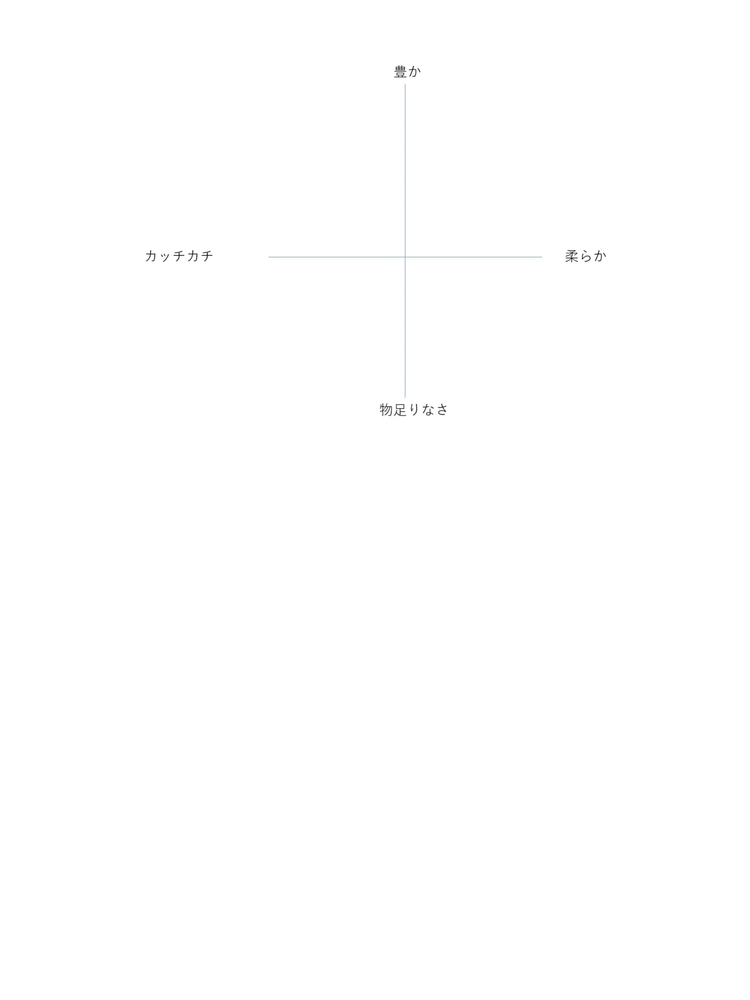
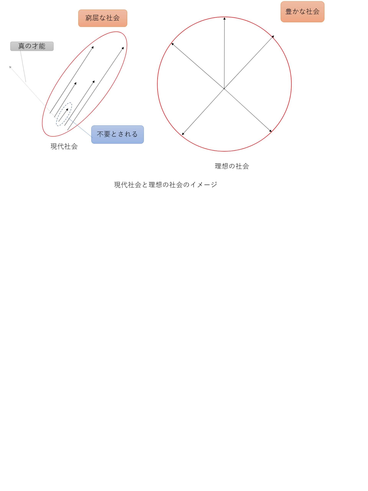

| 「面白い！」であなたの世界を変える 知的好奇心主義入門書 | |
| 多渡 拓未 | |
| (2018) | |
多渡 拓未
あなたは知的好奇心、持っているだろうか。この文章は、知的好奇心について知ってもらうことで、持っていない人は手に入れて、持っている人は更に深めてもらいたいと思って書いたものだ。あなたは知的好奇心とは何だと思うだろう？恐らく、そこまで深く考えたことはないのではないだろうか。私は知的好奇心が大好きすぎて、知的好奇心について洞察した末、０から作り上げたのが、この知的好奇心主義だ。知的好奇心にあまり興味のない方も多いかもしれない。だが、この文章は、単に知的好奇心について述べるに留まらない。私の理論によって、いくつかの、世の中に関わる、とても重要な謎を解き明かすに至っている。そして、今の日本を蝕む病の正体も。この文章は今の世の中が最も必要とする文章なのではないかと思っている。きっとあなたの心も軽くする内容が含まれている。そしてこの世界を変えていきたいと思って書いたものだ。
まずはどんな話をするかの説明をしよう。
１.人の才能と知的好奇心についての洞察
ここでは、人の才能とはなんなのか、また知的好奇心の持つエネルギーについて説明しようと思う。才能に悩む人、日々の生活が退屈な人々には、是非読んでいただきたい内容だ。
２.人の脳と精神についての洞察
ここでは、人の脳と精神の関係について、私の見識を述べる。一般的に言われている精神と脳との関係とは、全く異なるものになるはずだ。
３.悟りと真理についての洞察
悟りというのは、あるようだと言われているが、それが何なのかまだ明らかになっていないだろう。その正体に迫った。また、その過程で真理についてもその正体を明らかにすることができた。これらはいったい何なのか。それを書いていこうと思う。
一見それぞれの内容は、関連がないように見えると思う。だが読んでいけば、すべてが繋がっていることに気づいてもらえるはずだ。そして、今の世の中に重要な意味を持つことも。
また、３番については、聞きなれない、怪しいと思う方もいるかもしれない。だが、これは世の中を変えるためには重要なことだ。安心して欲しい。これについてもできるだけわかりやすく論理的に述べていこうと思う。神秘的な言い回し等は一切しない。
本文は恐らく、あなたに新たな視点をもたらせるのではないかと思う。少しでもあなたの心に本書の内容が響けば幸いであり、人々の心持ちが豊かになればこれ以上の幸せはない。どうか、楽しんでもらえますように。
２０１８年６月２３日 多渡 拓未
この文章の目的は大きく分けて二つ。一つは、知的好奇心の良さを伝え、多くの人に知的好奇心について考えてもらうこと。あなたは、今何かにワクワクしているだろうか。または、何かに熱中しているだろうか。そうでない人は多いと思う。そういったものはなかなか見つからないものだ。この熱中する力、ワクワクする気持ちが知的好奇心だ。これはあると何となく良いというレベルのものではない。知的好奇心には本当の意味で世界を変えるエネルギーがあるのである。
私は知的好奇心大好き人間、知的好奇心マニアである。知的好奇心について考えすぎて、その手に入れ方や、深め方を具体的に伝えられるまでになった、と自負している。この文章を読んで、是非すでに持っているあなたはさらに知的好奇心を深め、まだ持っていない方も知的好奇心の良さを感じて、あなたのものにしてもらえたらとてもうれしい。
そして、もう一つの目的は、私の新たに提唱する知的好奇心主義
によって、世界を変えていくこと。今の世の中に、閉塞感を感じていないだろうか。日本には、世界には、何か得体の知れない暗雲のようなものが立ち込めていると。だが、もう安心して欲しい。知的好奇心主義は、いや、知的好奇心は、この閉塞感を打開する力を持っているのだ。
誇張ではなく、少なくとも私自身は本気でそう思っている。この文章を読んでいけば、世界に広がる暗雲の正体が明らかになるはずだ。そして、その解決方法も。そのキーワードが知的好奇心なのだ。世界に知的好奇心主義者
を増やし、この世界を現代から未来に変えていく、それがこの文章の、知的好奇心主義の大きな目的だ。
「知的好奇心主義」は、一連の理論体系に支えられている。名前の通り、この理論は知的好奇心に関するものだ。主義とは、「継続的に持っている思想上の立場」であるとされる。確かに知的好奇心主義は思想に近いのかもしれない。とはいうものの、この文章には過激なものや極端な考え方は無いと思う。難解な用語も出てこないし、主に例え話を用いて進めていくため予備知識もほとんど必要ない。気軽に読んでいけるものを書いていきたいと思っている。
そしてこの理論は、現代に最も重要なものであると私は思う。知的好奇心によってあなたを、世界を変える、それが知的好奇心主義なのだ。
とにかく、本題に入るためにこの文章を書くに至った経緯について触れていかせてもらえればと思う。
まあ、本当に順調な人生を送った人間は極めて少ないと思うが、私もご多聞に漏れず、そこまで順調な人生を送ってきてはいない。私は、高校の頃にうつ病を発症してしまった。原因は今回は省かせてもらいたい。一度は治ったものの、大学生の就活の時期に再発させてしまった。最悪のタイミングだ。体調も最悪といってよいくらいだった。ただでさえ何も手につかない上に、すぐに治るものではない。それに、もし就活を何とか終わらせて仕事を始められたとしても、体調を崩したら大きな迷惑をかけてしまう。そう考えると、就活はできなかった。そこで、もともと進もうか悩んでいた大学院に進学して、療養をしつつ勉学を続けていくことにした。病気と戦いながら、実験をしたり論文を書いたり。少しよくなったと思ったらまた何も手につかなくなって。結局修了は時間をかけてできたものの、やはり就活をできるほどの体調にはならなかった。私はどうしても考えなくてはならなかった。自分はどうやったら生きていけるのかを。ひとまず実家でゆっくり療養しながら、のんびりと、だが真剣に考え始めた。
私は、大学院生活のなかで、一つの事に気づいた。それは、大事なのは単なる頭の良さではなく、どうやら頭が良くても興味を持っていなければ、優れた業績を挙げられないようであるということだ。私は興味があったから学問を更に深めようと思ったはずなのだが、私の学問への興味というのは、どうやら自分の思ったよりも少なかったようだった。それに対して、先生や他の優秀な院生たちは、学問へ強く興味を持っているようであった。彼らは忙しい中でも生き生きと研究に取り組み、大きな成果を挙げていた。私もそうなりたい。だから私は、自分の興味は本当はどこにあるかを考え始めた。きっと興味のあることなら、私も体調を崩さず仕事にできる。私が生きていくためにはそれを見つけねばならない、と。
私が興味を強く持っていたのは、趣味、ホビーの領域だった。私はサバイバルゲームを愛好していた。皆さんサバイバルゲームをご存じだろうか？大の大人が迷彩服を着て、エアガンを振り回して、野山を駆け回る遊びだ。これに出会ってからというもの、私はオタクになってしまった。それまでは、おしゃれも趣味のひとつであった。セレクトショップで服を買い、ファッション誌を読んで、おめかしをして出かけることを楽しんでいた。だが、サバイバルゲームに出会った瞬間、もうそんなことはどうでも良くなった。ライフルの機種毎の取り回し安さの差に比べたら、今の流行りだとかアメカジだとか、そういうのはとるに足らないと、本当に思うようになった。代わりに銃の情報を狂ったように集めた。銃の口径、生産国、射程距離、連射速度、命中精度、採用実績、そんな、およそ日本に住んでいて一ミリも必要の無い知識を嬉々として頭に入れていった。一冊５０００円の銃の辞典も、迷わずすぐに買った。頭の先までどっぷりとこの世界にはまり込んでいたのだ。どうやら私の興味はここにありそうだと思い、私はホビー業界への就職を考え始めた。
そうと決まれば、面接やエントリーシートに向けて、私なりの趣味論を組み立てねばならない。驚いたことに、趣味に関することならそれなりに深い考えが苦労なくどんどん出てきた。とりあえず就活をしなければと院生時代に国立大学職員に応募したときとは天と地の差があった。あの時は苦労に苦労を重ねて志望動機やらをひねり出したくせに大したこともなく、面接でクソみたいな受け答えをして、死を考えながら帰ったものだ。楽しい思い出話はさておき、己と向き合えば向き合うほど、私は趣味というものに何か「情熱のようなもの」
を感じた。それは、私の中からわき出てくる、迸るエネルギーであった。まるで水道管が破裂したかのようなエネルギーがドバドバ湧いていたのだ。その溢れるエネルギーによって、私の中に趣味に関する論理がどんどん構築されていった。
驚いたのは、趣味に出会うまでは、20
年以上生きていたのにもかかわらず、こんなエネルギーが自分のなかには存在するとは全く思ってもみなかったことだ。サバイバルゲームに出会う前にも色々なことに取り組んできた。おしゃれも、勉学も、スポーツも、かなり頑張っていた。どれも、それなりには成果を挙げていた。だが、その頃の一生懸命なんてのは、その「情熱のようなもの」の前には、所詮おままごとであった。スポーツは時間をかけた割に中の上止まり、おしゃれも、セレクトショップに入るのは若干気後れして苦手だった。特に学問においては、私は学会というものが怖くて仕方なかった。名だたる権威たちの前で私の拙い研究の発表をするなんてことは、拷問だ。中世の。残虐な。きっとかなりの追及に会う。行きたくない。そう思っていた。しかし、もしあるのなら銃器に関する学会には参加してみたいと思った。どんなに拙かったとしても、発表して、権威たちのを見解を伺いたい。厳しい指摘を受けてもきっと見識が広がったと喜ぶだろう。そう思った。急にMに目覚めたわけではない。それだけ自分の入れ込みようが違ったのだ。情報の吸収率も、趣味関連の情報なら大学の授業の数千倍は吸収できた。この「情熱のようなもの」にはそういった力もあるようであった。
サバイバルゲームだけでも十分私の世界は一変したのに、私は更なるエネルギーを見つけてしまった。次はプラモデルにのめりこんでいったのだが、私はこれにサバイバルゲームよりも強い「情熱のようなもの」が湧き出るのを感じたのだ。これもかなりの衝撃だった。まだこんなに大きなエネルギーがあった。一体どれほどのエネルギーが自分の中にあるのだろう。
ここまでで私が気づいたのは次の２点だ。
① ２０年以上生きてきて感じたことのない、途方も無いエネルギーが、自分の中からふとしたきっかけで湧いてきた。
②
そして、それはもっと探すと、自分の中に更に大きなエネルギーとして出てくるようなのだ。
趣味に対する私の「情熱のようなもの」は、今までの人生で感じてきたものとは量が違うと感じていたが、どうも量だけの問題ではないように感じ始めた。なんにせよ、それを追い求めているときの人生の豊かさは尋常ではなかったため、人はこの「情熱のようなもの」を追い求めるべきだと思うようになった。
要するに自分のなかには想像もしないエネルギーがあり、生き方すら変えてしまうほどの力を持っているのだ。私はこのエネルギーの虜になってしまった。皆にもこのエネルギーを感じて欲しい。その手伝いをしたい。それが私の目標となった。
急に違う話になって申し訳ないが、この頃から瞑想を始めた。理由は大したことではない。ただ、ニュータイプになりたかったからだ。皆さんはニュータイプ、ご存知だろうか。「機動戦士ガンダム」に出てくる新人類のことだ。尋常ではない勘で相手の攻撃をかわし、脳波でコントロールした武装で四方八方から攻撃し、謎の時空で相手とわかりあう、あのニュータイプである。瞑想を極めて無になり、第六感で感じることが出来れば、私にもなれるのではないかと思ったのだ。いい年して何言ってんだと言う声が方々から聞こえてくるようだ。恥ずかしい。こんなこと書きたくないが、必要なことなので仕方ない。とにかく、毎晩寝る前に瞑想をするようになった。
すると感情面で変化が見られた。感情を制御できるようになってきていたのだ。例えばある日大浴場でシャワーを使っていたら、隣のおっさんが急に「おい、お前のシャワーがかかっただろ」と文句を言ってきた。一応謝ったが、「そりゃこの狭い間隔の中で頭洗ってりゃたまにゃシャワーぐらいかかるだろ冗談はそのハゲだけにしろよデブが」と腹を立てた。しかしその後、私は冷静に、「私は今、おっさんに不必要なまでに強い口調で文句を言われたから不快に思っている。もし相手が丁寧にきてくれたらこんなに腹も立たなかっただろう。きっと心から謝罪も出来た。
しかし、問題はそこではない。私にも悪いところがあったからこそこんなに不快な気持ちになるのだ。何も関係がなければ腹は立たないはずだ。きっと少し気が抜けていたのだろう。今最も必要なのは、私が悪かった面を反省することだ。私が不快になっている一番の原因はそこなのだから」と冷静に考えられるようになっていた。すると、不思議なことに怒りが収まり、腹を立てる前よりもむしろ落ち着くくらいだったのだ。つまり、案外自分が怒っている理由も、詳細に分析してみると意外な理由であったりするのだ。この場合は、「おっさんの態度が悪かったから怒っている」ように見えて、実はむしろ「おっさんの態度のせいで素直に反省できないことが不快」だったのだ。そう思うと、「起こったことはどうしようもない。これからは自分のためにもシャワーを気をつけて使おう。この話はそれでおしまい。」とそれで本当に納得できるのだ。原因が正確にわかれば、自分の頭は納得する。これは瞑想が上手くなってきたらますますうまくできるようになったことである。面白すぎて、私は瞑想に熱中していった。
また当初はその関連性に気づかなかったが、とにかくその頃から私の思考が加速的に深まっていった。瞑想を始めてしばらくして、いつものように自分の趣味論や「情熱のようなもの」についてじっくり考えていた。それはもはや就活のためではなく、私の生活の一部になっていた。ある時私はふと気づいた。「情熱のようなもの」の正体は、知的好奇心であった。それは、対象に対して自然と湧いてくる明確で詳細な疑問であり、「面白い」と思う心だったのだ。
ウィキペディアから抜粋すると「好奇心（こうきしん）とは、物事を探求しようとする根源的な心。自発的な調査・学習や物事の本質を研究するといった知的活動の根源となる感情を言う。」。また、それはもはや「情熱」と言っても差し支えなかった。情熱とはデジタル大辞泉によると、「ある物事に向かって気持ちが燃え立つこと。また、その気持ち。」私の感覚もこれと大きくは変わらない。
興味と知的好奇心も異なると感じた。興味とは「人の関心を引く面白み」と辞書に載っている。私の感覚では「興味」は、どちらかというと、「面白そう」という感情に近いものであり、完全に「面白い」である知的好奇心とは少し違う。優秀な人々が持っているのは完全なる知的好奇心だ。私が学問に持っていたのはあくまで興味であった。「面白そう」であったのだ。だからそこまで大きな成果が挙げられなかったのだ。だが、趣味において私は知的好奇心を持っている。この莫大なエネルギーは、知的好奇心だったのだ。
一方で「楽しい」と「面白い」の差にも気づいた。「楽しい」とは、デジタル大辞泉より「満ち足りていて、愉快な気持ちである」と定義されている。単に表面的な楽しいに対して、私にとって知的好奇心とは、簡単に言うと「心の底から湧き上がるような探求したいというエネルギー」だ。
要するに「楽しい」と「面白い」は、根本的に全く違うことがわかったのだ。fun（楽しい）とinteresting（面白い）の違いと言えば、中学校の英語の授業で習った覚えがあるが、そもそもこの二つの違いはなんとなく違うだけではなく、そのエネルギーの差によるところが大きいとわかった。私は、サバイバルゲームに出会うまでは、割と「楽しい」で暮らしていたが、出会った後の感情は、「面白い」であった。現在の私の理論では少し異なるが、その時には「楽しい」と「面白い」は、「公園の噴水」と「火山の噴火」くらいの差があると感じていた。「楽しい」は表面的だ。一時的なものだ。それを求めるのはもちろん全然悪いことではないが、そこからは大きなエネルギーは得られない。人々は今「楽しい」を過剰に追い求めすぎているのではないか。世の中は「楽しい」を生み出す技術をどんどん進歩させているが、それだけでは人々の心は満たせないと感じた。一方で「面白い」には無限のエネルギーがある。それは人々の内側からあふれ出し、求めれば求めるほど滾々と湧き出る。そもそもその質が全く違うのだ。そのエネルギーは人々の心を豊かにし、それを追い求めることこそが今の人々に求められることなのだと思いついたのだ。
そう思ったとき、私の心は、もはや特定の仕事からは離れていた。例えばエアガンメーカーに勤めたとして、仕事としては万人にエアガンに興味を持ってもらうことを目指すことになるだろう。しかし、それは私の本当にしたいことではない。知的好奇心を持つ対象は十人十色となるのだ。それを一つの方向に向けようとするのではなく、私は、人々に真の知的好奇心を持たせる手伝いがしたい。一人一人が知的好奇心を掘り返す手伝いを。もっと考えなくてはならない。いや、考えずにはいられなかった。思考がひとりでに走り出して、止まらなくなり始めていたのだ。
とにかく、知的好奇心について思いついたときから、いろいろなことがそれで説明がつくことに気づき始めた。詳しい内容についてはこの章の後で述べるが、人の才能についても説明が出来ることに気づいたのだ。私の気づきを簡単に言うと、才能とは知的好奇心なのではないかということだ。あるジャンルの天才といわれている人は、そのジャンルへの知的好奇心にあふれている。一方で自分には才能がないと悩む人たちは、あまり知的好奇心で動いていないのではないのではないかと感じたのだ。そこには欲だったり見栄だったり、もしくは「面白い」よりも「楽しい」で動いている、という差があるのではないか。また、多くの人は、「自分はこれ以上に好きなものがないからこれをやるしかない」と考えているのではなかろうかとも感じた。しかし、私もそうであったが、知的好奇心とは埋まっているものであり、掘り出してやる必要がある。また、それを掘り起こすまでそんなものが自分の中に埋まっているとなど露も思わないのだ。だから人は、すでに自分の中に湧いている最大のものしか、見えない。今現在あなたが一番好きなものは、後から考えれば「公園の水のみ場の水」くらいしかエネルギーが沸いていない可能性があるのだ。一方で、天才と呼ばれる人々には、「ナイアガラの滝」のようなエネルギーが湧いている。「公園の水のみ場の水」VS「ナイアガラの滝」。これでは勝ち目は無い。体が栄養分がないと動けないのと同じように、精神もそのようなエネルギーがなければ動けないのだ。気合や根性では、それは埋められない。
勘違いしないで欲しいのは、「あなたは『公園の水のみ場の水』なんだから諦めなさい」等といっているわけでは断じてないことだ。というのも、これは私の考えの中核をなす考えなのだが、すべての人の心の中には、「ナイアガラの滝」、いやもしかしたらそれ以上のエネルギーが必ず、よく聞いて欲しい、必ず埋まっているのだ。 しかしそれは、今あなたが一番好きなものの下に必ず埋まっているというわけではない。それは、どこでも掘りさえすれば出てくるものではないのだ。この世の中には、想像もつかない数のジャンルがある。そのどこかに、それは埋まっているのだ。静かに。だから、必要なのはそれを見つけ掘り起こすことなのだと私は考えるようになった。
そこまで考えるようになる頃には、私の瞑想は中々上手くなっていた。段々と無になるとはどういうことなのかがわかり始めていた。 そして忘れもしない、ある日のこと。その日もいつものように寝る前に布団に入って瞑想をしていた。その日の瞑想は調子もよく、集中できているなと感じていた。しばらく続けていると、「お、今のはすごく無だったな」という瞬間が訪れた。よしよしと思い、もう一度集中した。２度、３度と「今のもめっちゃ無だった」というのを繰り返し、およそ４度目の無でついに「それ」は起こった。私の人生を180
度どころか、別次元に跳ね上げるほどの出来事であり、全く全てを変えてしまった。それが起きたとき、私は飛び起きた（私は横になりながら瞑想をしている）。出てきた感想としては、「何かが起こった。とんでもない何かが」以外わからなかった。いや、わかった。何かが起きたし、それが何かはわからないが、わかる。わかった。私は混乱していた。10
分ほどベッドに座ったまま「よくわからないけどめっちゃわかる」状態の渦の中でぐるぐると回っていた。やがてその渦が弱まったところで、私はふと自分が置かれた状態に思い当たる節が見つかった。スマホを開き、グーグルの検索欄にある単語を打ち込んだ。小一時間色んなサイトをめぐった後、ついに私の身に起きた症状の診断名が下された。
「それ」は、恐らく、いや、間違いなく、悟りとしか言いようがなかった。
待ってください。読むのをやめないで。何だその手の話かとか思わないでいただきたい。読んでいけばわかってもらえるのだ。嘘や誇張、比喩などではないと言うことが。大丈夫、私は特に何かの宗教に皆さんを引き込もうと言うのではない。そもそも私は何の宗教も信じてはいない。特に狙ったわけではなく、偶然悟りを開いてしまったのだ。
これだけ書いても恐らく誰一人として信じてくれないだろう。わかる。当たり前だ。だが、私は、単に偶然悟りを開いただけではない。私の提唱する「知的好奇心主義」の理論体系によって、悟りとは何かを論理的に解き明かすことに成功したのだ。
少しでも興味はお持ちではないだろうか、悟りとは何なのか。そして、悟りを開く方法も。怪しい話は一切しない。きつい修行とか、高いつぼを買うとか、謎のセミナーに出席することも一切必要ない。誰にも頼ることなく、自分で悟りは開ける。全て論理的に、私の知りえたものすべてを包み隠さずお教えするので、是非読み進めていただきたい。
悟り。それは色々な言葉であらわされるという。私は、求めていた答えをその瞬間に手に入れたと感じた。私にとってそれは、「知的好奇心の果て」
であり、また「本質的な問いに対する本質的な答え」
であった。何といっても結局は伝わらない。どうとでもいえるし、どうも言えないのだ。と、その時はそう思ったが、何ヶ月も洞察に洞察を重ねた結果、なんとそれを理論的に説明することが出来たのだ。それどころか、｢知的好奇心主義」は、悟りすらもその理論に取り込んだ。これについては順を追って説明していきたい。
とにかく悟りを開くとどうなるのか。それはもうすごい。何といっても、全てがわかる。「あれもわかるし、これもわかる。するとそれはこれとあれで説明できるし、どれも結局はこういうことなのか！」そんな感じだ。その日は結局夜の四時まで思考が止まらなかった。次々に様々なことがわかるから、終わりがなかった。でもいい加減眠かったので、その日は眠くなる薬を飲んで寝た。
次の日は、８時くらいには目が覚めた。正直起きた瞬間から昨日のことは夢で、起きたら何の変哲も無い日常が戻ってきているのではないかと思いながら起きたが、相変わらずすべては変わったままだった。全てわかる。そして私は今この瞬間を生きているという実感。そして、圧倒的な感謝があった。とにかく感謝。驚いたことに、自然と両手が合わさった。合掌。これだけは未だに何故かはわからない。私は仏教徒でもないし、感謝したときに手を合わせる文化はそれまで私にはなかった。インド人でもない。でも何故か手が合う。他には、周りがとても静かになった。朝だから静かというのもあったが、何というか雑音が全くしない。１００円のイヤホンを外して代わりに高いノイズキャンセリング機能のついたヘッドフォンを付けた感じといって伝わるだろうか。むしろ何かから自由になった感じはしたが。総合的に見ると、何というか「到達したな･･･」という感があった。私はとても満足した。それから２,３日は満足感に浸りながら、いろいろなことを考えて過ごした。何というか、「答えは得たので割りともういいです」感があった。
しかし、いろいろなことを考えていると、急に「ある結論」にたどり着いた。世の中に関する、かなり悪い結論だ。原因と過程、結果までわかった。何しろ今の私には何でもわかるのだ。その「ある結論」を放っておいて、悠長に手を合わせている場合ではないことに気づいたのだ。重大な結論だ。見て見ぬふりは出来なかった。事態は急を要する。これを人々に伝えねばならない。今の世界を変えねばならない。そこから私の知的好奇心主義の構築が始まった。少し不穏になってしまったが、安心して欲しい。それと同時に、私には向かうべき未来も見えた。この問題の解決方法と、その先に待つ未来までわかったのだ。それを伝えるには、一連の理論体系をすべてを書き連ねねばならない。一つ一つでは、伝えきることができない。すべてはつながっているのだ。
これから書く内容が一理あるのか、それとも全くのでたらめかで、是非みなさんに判断していただきたいのだ。私が本当に悟りを開いたと言えるのか、それとも、将来への不安から私の頭がおかしくなってしまったのかを。もしくは、「悟りを開いたと自称する人間のいう事をちょっと聞いてやるか」くらいの気持ちでもかまわない。是非本当に騙されたつもりで読んでいただきたい。絶対に後悔はさせないはずだ。
前置きはここまで。ようやく本題に入れる。これから書く内容は、是非あなたにも一緒に考えていただきたい内容である。
世の中に議論を巻き起こしたい。それにこの理論体系は、私が一人で練ったものだ。もし正しくても、まだ洗練の余地があるはずだ。知的好奇心主義のブラッシュアップに、さらにこの理論体系を知った上で、「ある結論」から逃れるためにあなたの力を貸していただきたい。あなたにも知的好奇心主義者になってほしい。
そう思って本書を書いた。
まずこの第一部では、私の新しく提唱する「知的好奇心主義」について、例え話を用いて述べていく。第一章では人の才能と知的好奇心について述べる。まずは、知的好奇心と才能とはどんなものなのか、それをどうやって深めていくのかについての話をさせてもらいたい。第二章では精神と脳の本当の関係について述べる。知的好奇心、つまり才能を発揮するためには、精神と脳が正しい関係にあることが、実はとても重要なのだ。そして、第三章では悟りと真理とは何か。それを明らかにしていく。一章から二章もそうであったが、知的好奇心と悟り、そして真理が一体何の関係があるのかと疑問に思う方もいるだろう。だが、すべては密接に関係している。それが読み進めていくうちに明らかになるはずである。是非興味を持った方も、疑惑の念が消えない方も、一読していって欲しい。きっと皆さんの人生の、何かヒントになるはずだ。
一章から三章までの内容が、それぞれ知的好奇心主義を支える、三本の柱になる。すべての柱があなたの中に確立されたとき、知的好奇心主義の全容が理解していただけるのではないかと思う。
知的好奇心主義の最終目的は、
「全ての人の可能性を最大限に発揮すること」
である。さあいよいよ、私が０から提唱する知的好奇心主義の世界に入っていただくとしよう。是非楽しんでいって欲しい。
ここからは私が洞察した、知的好奇心主義を支える３つの柱のうちの一つ、「雨水と地下水理論」
についての話だ。この理論は知的好奇心の特徴についての理論だ。簡単にまとめると、才能とは知的好奇心のことなのである。物事を、本当に面白いと思う心なのだ。勉強だろうが、スポーツだろうが、音楽だろうが、ゲームだろうが関係ない。それを「面白い」と思っているかどうか、たったそれだけのことだ。脳の出来不出来とかではない。確かに小さいときにピアノだったり体操だったりを嗜んでいると、運動神経が発達して、様々な事に対して適応する、つまり最初からとても上手にいろんな事をできるようになる、というのはあると思う。しかし、それも、最初は人より上手くできても結局中々伸びきらないということはよくあることではないだろうか。それは、知的好奇心がそこまで持てていないからだとこの理論では考える。
大事なのは、ある物事を本当に探求したい、探求せずにはいられないと思っているかどうかなのだ。スポーツにおいては、確かに体格は重要なファクターだ。しかし、それでも最も重要なのは知的好奇心だと断言する。知的好奇心はエネルギーであると同時に、ズームレンズのような働きもする。知的好奇心がそこまで野球に無い人は、バットで素振りをするときに、「腰と肩を回してから腕を･･･」と腰と肩と腕だけで考えているかもしれないが、天才と呼ばれる人々は、もっと細かくズーム機能を働かせ、下手したら筋繊維の一本一本にまで気を配って制御しているのではないかと私は感じたのである。これは、誰もが教えられたり訓練を受けることで出来るようにはならない。その物事に本当に深い知的好奇心が、やりたい、やらずにはいられないという気持ちがあってこそ出来ることだ。
恐らく現代人の大好きな考える力というのも知的好奇心だと思う。物事を深く考えるのにはエネルギーがいる。このエネルギーが知的好奇心なのである。このように、知的好奇心は単に知識だけに留まらず、恐らく体や頭の使い方にまで影響していると考える。そして、ある物事について、才能のあると言われる人と才能がないと言われる人の間には、明確なスタンスの違いがあるのだ。それが先ほども述べた「面白い」と「楽しい」の違いだ。この区別は初めはとても難しいが、とにかくその二つは大きく違う。「面白い」こそ知的好奇心なのだ。中々上手くならない人の多くは、「楽しい」でそれをやっているから、中の上で止まるのだ。「楽しい」は知的好奇心とは違うことが多い。
ここまで読んで、「そんなことはない、私だってテニスが面白くてうまくなりたくて頑張っているが、全く上手くならないんだから」と言う人もいるだろう。そこには、ある一つの根本的な理由がある。中には、本当に「面白い」で物事に取り組んでいる人もいる。それでも中の上で止まってしまっていて、自分の才能の無さにがっくり来てしまっているかもしれない。しかし、これも「面白い」の「量」によって説明することが出来る。つまりは、まず「楽しい」と「面白い」という「質」の問題、さらに「面白い」にも「量」の問題があり、これがさらに現代の才能についての見方をややこしくしている。しかし、冷静に見定めることができれば、実はそんなに難しくない。
私は、この問題を、「雨水」と「地下水」に例えて理論として組み立てることに成功した。何故自分が最も好きなもので成果を挙げられないのか、どうやったら自分の才能をフルに発揮できるようになるのか、どうして何でも上手くこなすことが出来る人間がいるのか。そこまで説明できる理論を私は洞察した。たとえ話で話すので、想像しながら読んでいただければと思う。それでは、知的好奇心についてお話させていただこう。
まずは、あなたという人間を、土地に例える。心理学の療法で使われている「箱庭」みたいなものだ。ただしそこに家がある必要も人がいる必要もない。ただ土地があるだけだ。あなたは、どんな土地だろうか。緑豊かな山から穏やかに川が流れ、野に花が咲き、鳥は歌い、風がそよぐ、日曜日に家族で出かけてお弁当でも食べたくなるような風景だろうか。それともぺんぺん草も生えない、石ころだらけのどうにもならない土地だろうか。どちらにせよあなたが今想像した自分を表す風景は別に今後一切使わないので、もう適当にその辺に捨てておいて欲しい。それで性格診断をしたりするつもりは、今は特にない。とにかく、あなたという人間は、ある程度の広さを持った土地なのだ。まずはそう考えていただきたい。そしてそこには、地球上の多くの地域のように雨が降るのだ。雨がなければ、生きとし生けるものはほとんど発生しない。雨はあなたという土地に降り注ぎ、多かれ少なかれその土地を豊かにする。この恵みの雨が、現実世界で言う「楽しい」という感情だ。
それは、ほとんどの場合あなたの外側から来て、あなたを潤す。楽しくなければ、積極的に生きるのは難しいはずだ。
しかし、地面にたまった雨水なんてものは、次の日にちょっと日が差したら、午後にはすぐに乾いてしまう。ちなみに、「日」はまあ、日常生活のストレスみたいなものだ。多少のストレスがないと人は逆に生きていけないというところも、まあある程度一致しているのではないかと思う。ところが現代社会の中では、恐ろしく強い日差しが年がら年中降り注いでいる。雨なんて降らしても降らしても足りたものではない。多くの人々は、常に乾きに苦しんでいるのではないだろうか。
多くの人々と言ったが、一部の人は、世紀末もかくやと思う日差しの中に同じくいるはずなのに、なぜか水を得た魚のようにぴんぴんしていることだろう。乾いた地表に見捨てられた魚のようにぴちぴちと跳ねながら思うはずだ。この殺人的な日射のなかで、その一部の人たちはどこからそんなに多くの水を得ているのだろう、と。
その秘密は、地下水だ。地表はある程度乾いていても、地下水はそうそう途切れたりしない。紫外線がそろそろ目に見えるようになるのではないか思えるような激しい日差しの中でも生き生きしている人々は、実は地下から水を引いているのだ。この地下水が、「面白い」という感情である。
「楽しい」と「面白い」は二つとも土地を潤す「水」であることは同じだが、実はその量が段違いなのだ。雨水はすぐに乾いてしまうが、地下水はそう簡単には枯渇しない。それにミネラルも豊富だ。上手くいけばペットボトルに詰めて一本150
円で売れるかもしれない。
そう、同じ仕事をしている人々でも、段々つらくなってくる人々と、ずっと生き生きと仕事を続けている人がいるのは、使っている「水」の種類が違うのだ。好きで選んだ仕事なのに、どうして辛いんだろうと悩んでいる人は、それがどんな分野にせよ、その分野を「楽しい」から選んだのではないだろうか。もしくは「面白そう」か。「楽しい」は確かにエネルギーたり得るが、常に外から補充されなくてはならない。しかし、そんな新しい楽しさは、そう毎日は手に入らない。すると、日差しが強かろうが弱かろうがその内地面がからからに乾く日が来る。楽しさは有限なのだ。「面白そう」もやってみたら面白くないかも知れないから、「水溜まり」位のものだと思う。近づいてみたらそれは「地下水」が湧き出したものかもしれないが、そうでなければすぐ枯渇するしかない。それに人生を賭けるのは、ギャンブルだ。
一方で、「面白い」で仕事を選んだ人はどうだろう。彼らの内側からは常に地下水が湧いている。多少日差しがきつくても、時折雨が降れば、その内側に水をためればどうとでもなる。彼らはその豊かな水資源で、仕事をてきぱきと、かつ独創性を持ち、仕事で成り上がって行くだろう。彼らは吸収力が違う。同じ物事を経験しても、知的好奇心があればあるほどそこから多くを学び、大きく成長していくだろう。雨水しか利用していない人々は、それを見ていることしか出来ない。
しかも、「面白い」にもさらに量の差がある。
地下の水脈が太いものもあれば細いものもあるのと同じだ。地下から水がドバドバ出ていれば出ているほど、その人はエネルギッシュで、仕事も出来る。一方で「面白い」から仕事をしている人でも、結局水脈が弱ければ、そのような優秀な人間には敵わない。それどころか、日差しに負けてからからになってしまうかも知れない。
そうした豊富な「地下水」、つまるところ湧き上がるような精神エネルギーがなければ、本当にその分野での第一人者になることは不可能なのだ。ちょうど水がなければ物理的に生物が生きていけないのと同じように、知的好奇心という名の精神エネルギーがなければ、人は他人の心を動かすような新しいことは出来ない。結局誰でも思いつくようなレベルにしかなれないのだ。それはどんなに我慢強くても水を飲まずには生きていけないのと同じように、気合や根性でどうにかなる問題ではない。多くの「水」がなければ、人は大したことは出来ない。
これは、何も仕事だけに当てはまるわけではない。基本的にはスポーツだろうがもの作りだろうがすべての物事に当てはまる。仮にあなたが才能に悩むバンドマンだと思っていただきたい。自分が一番好きだからやっている、自分にはこれしかないと思いながら燻っている状態の人は多いのではないか。もちろん、芸能関係には運もある。実力があっても、スカウトマンの目にとまらなければどうにもならないのは確かだ。しかし、まず難しいことは抜きにして、自分の心と向き合ってみてほしい。自分は、本当に「面白い」からやっているのだろうか？もしそうだとして、その「面白い」のエネルギーは、自分の人生を賭けるにふさわしい大きさであると言えるだろうか？それは例えば、世界的なミュージシャンと同じレベルだろうか？常に具体的にあれがしたい、これはどうやるんだろうというワクワクした気持ちがあるだろうか、と。
もしこの質問に迷うようなら、それに人生を賭け続けるのは、とりあえず一度様子を見たほうが良いと私は勧める。というのも、情熱、知的好奇心が無ければ、例え何かを1000年続けていてもちょっと得意レベルで止まってしまうのだ。
「地下水」が湧いていない状態の人は、あまり詳細な疑問を持たない。精々「どうやったらうまくなるんだろう」位の漠然とした疑問だろう。そんななんとなくの問いにはなんとなくの答えしか与えられないはずだ。一方で才能のあると言われている人は、「地下水のエネルギー」、知的好奇心でどんどん疑問を持つ。そして、その問いややりたいことが詳細でしっかりしているため、自分でその答えにたどり着く。そして、また次の疑問が浮かぶ。それの答えをまた得る･･･この繰り返しによってその人の技能や知識は深まっていき、そして色々なことに気づくだろう。探求したくてしかたない気持ちを持ち続けながら。何も知的好奇心が大してないなら無駄だからやめてしまえというのでは断じてないのだ。それを続けているということは、ある程度の「水」（地下水か雨水かはわからないが）は得ているわけだから、それならばむしろやめないほうが良い。私は、そこに水が湧くかもわからないのに、そこだけを掘り続けるのはやめた方が良いと言っているのだ。もっと色々なところを掘ろうとして欲しいのである。
というのも、ここはテストに出るところなのでマーカーで線を引いておいていただきたいのだが、「地下水」は、掘ればどこにでも湧くわけではないのだ。
水脈とは人によって大まかに決まっていて、それを掘り当てることが重要なのだ。だから、今の水脈より大きなものが見つかることは十分にありえることだ。それは今一番好きな分野に湧くかもしれないし、全く別のところに湧く可能性も大きい。つまり、今自分が一番好きなものが、未来永劫一番好きなものである可能性は、非常に低いということでもある。
もちろんすでにとても大きな水源に当たっている人に関してはそれを追い続けて欲しい。だが、そうでなければ、ここで少し立ち止まって考えて欲しいのだ。そういう「地下水」を持つ人間が特別なのではないかと言う人もいるかもしれないが、そもそも同じ人間なんだから、同じエネルギーを持っていても不思議はない。世界的ミュージシャンと才能に悩むバンドマンを分けているもの、それは、ただ単にその分野に「水脈」を掘り当てたか、掘り当ててないか、それだけだ。最も、見つけるのも掘るのも簡単ではないのだが。そして、これからの時代はこの「水脈」を見つけることが最重要課題になると、私は感じている。この知的好奇心主義は、そのための理論だ。
では、具体的にはどう掘り当てていけばいいのかについて述べさせてもらえればと思う。私にはその方法もわかった。ただし、これから書いていくが、この文書を読み終わったらすぐにどうなるというわけではない。この理論を基に掘り当てるのは、あなた自身だ。
私も誰も、あなたの水脈をあなたの代わりに探すことは出来ない。大切なのはあなたが向かおうとする意思だ。それがあれば道は開ける。
それでは早速地下水の掘り方について、書いていく。地下水を掘ることとは、噛み砕いて言うと、趣味を深めることである。
それも、単に楽しいものではなく、知的好奇心を感じるものを、である。いきなり仕事としてしまうと、忙しさに追われてそれ以上追求するのが難しくなるし、大して水が湧いていないと途中で躓いてしまう。その点趣味は、やらなくても怒られないし、ノルマもないし、好きなことを好きなように出来るのでとても自由だ。自分の「好き」を深めていくのに、つまり知的好奇心を掘り進めていくのには、趣味こそが最も手軽且つ確実である。といっても、趣味を見つけるのがまずそう簡単ではないのは皆さん感じておられるところではないか。そこでここに、画期的かはわからないが、とにかく豊かな「水脈」を、つまりは知的好奇心に基づいた趣味を見つける実践的な方法を書き記そう。これをやっていれば、遠からず何かぴんと来るものがあるはずだ。
まずは前節にも書いたように、それを探そうとする意思が大切だ。
中には特に意識しなくても早い段階で豊かな水脈を見つける人もいるが、それはただ単に運がいいだけだ。偶然湧き水を人生の早い段階で見つけただけで、宝くじを当てたようなものだ。だから、自然に見つけられなかった自分には才能がないと早合点するのはもったいない。運でそれを見つけられなくても、それを探しだすことはいつだって出来る。そのためには、探そうと思うこと。まずはそこからだ。探そうともしてないのに見つかるわけがない。それは棚から牡丹餅が落ちてくるのを待つ行為である。とはいっても、急にアフリカでバックパッカーをやる準備を始める必要はない。心構えだけで、実は十分なのだ。あせる必要はない。自分は、「自分の可能性を探している」という心持ちを心の片隅に、盛り塩のように置いて日常生活を送るだけで、それは地下水センサーとして機能する。何か自分の心に響くものを目にしたとき、その盛り塩があれば、今までのようにスルーする可能性はぐっと低くなるのだ。それは、堂々とおいておく必要はない。心の隅にささやかに、しかし揺ぎ無く置いておくのだ。とにかくまずは探そうとするのが大切。
そして、次のコツ。他人を理由なく見下さないこと。
急に道徳の授業めいてきたと感じられるかもしれないが、別に「ついでに世の中も良くするか」程度の思いつきの発言ではない。そこには、明確な理由がある。皆さん目を閉じてください。皆さんの中にいい年してプラモデルに夢中になっている人間を、「そんなおもちゃに夢中になって、くだらない」と思う人はいますか。先生怒らないから手を上げて下さい。はい、多くの手が挙がりました。その考えをひとまずダンボールに詰めて、次の粗大ごみの日にでも出してしまおう。というのも、あなたの真の才能が、プラモデルではないと誰が言えるのか。
別にプラモデルに限った話ではない。あなたが下らないと思っているもの、その中にあなたの真の才能、そうでなくても少なくない知的好奇心が埋まっている可能性は、実は高い。
世の中には下らないと見下されがちなものが星の数ほどある。むしろ実用的だと考えられていることの方が少ないくらいだ。しかし、下らないと思っていたものも、実際にやってみると面白すぎてのめりこめる可能性は、あるのではないか。それに、まだ下らないとされているものの中から、新たに実用的なものも見出せるかもしれない。下らないからとそれをやってもいないのに下らないと見下す心、それがあなたの可能性を大きく狭めているのだ。非常にもったいない。それに、真の才能を発揮したあなたは、今のあなたから見るともはやほぼ他人なのだ。そこで基本的なスタンスとして他人を意味もなく見下していると、真の才能を発揮したあなたも深層心理で見下す。これは、区別が出来ないのだ。その結果、あなたの真の可能性にたどり着くことは出来ない。見下した人間をわざわざ見つけようとは、中々しようとは思えない。
また、マナーを守らないのも、結局自分は他人に迷惑をかけても良いのだと多かれ少なかれ思っているということなので、意味もなく他人を見下す行為となんら変わりはない。よく、そういうことは回りまわって自分のところに戻ってくるという。しかし、そんな回りくどい経路をたどらなくても、直接あなたの身に降りかかるのだ。あなたがそのおにぎりの袋を、誰も見ていないからといって路上に捨てれば捨てるほど、その分あなたは地下水から、あなたの真の才能から離れていってしまう。周りには誰もいないかもしれないが、他ならぬあなた自身はばっちり見ている。ただし、誰も見下すなと言うわけではないことを覚えていてもらいたい。無差別に他者を見下すのがダメなのであり、犬の散歩中にフンを片付けない人間や店員や駅員に暴力を振るうような誰がどう考えても弁護のしようのない、人として間違っている人間については、内心で蔑んでも一向に構わない。ただし理由をでっち上げないことが重要だ。
次に、実用性にこだわらないこと。
「どうせやるなら株とか」「簿記はやっておけばべんりかも」とかそういう余計なことを考えない方が良い。目先の利益につられてはならない。無意味に見える物事でも、やりたければやるのだ。悟りの境地に立っている私も、サバイバルゲームとプラモデルがなければ大したことは考えられなかったはずだ。前にも書いたとおり、そこで知的好奇心のパワーに目覚め、ここに書き記すに値するものを得たと思っている。どこから何が起こるかはわからないのだ。趣味は、自分の可能性を探す便利且つ心的健康にも良い夢のシステムである。プラモデルをやっているときに削りカスまみれになりながらプラスチックの板を削っているという行為よりも、自分の中にあるエネルギーを掘り当てていることの方が注目すべきだ。他人に笑われたって関係ない。金は美しいが金鉱を掘る行為自体は美しく見える必要はない。ただし経済に知的好奇心があって、それを本心からやりたくてしょうがないのならば、存分に簿記１級を目指すべきである。
そして、何事も中級者位になるまではやった気にならないこと。
ただ地表を撫でただけで地下水を掘った気になってはいけない。文字通り、それは掘らなければ出てはこない。ある程度掘らなければ、出てくるわけがないのだ。何かをやりたいと思ったら、とにかく知識だけでも中級者位まではいくこと。すると、おままごとみたいなものだと思っていたものでも、想像以上に奥が深いことに気づくことがあるはずだ。そうしてやっとそこを掘ってみたことになるのだ。そうでなければあなたは一生地面を撫で続けるいにしえの妖怪になってしまう。
何でもかんでもやれというわけではない。ここまでの心構えをすべて実践していれば、何かしらぴんと来るものがあるはずなのだ。とても興味を惹かれるものが。最初は興味で、「面白そう」でいい。そこまで大きなエネルギーではないかもしれないが、まずはそれをやるのだ。見栄えだとか世間体だとか、人に迷惑をかけない範囲のことなら細かいことは気にしなくていい。やりたいという気持ちを命と同じくらい大事にしてほしい。後回しにしてはならない。欲しいと感じたものはとにかく買うべきだ。それがなくても生きていけるが、それがなければ見えない景色はある。もし手に入る術があるなら、それを先延ばしにする理由はないはずだ。逆に言えば、そこまでやりたいと思うものを探すことが重要といえる。それは、どんな人にも、必ずある。それをやっていると、自分の得意不得意や本当にやりたいこと、他にも自分や周りの環境についてなど、今まで気づかなかった様々なことに気づくだろう。
それが、知的好奇心が深まっていると言うことなのだ。
ここまでのやり方で水脈の気配を感じるための下ごしらえはできた。それでは、ここから本題の具体的な堀り進め方について述べていこう。いくら豊かな水源でも、少し掘ったくらいでは砂場の水溜まり位しか出てこない可能性の方が大きい。重要なのは豊かに水を湛える、例えるなら井戸のような安定的な供給源を目指すことだ。そのためには砂遊びレベルではなく、しっかりとしたノウハウが必要になってくる。心構えによって水の気配を感じたら、次は一度水から少しだけ頭を離す。では次に何に気を配るべきか。そう考えたとき、水は何に埋まっているかについて思い返していただきたい。そう、次に気を配るのは、地面、「土」である。
「土」と言う概念は本書で初めて出てきたが、これもまた重要な概念だ。あなたという土地において、「土」と言うのは実は大部分を占めている重要な要素だ。地下水を堀当てるには、土を掘らねばならない。しかし、地下に水脈があっても、その上にモリモリの岩があったらどうだろうか。掘ろうとしてもその岩が立ちはだかる。モリモリだ。かなり手強いだろう。その下に何もないならそんなものは放っておけばよいが、下に地下水があるならそうもいかない。そう、まずはあなたの土に潜む隆々とした「岩」たちをどうにかせねばならない。そのためには、まず「土」とはどんなものをあらわすのかを簡単に説明しよう。「地下水」、つまり面白いという感情は、「水」、つまり楽しいという「雨水」を含めた様々な出来事をろ過し、蓄積することで成り立つ。「土」はほぼ頭の柔らかさに相当する。
後で詳しく説明するので、まずは簡単にそう考えていておいて欲しい。頭が柔らかければ柔らかいほど、あらゆる物事から面白いものを濾し出すことができる。土の水をろ過する働きが、日常から重要なエッセンスを抽出する頭の柔らかさと一致する。
この「土」が曲者だ。こいつは、気を抜くとすぐに固まり、大きな岩を構築しようとする。「岩」とは何か。それは、日々過ごしている中で凝り固まってしまっている、ものの考え方、つまり先入観や固定観念のことだ。
先入観とは最初に知った情報を正しいと思い、それによって多くのことを判断してしまうことだ。また、固定観念とはそれが誤っていても頑なにそれを信じ、説得されてもそれを曲げないこと。理由は後の章で書くが、人は生きていると、情報を出来るだけ単純に処理したくなってしまう傾向がある
ので、何でもかんでも一括りにしようとする。スポーツマンは健康的だとか、高学歴は何となく良いとか。私から見れば科学は絶対だとかミスしたときには怒らなくてはいけないとかも全部固定観念に感じる。これについては後で触れることにしよう。とにかく、これらの先入観が凝り固まった「岩」の正体だ。するとその「岩」は掘りにくくなるし、水もろ過できないし、水を溜め込むことも出来ないしろくな事はない。この「岩」が出来てしまっている人を、世間では頭の固い人と呼ぶ。どうなるかというと、人の言うことを聞かなかったり、変なやり方に固執したり、理不尽だったり、ちんぷんかんぷんなことをしたり、そのくせ偉ぶったりする。よく現代で頭が良いはずなのに何かやることがイマイチな人というのは、とことん岩だらけ、つまり知的好奇心を得るための基礎が全く整っていないのである。
すると、外から入ったあらゆる情報を、上手く解釈することが出来ない。水が岩と岩の間を通ってもろ過されないのと一緒なのだ。ほぼ雨水のまま、ほとんどろ過できていない水しか生成できないので、誰でも出来るようなことしか出来ない。そういう人たちは頭は良い、比喩にすると生まれつき広い土地を持っていて多くの「岩」を蓄えることが出来るが、結局岩を積み上げるだけ積み上げて終わりになってしまっている人も多い。しかし当人は、私は頭を使っているからこれこそがミネラルウォーターなのだと言わんばかりに雨水を人に向かって出す。残念なことに、「土」の粒子がある程度細かく、水を十分に蓄えることの出来る肥沃な状態になっている人間は、日本人には壊滅的に少ない。理由は後述するが、とにかく偉い人を含め日本人の土壌は筋骨隆々のマッチョみたいな「岩」がごろごろしている。今、日本人は本当にこの知的好奇心が整っていない。日本を苦しめているのは、この知的好奇心のもとが、がっちがちに固まって機能していないところだ。必要なのはこの「岩」をどうにかして始末し、掘りやすく肥沃な土壌を取り戻すことなのだ。
問題提起だけなら誰にでも出来る。では、地面を支配する岩たちの始末の仕方をお教えしよう。
ズバリ、岩をなくすには、岩を砕けばよいのだ！
皆さん拍子抜けをしているようだがチャンネルはそのままで。どうか聞いていただきたい。というのも、岩の砕き方に決まった方法はないのだ。その人の「土」のもともとの性質や、外側からの力のかかり方など、とにかく心に出来る「岩」の固さ、大きさ、構造などは千差万別なのだ。
だから、その砕き方も絶対の正解はないのだ。しかし、出来ることはある。まずは何度も言うように心の持ち方。「私の心には『岩』があり、それは崩さなくてはならない」
常にそう心がけることがまず入り口。そして実際の方法。ハンマーだろうがドリルだろうが、ダイナマイトだろうが、要は「岩」を砕ければ何でも良いのだ。
人と話すこと、本を読むこと。古典的だが、この二つは有効だ。予備校のカリスマ教師なんかは、この「岩」を砕く能力に恐ろしく長けた人々なのだと思う。だから教えていること以上に固定観念を破壊し、理解を促進させる。読書が人生を豊かにするというのも「岩」を砕くのに有効であるからなのだ。直接柔軟なものの見方を教えてくれる本はもちろんのこと、小説などだって、現実には起きないことを題材にしていれば、単に現実を生きている人よりも物事をより柔軟に考えられる。つまり、「岩」を砕くだけでなく「土」の粒子をさらに細かくしてくれるのだ。その他にも無限に方法があるだろう。旅行に行く、新しいことを始める･･･。本当に何でも良いのだ。そうしていると段々掘りやすい地面になっていき、簡単に掘ることが出来る。
掘るというのは自分なりに何かを探究することであり、やり方も対象も何でも良い。ただし、重要なことは、探究には全力で取り組むことだ。
探究を手を抜いてやっては、 大きな変化は見られないだろう。趣味に全力になることこそが、知的好奇心を、才能を伸ばすために最も重要なことなのだ。自分の情熱の全てをぶつけて物事に取り組むとどうなるのか。もしあなたがあなたの情熱の全てをぶつけられる物事に出会い、それに全力で取り組むと、簡単に言うならあなたの全力の限界値が上がる。例えば、上達の壁に当たってしまい、楽器が中々上手くならない人が、何かの拍子に急にテニスに熱中し、夢中でそれを掘り下げたとする。すると、テニスがみるみる上手くなるだけではない。ある程度テニスの熱がひと段落して、久しぶりに楽器に触ってみると、あることに気づく。以前つまずいていた壁をなんなく越えることができるのだ！これは何が起きているのかと言うと、知的好奇心、すなわち新しく湧いた「地下水」によってあなたが潤うことで、あなた自身の掘り返す力がより大きくなっている。つまりはあなたの探究力のレベルが、一段階上がる、これこそが知的好奇心が深まっていると言うことなのだ。
そうしているうちに豊かな「地下水」、つまりは知的好奇心のパワーを感じることが出来るだろう。我慢強くなるとか、嫌なことができるようになることが成長ではない。知的好奇心を深めていくことこそが真の成長なのだ。
そして、ここからさらに豊かに生きるコツをお教えしよう。それは、穴を掘る方向を固定しないということだ。
ある対象に対して「地下水」、つまり知的好奇心が湧いたら、そこをどんどん深く掘り進むのも良い。存分にやるべき。しかし、掘る方向は必ずしも下に向かってでなくても良いのだ。横に掘る
という選択肢もある。横に掘るとはどういうことかというと、別のジャンルを攻めるということだ。私を例に挙げるなら、私はエアガンから趣味の世界に入った。趣味とは下らないものと思っていたがとんでもない。なんと素晴らしいものだ。私の中の岩が一つ崩れた瞬間だ。それ自体も面白かったが、ある時銃を扱うゲームからガンダムを操るゲームに興味を持ち、そこからガンダムを手元におきたいとプラモデルの世界に入り、ものづくりの面白さを知った。模型を作るのも楽しいのだが、自分の作ったもので実際に競うミニ四駆というものに惹かれ、それを始めた。今は目下マシンを速くする事にはまっているが、さらに最近はそこから、実車にも興味を持ち始めた。今では車の簡単な一通りの仕組みは頭に入っている。
趣味なのだから、やらなければならないことなどは何一つない。何をやっても良いのだ。極めても、極めなくても良い。それに、それら一つ一つはトップになれなくても、それらを組み合わせたら、全く新しいものも生み出せるかもしれない。チェスとボクシングの間には鳥取県から冥王星くらいの距離があるにもかかわらず、チェスとボクシングを交互に行って勝敗を決するチェスボクシングという競技が生み出されたことを考えれば、今更何を驚くことがあろうか。また、上からは掘りにくくても、横から掘ると案外掘りやすかったりするものだ。
さらにそこに「地下水」が湧く可能性だって大いにある。私自身も昔からよく車を運転したが、今まで車には全く興味がなく便利なツールくらいにしか思っていなかった。しかし今ではそのメカ的な部分に惹かれ、思わずスポーツカーがたくさん載っている雑誌を買い、昨日グランツーリスモsportsと４万もするハンドルコントローラーを買ってきてしまった。いつかトヨタの86
がほしい。とにかく、何の役にもたたなそうなものでも、掘りたければ掘るのだ。仮に途中だったとしても、やりたいと思ったら他のことの方に掘り進んだっていい。今一番やりたいことを大事にするのだ。どんなに無駄なように見える物事でも、地下水が湧けばあなたの人生は潤う。それが無駄なわけがない。
そして、あるところで湧いた地下水は、近くなら「水路」を引くように別のことに転用できる。つまり湧いた精神エネルギーを使って別のことも上手く出来るようになるのだ。特に要領がいい人は、この「水路」を作るのがとても上手い。それが、オールマイティに何でもこなす完璧人間がいる理由だ。ある物事から得た水を、別の物事に転用する。それが知的好奇心においては可能なのだ。ただしあまりかけ離れていると「水路」の途中で水が乾いてしまうので、全く興味の無いことは結局できないし、行き過ぎた「治水工事」を行うと、水源を見失ったり、干上がったりしてしまうかもしれない。水源を豊かにすることに集中すべきなのだ。
さて、ここまで知的好奇心についての私の洞察について述べてきた。重要な概念として「土」と「水」が出てきた。それぞれかいつまんで言うと、頭の柔らかさ、そして純粋な精神エネルギーに当たる。これを横軸に「土」の次元、縦軸に「水」の次元を置いたグラフをこの節の後に用意しよう。横軸は右にいくほど「柔らか」、左に行くほど「かっちかち」とする。もちろん右にいくほど柔軟な発想ができるし、私の理論でいうなら「水」を掘りやすいので良い。左に行くほど偏屈であんまり印象がよくない。そして縦軸は上に行くほど「豊か」、下に行くと逆に「物足りなさ」となる。「水」が「豊か」な人は、人とは違う何かを持っていたり、面白い人だったり、才能に目覚めていることもある。一方「物足りなさ」のほうの人は、何かに熱中したりすることが出来なく、自分でもどこか味気なさを日々感じる場面があるのではないだろうか。
グラフがこういう「十」みたいな形であるとして、右上の人、「地面が柔らかで水がドバドバ」な人は、恐らく何かの面で一流になっている、もしくはこれから一流になっていくだろう。才能にあふれ、いろいろなことに興味を持ち、その才能を他者にも感じさせる人間だろう。
グラフの右下の人、「地面が柔らかで水は少なめ」な人は、物腰が柔らかく、理知的でいろいろなことを吸収するが、せっかくの能力を発揮しようとしていないため、「地下水」を掘っておらず、何かに熱中したりと言うことが無い人だろう。しかし、掘りやすく、水を蓄えられる土壌が出来ていることは間違いないため、「地下水」を掘ってみようと本気で思えば、めきめきとその真の才能を開花させていくはずである。
そしてグラフの左上の人、「地面がカチカチだが水がドバドバ」な人は、めったにいないがたまにいる。こういう人は有能なことが多いが、その性格としては他人を叱責したり、いらいらすることが多かったり、尊大な態度だったりで、あまり同僚などからはよくは見られていないだろう。これは、先ほど少し述べた、「宝くじが当たった人」である。偶然水が間欠泉のように沸いていて、それを見つけた人である。もしくは、日本で必要だと「考えられている」物事に知的好奇心があったか。確かに、そのままでも十分生きていけるが、恐らく「土」が固く地面を掘り進めていくことは出来ないので、それ以上の「地下水」を得ることが出来ず、それ以上の成長はそのままではないだろう。
そしてグラフ左下の「地面がカチカチで水も少なめ」の人は、本当に苦しい環境にいるだろう。水も見当たらず、かといって掘り進めてもいない。自分には才能が無いと諦め、自暴自棄になっていることだろう。水が無いから、「雨」を降らすしかなく、常に「雨」を降り続けさせている。例えば、ギャンブルをするとか、お酒を飲むとか。つまり「楽しい」だけで必要な精神エネルギーをまかなおうとしている。しかし、いくら「雨」を降らせても、満たされることはないだろう。雨は、乾くのだ。地面の水はけも悪く、たまった水で地表は陰気な沼地のようになっているだろう。恐らく日本では、かなり多いタイプだ。一番多いのかもしれない。
このように、「土」の次元と「水」の次元で人を分類することが出来る。あなたは一体どこだっただろうか。仮に今、右上でなくても、それは未来永劫変わらないものでは断じてない。自分が変えようと本気で思えば、少しずつ「土」も「水」も変化していくのだ。その方法を、わずかではあるがここに書き記しておいた。是非ともあなたという「土地」を、豊かなものにしていって欲しい。それこそが、あなたの未来に、ゆくゆくは世界の未来に繋がるのだ。

知的好奇心と頭の良さには、あまり関係はない。現代でいう頭の良さとはつまり勉強が出来るかどうかに拠るところが大きいが、勉強が出来てもやることが理にかなっていないような人はいるはずだ。先ほども少し述べたが、現代で言う頭の良さとは要するに、その人という「土地」が広いことを示す。現代では「土地」が狭いともう終わりのように扱われてしまっているが、そんなことは断じてない。重要なのは、その土地が、豊かであることである。土が柔らかであり、水が滾々と湧き出していれば、その人の才能は目覚めていく。これからは土地の広さという「量」ではなく、土地の豊かさという「質」が重要になっていくと思う。あまり関係はない、というのは、知的好奇心が湧けば、物事を論理的にまとめようとするエネルギーが湧き出てきて、結果論理的な思考が出来るようになるからである。つまり、頭が良くても知的好奇心があるとは限らないが、知的好奇心があれば、ものごとをしっかりと考えられるようになるのだ。現代が勉強至上主義なのは、ほとんどの人が学力という目に見えるものしか見えなくなっているからである。本当はそうではない。知的好奇心こそがこれからの時代に真に必要なものなのだ。
また、気をつけて欲しいのは、水脈というのは人によって大きく違うこと、また時には他の領域に水を奪われてしまうこともあることだ。例えばファッションという領域も、ある人にとってはアマゾンのようにありありと水を湛えているのに対し、別の人を見るとサハラ砂漠みたいにカラカラだということもある。この考え方によって、オタクがダサくなる理由が説明できる。つまりは、オタクというのはどこかに恐ろしい水脈がわいてしまい、そこに力を全振りしている人種なのだ。人の水脈は、どこかで大きなものが湧いてしまうと、その他の微細な水源というのは、その大噴水に水を回したぶん、枯れてしまうことすらあるのだ。そう、例え自分をよく見せることのできるファッションだろうが関係ない。「水」のエネルギーが無くなってしまうので、もはや着飾ることに興味や意味を失ってしまったのがオタクなのだ。私にも起こったことだからよく分かる。つまり、オタクはダサいからオタクになるのではない。あるジャンルに情熱のリソースを完全に奪われてしまったからダサくなるのだ。しかし、中にはそうでない人間も、オタクと呼ばれる人々の中にはいる。それは、元々情熱がどこにもまだ湧いておらず、ダサいからオタクになる人々だ。これは、本来のオタクとは、実は根本的に違う。ダサいから、ダサいグループにしか所属できないと自分で思ってしまっているので、基本的に欲求が満たされていない。本当は彼らはもっとやりたいことがあるのだ。しかし、それを諦めたふりをして過ごしている。私はこれらの人々を、消極的オタクと名付けて区別している。オタクと消極的オタクは、見た目は似ているが、そもそも出所から全く違うのだ。イモリとヤモリみたいな感じ。少し脱線してしまったが、人の情熱を「地下水」に例えると、こんなことも説明ができるということを示してみた。
重要なのは人によって、本当に水脈には差があることだ。だから、どこでも掘れば必ず水が出るわけでは断じてない。そればかりはどうしようもない。ない袖は振れぬのだ。知的好奇心がないのにそれについての上達を求めるのはただの欲だ。欲とは、結局今存在するものを求める働きなので、新しいものを求める知的好奇心とは異なる。私だって女の子にもてたいし、身長は180
センチになりたいし、5000兆円欲しい。しかし、それらは結局欲なのだ。欲では結局大したところまではいけない。大したところまでいった人たちの言う欲とは、結局のところ知的好奇心なのだ。だからどこかに必ず存在する地下水を探すことが重要なのだ。
ただし、これは最近気づいたことなのだが、地下水も枯渇することがある。私は知的好奇心が無限のエネルギーであると信じていたが、現実の地下水もそうであるように、それも枯渇することがある。どういう時かというと、「雨」が全く降らなかったときである。「地下水」こと知的好奇心は、元を辿ると「雨」つまり楽しいという感情を基にしたエネルギーなのだ。そのため、地下水に夢中になっていると、気づいたら「地下水」が干上がってしまうことがあるのだ。これは、私がミニ四駆さえあればいいと友人と会話したりせずに黙々と生きていたときに、どうもこの文章がかけなくなってきたことから洞察したことだ。これは、スランプの正体なのではないかと私は思っている。どんなことでも、集中しすぎると気づいたら楽しさが疎かになり、じわりじわりと心が乾いていく。そうすると地下水も出なくなってきてしまい、情熱や知的好奇心のあるものでも調子が悪くなってしまうのである。そういうときは楽しいことを思い切りするとよいようだ。
最後に知的好奇心と楽しいの区別がどうしてもつかない人のために、知的好奇心にしかない特徴を書いておきたい。特に顕著なのは、外から与えられなくても自然とある対象に関する疑問が湧き出てくること。外からの情報に惹かれるのは、単に新しいものに引き寄せられているだけのことが多い。それは興味だ。新しいものに興味を引かれるだけでは知的好奇心ではない。とにかく自分でどんどん調べたくなること。そして、ワクワクした気持ちだ。文字通り、あることに取り組むときに、ワクワクすることができていれば、それは知的好奇心であると考えられる。また、知的好奇心が強くなってくると、本当に寝食を忘れる。私もプラモデルの色を塗っているときに、なんだか集中できないなと思ったら、夜中の１時だったことがある。ちなみに塗り始めたのは昼の11
時。昼も夜も食べていなかったのでお腹がすいていたのだ。忙しくて食事を取れないのとは違い、空腹にすら気がつかないほどの没頭。この経験があるかも、重要な視点になるはず。
色々書いてきたが、要するに「楽しい」「面白い」は心のエネルギーなのだ。そのエネルギーがなければ人は他人より優れた業績を上げることは出来ない。そして、「楽しい」は枯渇する可能性があるが、「面白い」はよっぽどのことがないと枯渇しない（日本では「よっぽどのこと」が起きているが）。その掘り方についても触れた。今まで何かにのめりこんだことのない人は、是非とも実践していただきたい。そうすればあなたの人生は潤っていくはずだ。
この章で私が述べたかったのは、人が一生をかけるに値するのは、「面白い」と思うことなのであるということだ。そこにこそ、あなたの真の才能はある。「楽しい」や「おもしろそう」では心もとないし、つまらなければ、それを続けるかどうかを考える必要があるかもしれない。
私は、すべての人間がさかなクンになれると思っている。別に70
億の人間にあのテンションでいろというのではない。ある物事に強い情熱、つまりは知的好奇心を持ち、そして実際に素晴らしい成果を挙げる、魅力的な人間に、だ。そうなれるかは、向かおうとする意思を持てるかどうか。それだけなのだ。私を信じろというのではない。あなた自身を心の底から信じて欲しい。それだけ、たったそれだけでよいのだ。
これが、知的好奇心主義の第一の柱、「雨水と地下水理論」である。
第一章では、私の洞察した知的好奇心や才能について書いた。ここからは、前章の内容とは、少し違う内容になってくる。しかし、知的好奇心と大いに関係している話だ。是非頭を切り替えて聞いていただきたい。その名も「精神‐ 脳二元論」である。脳と精神の、本当の関係についての考察だ。例え話は少なめだが、少々聞きなれない、奇妙な話になるかもしれない。
脳と精神は密接な関係を持つ。
いきなり当たり前のことを言い出してどうしたのだと思った方もおられることと思う。そんなこと言うまでもないではないかと。あなたは脳と精神の関係について、どう考えているだろうか。ほとんどの方は脳の働きによって精神が生み出されている、と考えているのではなかろうか。それは至極当然のことで、疑問の余地はないことじゃあないか、と。しかし私はそこに、一石を投じたい。時速150 kmで。アンダースローから。というのも私が瞑想の末に感じたことは、広く一般に考えられている脳と精神の関係とは、少々異なるものであったからである。つまり、こうである。
精神は脳の働きとは別に存在し、精神が脳を操作している
皆さんの私を見る目が冷たくなってきたが、話を続ける。現代の世の中では、発達した画像化の技術によって、脳を解析して精神の仕組みを明らかにしようという動きがとても活発である。「意識はいつ生まれるのか（亜紀書房、２０１５）」という本も、様々な考え方や最新の技術で意識の正体を明らかにしようとした本だ。この本も謎を一緒に解いていくかのような構成でとても面白い本なので、興味のある方には是非読んでいただきたい。哲学と科学が交じり合っていてとても面白かった。その本の基本的な考え方は、「ある身体システムが情報を統合できるなら、そのシステムには意識がある」とするものだ。例えば心臓にも複雑な神経システムがあるが、その神経細胞はすべての情報を一つにまとめたりはしない。あくまで一つ一つの神経細胞が、電気信号を流したり流さなかったりするだけだ。だが、脳は視覚、聴覚等の五感や運動神経からの情報を全て一つにまとめている。この働きによって意識が生まれるとしている。つまり、脳の細胞同士が複雑に情報を交換し、その莫大な情報達が一つに統合された結果、意識が生じると考える。実際に実験によって、意識があるときに脳に磁気で直接刺激を与えると、その刺激によって脳内に発生した電気信号はニューロンの間を複雑に行ったり来たりしたのに対し、夢を見ていない睡眠時や、麻酔による昏睡時など、意識がないと考えられるときは、脳以外の器官の神経の働きと同じく、波紋が広がっていくように一方的にその電気信号が伝わるだけであることが明らかになったのだ。精神と意識は厳密には違うが、今回は大まかには同じものとすると、つまり精神は脳の細胞の複雑な情報交換の結果生み出されるものだということである。そこには、あまり疑う余地はないように思える。
しかし、私はあえて別の見方で、この本の中にある実験の結果が解釈できると考える。つまりはこうだ。「精神が脳を操作した結果、脳細胞が複雑に情報共有を行うようになる」。別の言い方をするなら、「精神は脳とは別に存在し、その精神が脳を操作している」
。先の本の結論とは過程と結果がひっくり返っている。現代で広く認識されている常識とは、前提から異なる見方だ。では、精神が脳からの産物でなければ、一体どこから生じているのか。そう疑問に思われていることではないだろうか。その正体に、詳細にたどり着いてはいないが、少なくとも私の感じたことはこうだ。
精神は、４次元以上の存在であり、脳という一点で我々のいる三次元と接している
明確に、科学的に、数値で完全に証明が出来ているわけではない。なので、詭弁だと言われたらそこまでかもしれない。しかし、そう考えると納得がいくことが多すぎるのだ。是非、まずは一通りこの章を読んでいただきたい。その上で、是非皆さんの意見を聞かせてもらいたい。まず、第一の論拠として、いや、論拠とは言えない。納得がいく点、といった方が良いかもしれない。
ではまず、一つ目の納得がいく点。そもそも脳の解析がこれだけ進んできて、意識や精神というものが科学的にはほとんど明らかにされていない点だ。先の本、「意識はいつ生まれるのか」でも、結局意識があるときとないときの脳の働きの差しかわかっていないといえるのだ。脳の働きから意識が生じる仕組みに関しては、仮説レベルで止まっている。そもそも脳の複雑な情報の共有をコンピュータで再現するのは、データが膨大になりすぎて不可能であるからまだわからない、ということだが、結局理論的にコンピュータで再現できれば意識が生まれるとは全く言い切ることは出来ないのである。その点では、私の考え方と、実はそう説得力に差はないのではなかろうか。そもそも脳の働き方の測定方法は確実に進歩しているのに、人間の意識や精神の構造についての知見が全く進歩していないというのは、冷静に考えれば少し違和感がないだろうか。私の考えでは、今の科学の精神へのアプローチの仕方では、１億年後にも人間の精神については明らかになることはないだろう。５万円くらいなら賭けてもいい。なぜかというと、私の考えが正しければ今科学がやっていることは、パソコンの仕組みが知りたくてディスプレイをばらしているようなもの、パソコンが苦手な人に向けて例えるなら、テレビ番組の出来る仕組みが知りたくてテレビをばらしているようなものであるからだ。
恐らく後者の例のほうが多くの人にわかっていただけると思うので、言うなれば、面白いテレビ番組を作っているのはテレビ局だ。これが精神。そしてテレビ、つまり脳は、単にそれを受信してお茶の間という３次元に届ける道具にしか過ぎない。みんな怪人テレビ人間なのだ。ある時、テレビ人間達はテレビをバラしてみると、とても複雑な構造をしていることに気づいた。テレビたちは、きっとこの中に面白おかしいテレビ番組の秘密があるに違いないと、必死にパーツごとに分割して考えているといった具合である。とってもファンシー。この例についてはまた後で考える。
二つ目の納得がいく点としては、普遍的に神という概念がどこにでも存在する点である。世界中には数えきれないほどの宗教がある。神に関する記述や信仰方法は各宗教によって異なるが、重要なのは多くの地域で神と言う概念がいつからか存在するようになったことだ。普遍的に神と言う概念が見られるのは何故なのか。そんなものは今さら騒がなくても古代ギリシャの頃から偉人たちがピコ太郎の動画の再生数よりもたくさん議論してきたわといわれると是非もないが、あえて私の感じたことを述べさせてもらうなら、そういう高次の存在が実際に存在するからであると思うのだ。私の感じたところでは、人が古来から何か得体の知れない存在として感じてきたものは、実は精神等の高次の存在のことなのではないかと私は思う。人間が脳で感じられる３次元という空間ではなく、現在の人類がまだ捉えられない高次元から我々の脳を操作する精神、それを人は感じていて（操作されているのだから感じてもおかしくはない）、それを脳が捉えられないなりに理屈をこねて作り出したのが神と呼ばれる存在なのではないか。一人ひとり、例外なく精神によって脳は操作されている。だから形は違えどみんな何かしら超越したものを感じ、世界中で神が見られたのだと、私は感じている。だからこそ、人はこの時代にも妙な宗教にのめりこんでしまう。なぜなら、神なんてものはいないとする世の中の見識よりも、偏屈な教義とはいえそういった高次の存在がいるとするカルトの方が、部分的には正しいといえるからだ（ただし、そういった宗教が良いというわけでは断じてない）。
他にも例はいくらでもあるだろう。例えば、統合失調症の患者が言う「どこかから電波が私の脳に届いている」みたいな症状も、実は案外的を射た感覚であり、もともと精神が脳を操作していたところ、脳の機能が不調となった結果それを不自然なものとして捉えてしまうようになったのではないか、と思う。また、カリフォルニア大学サンフランシスコ校、神経生理学教室のベンジャミン・リベット教授が行った実験では、指を曲げようと意識した瞬間と「指よ曲がれ」という筋肉への指示が出た時間を計測したところ、意識よりも０.３５秒先に、筋肉への指示が出ていたという。ここから、人間の自由意志というものは、実は存在しないのではないかということが言われている。しかしこれも私の考え方を基に考えると、曲げようとしたのはまず精神であり、精神が脳に二つの指令を出したのだ。「指よ曲がれ」という指令と、具体的な内容はわからないが、例えば「私が指を曲げようとしたことを覚えておく」という指令である。つまり、この実験で意識が起きた瞬間とされたのは、後者の指示を脳が行った瞬間であり、覚えておくことよりも重要な、指を曲げることが先に行われたと考えることが出来る。自由意志は、脳の活動よりも前にあると考えることができるのだ。皆さんもこの例を基にほかの事についても少し考えてみていただきたい。納得がいく事例がいくらでもあるはずだ。
ここまで私の独特な見解を述べてきたが、恐らく鵜呑みしてくれる方は少ないだろう。反論もあるはずだ。例えば１点目について。脳の解析が出来てきて、わかってきたことは多くあるという反論だ。特定の感情を引き起こすのは、ドーパミンやエンドルフィンのような脳内物質が原因であり、それぞれがどのような感情と対応しているか、また脳の部位ごとの感情や知覚に関する働きだってどんどんわかってきている。二点目に付いても、精神が脳を操作しているのであれば、そんなものは簡単にわかるのではないか、どうしてその事実を素直に受け入れず、神のような概念が作り出されたと言えるのか。そう考える方も中にはおられるだろう。これらの疑問に答えよう。実は、さらにここから話が加速する。ものすごいGがかかるかもしれないが、是非気を確かに持って欲いただきたい。
その答えは、脳のある働きにある。
先ほどのテレビ人間にもう一度登場願おう。最初は彼らも、テレビ局から送られてきた白黒アナログ放送を映すだけの単純な機械だった。ところが次第に、映像をカラーで流せるようになり、画質も上がってきた。その発達は尋常ではなく、どんどん進歩しているうちに録画機能がつき、さらに毎週予約も出来るようになり、最後には過去の傾向から自動で録画を出来る機能までついた。それどころか、まだまだ発達は終わらず、とうとうまだ放送していない番組を、あらゆる情報を基に予測するようにまでなった。こんな機能は今のテレビにはもちろんないが、人間の脳の発達はこれくらい恐るべきものだといえる。それほどまでに高度な情報処理能力を得たテレビが、あるときから、恐ろしいことを始める。テレビ局から送られてくる番組を、その高度な処理能力でリアルタイムで勝手に書き換え始めたのだ。そして、テレビに映る番組は、テレビによって編集され本来の番組とは少しずつ異なる内容を映すようになってきたのである。それどころか、本来全く放送していない番組まで勝手に作り、放送しだしたのだ。
パソコンにも例えてみよう。人間の脳とは、要するに便利なアプリケーションなのだ。microsoftのofficeみたいなものだ。そして、精神とはOS（システム全体を統括する機能）、さらにユーザーも兼ねている。脳はワード（文章を作る機能）やエクセル（計算をする機能）、パワポ（相手に伝える機能）等をインストールし、それを使うことで次々に問題を解決してきた。さらに数字を入れるだけで計算をしてくれたりする便利なマクロをどんどん作り出し、さらに多くの情報処理が出来るようになってきたのだ。ところが、そのマクロの数が膨大になってくるにつれ、次第にマクロを組むマクロみたいなややこしいものが出来てきた。しかもそれがユーザーの操作無しに勝手に働くようになったのである。その結果、ユーザーが入力した情報は、どうもきれいに反映されないようになってきた。しかもやってもいない計算まで勝手にしているようである。どうやらアプリの分際で、OSの仕事をしようと目論んでいるようである。
お分かりいただけただろうか。人の脳は、二足歩行を始め、道具を使うようになり、さらに道具を作るようになってきた過程で、著しく進化してきた。今では、微分積分によってあらゆる物事を解析するようにまでなっている（私はなっていない）。恐らくまだ二足歩行したての頃は、素直に精神の操作によって従順に言うことを聞いてきたのだと思う。しかし、何万年もかけて脳が高度に発達してきた過程のどこかで、少しずつ、脳が精神の指示なしに勝手に色々な処理をするようになってきたのだ。それこそが、自我の正体なのではないかと私は思うのだ。実は現在、我々の中には脳と精神、二つの思考回路が備わっているのだ。そしてその二つが色々な物事を処理した結果が混じりあったものが、我々の意識なのだ。船頭多くして船山に登る。だから我々は迷ったり間違いを犯したりするのだ。AIが進化して暴走し、人間に危害を加えるという脚本のSF作品がここ20
年くらいで見られるようになってきた。皆さんもそのような事態がいつ起こるかと不安だったり、もしくはわくわくしている方もいらっしゃるかと思う。しかし似たことはもうすでに我々の脳内で起こっていたのだ。それも、何千年、何万年前から。事実は小説より奇なり、だ。先ほどの疑問に答えさせてもらうなら、わかってきているのは、あくまで脳の機能だけなのだ。どんな感情を持つとどんな脳内物質が出るというのも、結局は脳についてのみであり、精神についてとは切り離して考えなければならないのではないかと提案したい。その証拠に、どんな脳内物質を投与しても、根本から人は変えられないはずだ。また、二つ目の疑問に答えるなら、脳が何千年も前から精神の言うことを少しずつ聞かなくなっており、さらに現代では脳自体がすべてを取り仕切っている気になっているので、さらに精神からのメッセージに気がつかないという事態が起こっている、というのが事の真相だ、と私は思うのである。それでいて、何かメッセージが送られてきていることは違いがないので、それに気がつく人もいる、というわけだ。
また、精神と脳の思考回路は、性質が大きく異なっている。そもそもの思考回路である精神というのは、性質としては善だ。他人を思いやり、慈しみ、良い行いをする。何といっていいかわからないが、とにかくそこにはおよそ善といって思い浮かべられる、あらゆるものがある。そこには、不正とか悪事というものは恐らくない。根本には探究心があり、純粋なこれをしたいあれをしたいというエネルギーによって脳を使ってあらゆる探索を行ってきた。要するに精神は、混じりっけなしの善なのだ。
では、脳はどうだろうか。これは進化の過程で現れてきた思考回路だ。どういういきさつで出来上がってきたかを考えれば、その特徴について知る手がかりになる。生命は、当然ながら全てが全て何の問題もなく生きてこれるわけではない。生息環境の問題があり、食料の問題があり、自分が狩るか狩られるかの問題がある。そこで多くの生き物は、他の種族とは異なる特徴を身につけ、環境に適応して生き延びてきた。馬は速く走ることで捕食者から逃れようとし、鳥は空を飛ぶことで他の動物にはない環境を手に入れた。牙や爪を手に入れた種族も多い。その中で霊長類はどうかというと、彼らが武器にしてきたのは知能だ。目立った武器は持たないが、その器用さで様々な環境に適応してきた。そしてその知能を使って他の種族より、さらには同じ種族の他の固体より優位に立ち回ろうとするのは当然だ。すると何をするか。知能を使うことでしか出来ない芸当。それは、他者を欺いたり、ずるをしたり、楽をすることである。そうすれば、真っ当に事を行おうとする者よりも、優位に立ち回れることもある。そうなのだ、脳という思考回路が発達した背景には、他者（他の種族も含む）に対して優位に立ち回って生き延びる必要性が存在するのだ。すると、脳という思考回路の根本的目標も、結局は「楽に」「時には他者を騙したりしてでも」「優位に生き延びる」といったようなものになる。生きるためには時には悪いこともする。脳という思考回路には、そういった少しずるい特徴がある。
では、脳と精神それぞれの思考回路の特徴についてまとめてみたい。
・精神は常に自分を高めたいと思うのに対し、脳は他人より優位に立ちたいと思う
同じに感じるかもしれないが、脳は自分が優位に立てれば何でも良いので他人を低く見たり時には足を引っ張ったりして他人のほうの位置を下げることもある。一方で精神は純粋に、順位とかは関係なく、あれがしたいこれができるようになりたいと思うのだ。
・精神は全力を出したい、脳は楽に行きたい
精神は、４歳児だ。とにかく何でも面白そうなものには飛んで行きたいと思っている。そして、全力で楽しみたいと思っている。一方の脳は、現実的にはエネルギーをセーブしなくてはいけないので、あまりに何でもやるわけにはいけないと思っている。その傾向が強まりすぎて、何でも楽出来るならそうしたいと考えている。
・精神は、宿ったときから完成している。脳は徐々に発達していく
先ほど精神は４歳児であると述べたが、基本的に精神と言うのは、赤ん坊の頃からすでに完成している。成長しないというより、もう完成していて成長する必要が無いのだ。では人の発達とは何かというと、脳の発達なのだ。脳は少しずつ成長していき、いろいろなことが出来るようになったり、いろいろなことがわかる様になってくる。つまり、大人の精神と子供の精神は、なんら変わりは無いのだ。その差は、脳の働きの差だ。
・精神から生じるのは知的好奇心、脳から生じるのは欲
精神は常に新しいものを求めている。時には、世の中にも未だに無いものを。脳は、とにかくすでに世の中にあるもの、今まで得てきた良いものでよしとする。知的好奇心は精神から来る、つまり４次元のエネルギーなのだ。だから新しい物事を作り上げられる。人を動かすことが出来る。一方で欲は脳から出る。その出所は、糖分であろう。糖分と４次元のエネルギー。その差は歴然である
・精神は他者との調和を優先する、脳は自分のことのみを優先する
自分が正しい自分の道を求めるのと同じように、他者にも求める正しい道がある。精神はそれを理解している。ところが脳はそれを忘れがちであり、自分さえ良ければそれでよい、他者は取るに足らないものであると考えがちである。
細かく言っていくときりが無いがこれらが精神と脳の大体の違いだ。
そして、この脳と精神二つの思考回路があるという仮説によって、人間の性善説と性悪説の数千年にわたる議論に答えが導き出せると私は考えている。性善説と性悪説についてご存知だろうか。要するに、人間の本性とは善なのか悪なのかという問題である。つまるところ、人間には善も悪も備わっている。精神という思考回路が善であり、悪は脳という思考回路の中に存在するのだ。つまり、人間の本性は、善でもあり悪でもある。すなわち両方とも正しかったのだ。何千年も結論が出ないはずだ。
では何故、性善説と性悪説の答えがなかなか出なかったのか。理由は二つある。一つは、人はあくまで、脳を通してしか思考できないためだ。人の思考は、精神によって脳を操作し、最近（といっても数万年規模だが）脳が自立して勝手な処理をしている、という具合なのはすでにお話したが、結局プロセスとして我々が感じられるのは、脳が処理した後の情報である、意識だけなのだ。つまり、普通に暮らしている限りは精神からの操作と脳の処理のプロセスを分けて感じることが出来ないためなのだ。何故私がそれを分けて感じられたかというと、瞑想の末、悟った瞬間に脳の考える働きが一瞬止まったからなのだ。その瞬間に何を感じたかというと、私は何かを考えることをしていない、つまり完全な無になったというのに、それでも何かが私の中で活動していた。もう一人（一人という表現は適切かわからないが）何かがいて、それの活動を、脳が止まっている分むしろありありと感じられたのである。宗教家ならそれを神として「ありがたや」で終わったかもしれないが、私は特に特定の神を信じてはいない（別に否定もしていない）ため、あいつは何だと疑問に思ったのだ。確かにあいつが神といわれると納得がいくが、私にとってそいつは、私の大好きな知的好奇心の根源、地下水を掘りに掘った末にいる何かとてつもないものと感じられたのである。そして冷静に、私が感じたことをもう一度静かに考えてみると、あいつは私の精神であったという結論になった。そして、感じたことと考えたことをありのままに記述すると、この章で述べている結論に至ったのだ。
そして答えにたどり着けなかったもう１つの理由。これは何故人間の本性が善だと考える人間と悪だと考える人間がいるかの答えにもなる。人間の中には「脳寄りの思考」
をしている人間と「精神寄りの思考」
をしている人間がいるためだ。結局我々が感じられる意識は精神からもたらされ、脳に変換された後のものであることも口のphが０になるくらい繰り返し述べてきたが、この我々が感じられる最終的な完成品の意識が、脳にどれくらい変換されているか、言い換えるならば、あなたの意識が精神と脳どちらの影響をより強く受けているかが、人によって違うようなのである。脳の思考がより大きく影響を与えている人は「脳寄りの思考」、精神そのままの思考が現れる人は「精神寄りの思考」なのだ。この二つは、○か×かのようにきれいに二分されるものではない。朝の５時にベランダから見た朝焼けのグラデーションの色合いが空の高さによって少しずつ違うように、人によってその度合いが異なるのだ。
では、この二つはどちらが良いのだろうか。この疑問に関しては理系と文系みたいに、みんな違ってみんないい、とはいかない。それぞれの特徴を考えてみたい。精神寄りの思考をする人の特徴は、おおらかで、自分を持っており、振るまいが知的で、思いやりがあり、物事をしっかり考えられる。一方脳寄りの思考をする人の特徴はどうであろうか。それらの人々は怠け者で感情的で、自分勝手で理不尽で、およそ大局的な見方ができず、どうにも理にかなっていない行動をする。私は精神から裏で多額の支援を受け、脳に親を殺されたのだろうか。いや、そうではない。思考の傾向において、奨励されるのは精神寄りの思考である。おそらく世の中をよい方向に変えてきた人々や、新しい発見をしてきた人々、真の一流の人々は、すべからく精神寄りの思考をしているはずだ。
そもそも脳は本来、さきほども述べたように精神によって操作されるというのが正しい使い方なのである。テレビが番組を作るのではないのだ。脳寄りの思考と言うのは、脳の勝手な暴走を許している状態なのだ。脳は大変高性能だが、自律稼働にはまだ少し、恐らく４、５億年くらい早い。
こう書くと「じゃあ人間は頭を使わずに過ごせっていうのか」と食って掛かる人や「脳の支配を脱するために人間は過度な文明を捨てるべき」と言い出す人もいるかもしれないが、それは違う。せっかく進んだ文明を捨てるのはただの後退であるから有効活用する方法を模索すべきだし、頭は「使う」ものであって「支配される」ものではないと言いたいのだ。脳は５０００馬力のモンスターマシンだ（レーシングカーでも６００馬力くらい）。アクセルを踏みすぎると、ともすればコントロール不能になる。それが脳寄りの思考、脳に振り回されている状態だ。ENYAのアルバムを流しながら優雅にモンスターマシンのステアリングを握り夜の首都高を駆ける。これこそが人類のあるべき本来の姿、精神寄りの思考なのだ。人間のあらゆる問題は、誰かの脳寄りの思考から生まれる。脳寄りの思考を脱却することが、多くの問題の解決になるのだ。
さんざん脳について扱き下ろしてきたが、脳は高性能マシーンであるので使いようなのだ。ただあまりに高性能で制御しにくいだけなのだ。脳による思考は、暴走しがちのため、精神主体の思考の方が良いことは前章で書いた通りである。だが、脳主体の思考の方がよい成果を出す場合もある。それはどのようなときだろうか。
今度は、脳をカーナビゲーションシステムに例えてみよう。色々な例えをして、もっと一貫性を持てという意見をいう人もいると思うが、それだけ脳は多機能なのだ。許して下さい。
さて、車にのってカーナビを作動させる。カーナビを使うには、まず目的地を入力してやらなくてはならない。目的地を決めるのはいったい誰だろうか。恐らく、現代のカーナビはまだ目的地まで決めてはくれないだろう。「今日のあなたの目的地は25
番地の組み立て工場です。本日も素晴らしい労働に精を尽くしましょう」。これではとんだディストピアである。これまた当たり前のことだが、行き先を決めるのは、ドライバーだ。カーナビが脳なら、ドライバーは精神なのである。つまり、自分の行き先を決められるのは脳ではない。精神なのだ。そのため、脳寄りの思考をしている人は、自分で目的地を決めているように見えて、実はカーナビを適当にいじり回して、気になったところにふらふらと出歩いているだけなのである。一貫した目的地がない。頑張ってカーナビをいじり回したって、自分が本当に行きたいところは見つからない。だから先に述べたような行動特性が、脳寄りの思考をする人には見られるのだ。
まずは、精神によって目的地を決めてやらねばならない。自分の精神に素直になれば、自ずと行きたいところは解ってくる。
そしてようやくここからが脳の本領発揮なのだ。自分の精神が、本当に行きたいところを決める。そして、その道筋を決めるのがカーナビ、つまり脳なのだ。脳は目的地、つまり答えが決まってさえいれば、そこへの最適な経路を導き出す、最強の演算システムなのである。自分の持っているあらゆる情報を基に、時には最短経路を、時には有料道を通る決断を下す。それは、人々が思っているよりも遥かに効率的だ。ドライバーが目的地を定め、カーナビが最適な道を探しだす。精神が答えを見つけ、脳がその答えへたどり着く解決策を導き出す。
簡潔にまとめよう。つまりはこうだ。
答えや目的地がまだ見つかっていない時は精神を主体にして感じる。
答えや目的地がもうすでにあり、そこに向かう手だては脳を主体に考える。
例えば、散歩をしていて急に何かをひらめくことがあるのではないかと思う。特に問題について考えていなかったにも関わらず。これこそが精神主体の考え方。脳を使うのではない。脳の無駄な働きを切って、むしろあれこれ考えるのをやめる。ただ、「私は～について考えている」と頭の中にいれておいて、とにかく脳を使うのをやめる。これが精神主体にして感じる方法。一方で最終的な目的地がわかる時、例えば「車の車体を軽くしたい」「数学の問題が解きたい」。このような時には、今までと同じように脳をフル回転させて考える。これが、脳主体の考え方だ。ちなみに、普段から精神寄りの思考をしている人は、この精神主体の考え方と脳主体の考え方両方とも使える。何故なら脳はでしゃばりなので、呼び出せば簡単に出てきてくれるからだ。しかし、普段から脳寄りの思考をしてしまうと、精神は引っ込み思案なのでなかなか出てきてくれない。これが、普段から精神寄りの思考をするべきであるとする理由の一つなのだ。
現代人は、脳で最終目的地を探し出そうとしている。だから誰もこれからどこにいけば良いか、自分は何がしたいのかがわからないのだ。
さて、精神寄りの思考について気になってきたのではないだろうか。ということで、どうしたら脳の呪縛から逃れ、精神寄りの思考ができるかを書かせていただこうと思う。まずは、大切なことを箇条書きで列挙してみる。
・悪いことをしないようにする。よい行いをする。
・楽しいを追い求めすぎない。何事も面白い側面を捉える。
・目に見えない物事を否定も盲信もしない。
・やらなくてはいけないことをできるだけ作らない。心からやりたいことをやる。
・疲れないようにする。
・常に自分の全力を出す。
・欲に振り回されないようにする。欲を欲として冷静に見る。
・やりたいことはやってみる。自分に自信を持てるようにする。
・瞑想をする
他にもいくらでもあるがとりあえずこんなところだ。とにかく必要なのはともすれば主導権を得ようとする脳を、なだめすかすことだ。大型動物をいなすムツゴロウさんのように。では早速、一つ一つについて細かく見ていければと思う。
・悪いことをしないようにする。よい行いを心がける
まず、これは最低限必要なことなのでおさえておきたい。最初に述べたように、ずるい手段を使ってでも有利に立ち回ろうとするのは、脳の働きによるものだ。ずるい手段によっていい思いをすると脳が付け上がり、少しずつ悪いことをして他人を出し抜くことを第一に考えるようになってしまう。こうなると、立派な脳寄りの思考をする人間の出来上がりだ。短期的な利益を追求して、視野が狭くなり、もっと大事なこと、例えば本来の目的を見失ってしまうだろう。実に良くない。悪いことをするとバチが当たるというが、そのうち悪いことが起こるなんて回りくどいことは言わない。ひとつ悪いことをするごとにあなたの精神は、間違いなく少しずつ引っ込んでしまうだろう。逆に精神は本来とてもやさしい性質を持つので、よいことをする（あくまで自発的に）ことによって精神寄りの思考ができるようになる。あらゆる宗教で礼儀を大切にするのは、そうすると精神寄りの穏やかな心持ちになれるからだ。この理屈によって、あなたはついでに一つ武器を手に入れることになる。今まで、あなたを理不尽に苦しめてきた人に対して、今までは「何で私がこんな目に」と悔しい思いをしてきただろうが、これからはそれらの人たちに「かわいそうに。自分がイライラしたからといって他人に当たって。そうしてあなたの可能性は少しずつ遠ざかっていくのよ」と憐憫の眼差しを向けることが出来るのだ。まあ、それはそれとして、あなたもそういうことをしないように心がけることが大切なことだ。そうすれば、何かが変わってくるのを感じられるだろう。
・「楽しい」を過剰に追い求めない。どんなことでも「面白い」側面を見つける。
楽しくない人生を送るくらいなら脳主体でいいと主張する人もいるかもしれないが、私は楽しいという気持ちも、大事にすべきだと考えている。別に修行僧のように自分に厳しく生きていけというのでは断じてない。ただ、現代人は過剰に楽しいを追い求めすぎているというのは、前章でも述べたはずだ。人の心には楽しいや面白いというエネルギーが必要だが、おそらく楽しいを求めるのは脳寄りの行動なのだ。何故なら、「面白い」と思うためには、解釈が必要であるが、「楽しい」には難しい理屈がない、つまり得るためには頭を使わなくてはいけない「面白い」に対して「楽しい」の方が簡単に集められるのだ。だから脳は短絡的に、「じゃあ『楽しい』でいいじゃん！！」と考えてしまう。しかし酔っぱらいの自分語りよりも繰り返し述べてきたように、「楽しい」はすぐ枯渇する。だから枯渇しては「楽しい」を持ってきて、枯渇しては「楽しい」を持ってきて...と、農耕用にあげた穀類を植えずに食べてしまう原住民みたいになってしまうのだ、脳は。この悪循環を絶つためには、「面白い」にエネルギーをシフトさせていかなくてはいけない。エネルギー革命。しかし、「面白い」は空からは降ってこない。自分で生み出さなくてはならない。精神寄りの思考をしていくために必要なのは、どんな物事でも面白い側面を見つけることだ。どんなつまらないと思えることにも、面白になる要素は隠れている。勉強なんか最たる例だ。例えば英語の勉強をするとき。単に関係代名詞だとか不定詞だとか聞くと急に瞼に重力を感じてくるが、案外例文はツッコミがいがあるので、気にしてみると結構笑える。
A: Granpa says he is going to give us a surprise.
B: Oh, really? What ( ) it be?
①
shall②
can③
must④
need
この文章は「おじいちゃんが僕らにびっくりするものをくれるんだって」「ほんとに？どんなものだろう？」という会話文である。この選択肢の中で意味が成り立つのは、「～になるだろう」という推量の意味を持つ助動詞canになる。答えは②
だ。しかしそんなことは今どうでもいい。おじいちゃんは何故自分でハードルを爆上げしてしまったのか。今時の子供はそう簡単に驚いたりはしないんじゃないか。ネットで色んな知識がたくさんあるし。大丈夫かおじいちゃん。黙ってた方が良かったんじゃないかおじいちゃん。子供たちがっかりしちゃうんじゃないかおじいちゃん。いや違う。おじいちゃんにはこれほどのビハインドをものともしない、確固たる勝算があるのかもしれない。それだけ驚くべきものが子供たちには与えられるのかもしれない。何を与えるつもりなんだおじいちゃん。一体何者なんだおじいちゃん。私にだけでも何をあげるのか教えてくれないかおじいちゃん。だが真相は永遠に闇の中である。
と、こんな感じで少し考えてみると、今まで退屈だったものにも、案外退屈しない。つまらないもの、時には辛いことも、面白に変換する。そうすることでただ毎日が面白くなるだけでなく、あなたの考え方も精神寄りに、より主体的に生きることが出来るだろう。ただし気をつけなくてはいけないのは、他人の不幸を嘲り笑ってはいけないのである。精神からくる面白は、誰も傷つけない。他人を傷つけるような面白は、結局脳寄りの行いなので意味がない。みんなが楽しめるような面白を求めることがあなたを変えるだろう。
・目に見えない物事を否定しない。かといって盲信もしない。
日本人の多くは、神を信じてはいないだろう。そんなものいるわけないと思っているのは、現代では当たり前のことだ。しかし、この章で述べたように高次の存在はすでに自分の中にいる。精神だ。神と精神は別のものかもしれないが、少なくとも神を絶対的に否定することによって、それに似た性質を持つ精神のことも頭で否定することとなる。つまり、脳による精神の否定だ。すると、脳は自分で何もかもやっている気になって、調子に乗る。脳寄りの思考の完成である。逆に形式上でも神はいるとすると、神について気にしたり、時にはその存在について思いを巡らすことになる。すると脳による精神の否定が起こらないのであまり脳寄りにはならない。むしろちょっと精神寄りになる。これが宗教を信じると、心持ちが軽くなることの理由だ。脳の暴走が起こりにくいので、感情に振り回されたりしない。
そう、これが日本と海外の人々の大きな差の原因の一つなのだ。海外の人々の多くは、心からではないものの、生活の一部として宗教、神が存在している。それを完全に否定していない人はまあまあいるのではないか(まあどんどん心は離れているが)。一方で法事や初詣などでは宗教的な行いをしているものの、日本人は神なんてものを信じるのは馬鹿らしい位に思っている人が８割近いのではないかと思う。これだけが理由ではないが、このせいで日本人の思考はどんどん脳寄りになってきている。
こういうと方々から怒られそうだが、宗教とはとんでもなくよく切れる包丁のようなものなのである。あると便利で、料理もおいしくきれいに出来るが、振り回すと人を簡単に真っ二つにしてしまう。簡単に悪用できてしまうが、悪いのは包丁ではない。悪用した人間なのだ。宗教も同じ。上手く使えば、人生を豊かに出来る。日本人に起こった問題というのは、この包丁を完全否定してしまい、代わりとなるものを見つけないままカラテ・チョップで食材を切っているところだ。恐ろしく効率が悪い上に、出来上がった料理も見栄えが良くない。これが日本人を苦しめる理由の一つだ。それも大きな。
だからといって、私は今すぐ宗教を、神を信じろというのではない。21
世紀になったのだ。人を簡単に真っ二つにする包丁をいつまでも使い続けるのも危険だ。食材は切れるが、人を傷つけない全く新しいツールを開発することが必要なのだ。私はそこで、神に代わる新たな概念として、知的好奇神ならぬ知的好奇心を信じることを提案したい。つまりは、自分の中にある四次元の力、新しいものを生み出す精神の無限のエネルギーを信じるということだ。これは自分の中にもあるし、他の人々の中にも存在する。そのため、その莫大なエネルギーを持っているからといって他人を見下したり、傷つけたりはできないのだ。言い換えるなら、自分の可能性を疑わず、それを追い求める。これが新しい時代の精神の持ち方になるのではないかと考えている。
この項目で言いたかったのは、要するに、科学で説明できないものを、頭ごなしに否定するのはやめたほうが良いということだ。超能力やUFO、超常現象も、あるかもしれないと思ったほうが夢があるではないか。精神が４次元、もしくはそれ以上の存在だとしたら、もう何があったって不思議ではない。しかし、それらを「絶対にあるんだ、ないというやつらは何もわかっていない鉛筆の削りかすだ」等とそれらを盲信するのはやめたほうが良い。 それはむしろ脳寄りの思考である。否定しなければいいのだ。重要なのは、「おっ、神だか超能力者だか知らねぇが、そいつがいるってぇならこの俺がちょっくらひと目でも拝んでやろうじゃねぇか」という江戸っ子精神である。そうすることで、精神寄りの思考になるだけでなく、人生がより面白く、生きがいのあるものになるはずである。
・やらなくてはいけないことをできるだけ作らない。心からやりたいことをやる。
成長するためには、やりたくないこともやらなくてはならない、楽しいことばかりをしていてはいけない･･･。こう考えてはいないだろうか。一見正しいように見える。確かに１章から述べているように、楽しいだけではあまりうまくはいかないだろう。しかしやりたくないこともやらなくてはいけないというのはどうだろうか。辛いことをしなければ成功しない、辛いことをしてこそ成長できる。世間一般の常識であり、疑いの余地のないことではないか･･･と。では、何故辛いことをしないと成長できないのか、論理的に説明できる人はいるだろうか。少し考えてみていただきたい。これは脳がこしらえた妄想だ。恐らく説明しようとすると、どんな人でもどこかで論理の跳躍が起きるはずだ。もし論理的に説明できる人がいたら、聞いてみたいと思う。ちなみに、後で述べるがやりたくないことができるようになるのは私は成長だとは思わない。「辛い思いをしなければ成長しない」というのは、人が頭で作った固定観念、脳による間違った解釈である。妄想なのだ。現代人は、そこのところの妄想に完全に支配されている。「辛いことをしたんだから、成長していなければおかしい」、これはむしろ願望だ。論理的ではない。最も重要なのは、自分が心から何をしたいかなのだ。まずやりたいという気持ち、すなわち知的好奇心ありき。その気持ちが強ければ、他の人から見て大変そうなことも、易々とこなせ、しかもそこから多くのことを学びとれるのだ。やりたくないのに辛い思いをしたって、１ミリも成長しないはずだ。何故なら、知的好奇心がないからなにも吸収できないからだ。やりたくもないことをやって真の一流になれる人間はいない。苦行をしていると、進歩しているわけではないのに、自分はこんなに苦労している、だから自分はすごい人間だと短絡的に考えるようになる。だから苦行は悟りの道ではない、とは他ならぬ釈迦の言葉である。これはまさに脳寄りの思考による、脳の勝手な間違った解釈による固定観念ができる瞬間である。
何かを上手くなるためのこと以外の「やらなければならない」もそうだ。学校の勉強や仕事、その他家事や片付けみたいな比較的些細なものでも全然やりたくもないのにやっていると、「これをやらなければ私は生きていけないから、これはしかたないんだ、これ以外にないんだ」と脳が勝手に解釈し、固定観念が出来る。そしてどんどん思考が脳寄りになり、心からやりたい気持ちがどんどん失われていく。その結果本来の力が発揮できなくなり、さらにそこから離れられなくなる、さらに脳寄りになる･･･負のスパイラルである。ちなみにやりたくないこともできるようになるのは、脳寄りになっていき、本来あった別のことを心からやりたいという気持ち、すなわち知的好奇心が弱くなるためであり、私はそれは成長ではないと思う。何故なら、やりたくないことができても本当にそれがやりたくて仕方がない人の足元にも及ばないからだ。現代ではそれで通用しているかもしれないが、知的好奇心主義が目指しているのは未来だ。本当に人々が知的好奇心で動き始めたら、嫌々やっている人は、居場所を失っていくと思う。
それに、やりたくないことには、「地下水」の効率的な運用は難しい。何故なら、そこは水脈から遠いところにあるため、くみ上げた「地下水」をいわば「水路」を作ってもそこに運ぶまでに大半が乾いてしまうからだ。自分の精神エネルギーが、進歩のために使われず、無駄に失われてしまうのだ。しかも、嫌なことをやるためにはエネルギーがまだ足りない。ではそのやりたくないことをするためにはどうするかというと、「雨水」を降らすしかない。楽しいことで気を紛らわすしかないのだ。楽しいに依存すると、どんどんと脳寄りになってしまい、更に自分の本当にやりたいことを見失いがちだ。危険なのだ。
人は精神寄りの思考をすることで、誰にもない個性的な長所をどんな人でも見出せるはずなのだ。本当にやりたいことを見つけ、それをやれば、きっと生きていける。そのためには、可能な限り「やらなければいけない」を作らない方が良い。それは、本来は存在しないものだ。
・疲れないようにする。
脳寄りの思考をする人と精神寄りの思考をする人がいると述べたが、実はこれは個人ごとにその傾向が違うのはもちろんのこと、時と場合によって個人の中でもその度合いが変化する。脳寄りの思考をする人が精神寄りの思考をする時というのは恐らくあまりないが、精神寄りの思考をしている人でも、ある時には脳寄りの考え方をしてしまうのだ。それはどんな時かというと、疲れた時だ。今回ばかりは脳が悪いわけではない。散々精神エネルギーについて話してきたが、もちろん体には物理的なエネルギーもある。人は物理法則にも縛られており、それ以上の行動は出来ない。だから脳は、それらのエネルギーを管理し、限界を超える前にその行動をセーブしなければ、道端で急に倒れてしまうかもしれない。子供なら電池が切れても親に抱っこしてもらえば事なきを得るが、大の大人が道端でばたばた倒れているようなのはちょっといやだ。
つまり、疲れた時というのは、エネルギーをセーブしようと脳の働きが特に強まり、普段は精神寄りの思考をしていてもどうしても脳寄りの思考にシフトしてしまうのだ。こうなると独創的な考え方は出来ないし、感情的にもなるので少し困ったことになってしまう。「心」を「亡くす」と書いて「忙しい」、昔の人は物事の道理をとてもよく理解していたようだ。要するに常に新しいものをつくり続けるには、疲れないようにするのがとても大切なのだ。逆に休みたいとしか思えないときは、休まないと脳寄りの思考では大きな力は出ない。本当に力を発揮したいのであれば、またやりたいが復活するまで、じっくり休むととても良い。
・常に全力を出す。
何でも全力で頑張る人がいる。そういう人をどう思うだろうか。どんなことにも全力で挑戦することを、まぶしいと思うだろうか、それともあんな頑張っちゃってどうすんのみたいに思うか。もしくは、ああいう人には才能があるから何でも全力で頑張れるんだ。自分にはそんなことは出来ないとふて腐れてしまうかもしれない。実はここにも脳の支配が忍び寄る運命の分かれ道がある。精神は常にやるならば全力を出したいと思っているが、全力でやると疲れてしまうからほどほどに、と考えるのが脳だ。それに従うとどうなるか。色々なことで手を抜くと、大事なことにも本当の全力全開では取り組めないのが人間の性なのだ。そのため、好きなことだろうがエネルギーをセーブするように、知らず知らずのうちになってしまう。すると、情熱を持ってやっていたはずの事柄も、精神が遠のき脳に支配されることによってどんどんと適当になってしまう。気づいたときには脳寄りの思考になってしまうのだ。
これを予防するには、何にでも全力を出すしかない。かといって、あらゆることに全力で取り組む必要は決してない。やると決めたことは全力でやる。当番とかでサボると他人に迷惑をかけるもの以外は、気が向かないことを下手に適当にやったりしない方がいい(本当は当番なんてない方がいい)。勘違いして欲しくないのは全力でやるとは、ヘトヘトになるまでやることではないことだ。好きなことを、好きなだけ追求することだ。重要なのは夢中になること。疲れることには何の意味もないのだ。嫌になるまでやる必要もない。また、嫌々手を抜くくらいならいっそやらない、やると決めたことは全力でやる。実は才能がある人が何事にも手を抜かないのではなく、手を抜くと本来の才能がどんどん奥に引っ込んでしまうのが本当のところなのだ。そもそも何事も全力で取り組まないと、必死にやっても中の上で止まるものと、恐ろしく進歩できるときの差が何かがわからない。自分の才能にも気が付けないのだ。
嫌なことに全力を出すのはもちろん辛い。だがそんなことは必要ではない。やりたくないこと以外に全力になればいいのだ。これはやってみると全然疲れないし結構楽しい。寧ろ手を抜けば抜くほど何事もつまらなくなる。全力を出して、もし上手く出来なくても気にする必要はない。あなたがそれに知的好奇心が無かっただけなのだ。自分の知的好奇心があることなら、きっと上手くいく。そらを見つけるため、また知的好奇心を深めるために、全力で取り組むことが大切なのだ。
・欲に振り回されない。欲を欲として冷静に見る。
これは最初のうちは難しいだろうからあまり気にしなくていいと思う。段々と精神寄りの思考をしてくるとこれもできるようになるが、脳寄りの際はいくら気にしても自分が欲に囚われていることに気づきにくいので、他を実践してからで全く問題ない。
僧侶のように煩悩を全て払おうというのではないのだ。せっかく浮世に生きているのだから、欲もほどほどに楽しまなくては。ただ、欲だけにすがっていると本物の楽しさ、面白さにはたどり着く事は無いことだけは心のどこかに置いておいていただきたい。知的好奇心についても気にして欲しいのだ。だからといって欲を押さえ込むために、押入れにぎゅうぎゅうに詰め込んでふすまを閉めるということは、あまり得策ではない。絶対漫画みたいにその内誰かがそこを空けて雪崩みたいになって困るのが関の山だ。欲を適度に楽しみつつ振り回されないようにするためのコツは、「これは欲だな」と、欲を冷静に見つめることだ。欲を感じるのは脳だ。それを冷静に、精神が見ている、という構図を作れば精神により脳を、欲をコントロールできる。また、あなたが何かに取り組んでいて、あまり成果を得られないなら、これは欲かもしれないなと気がつくことも重要である。必死にやっているかのように見えても、知的好奇心に基づかなくては結局大成しないのは先にも述べた通りだ。やめるのではなく、嗜む程度に留めるようにすれば、きっと何かが変わってくることに気づいてもらえるはずだ。しかし、これらのことを実践するためには、まず少しでも精神寄りの思考を出来るようになっていなければならない。そうでなければ脳の働きを見つめることは出来ない。また、欲と対比する対象として、知的好奇心のエネルギーを感じている必要がある。重ね重ね言っているように、欲に比べて知的好奇心のエネルギーは莫大だ。知的好奇心のあふれるエネルギーを感じ始めれば、欲というものがそこまで魅力的でなくなってくるはず。そのため、知的好奇心を感じていないのにいきなり欲をコントロールすることはできない。最初のうちは難しいと書いたのはそのためだ。
・やりたいことはやってみる。自分に自信を持てるようにする。
本来、精神はとにかくやってみたいと思う性質を持っていて、自分の実力に関係なく、チャレンジしようとする。それを、何故しようと思えない人がいるかというと、自信がないからだ。自分には出来ないという固定観念があって、その固定観念を基に、脳が色々な理由を付けてやろうとしないのだ。だが、やってみたいことをやらなければ、自信がつくことは無い。悪事ではないなら、やりたいならやってみて欲しい。やらない理由、やってはいけない理由はないはずだ。やりたいことがあるのにやらないと、そのやらない理由を脳がどんどんでっち上げて、脳寄りの思考に陥るのだ。すると更に精神が奥に引っ込んでいき、本当はやりたいことに才能があったとしても、結局躓いてしまう。どんなに初心者だろうと、やりたいことはやりたいだけ出来るようになる。コミュニケーションや、おしゃれのように敷居が高そうなものでも、もちろんそれ以外の趣味でも何でも全く同様だ。最初は上手くいかないことが多いかもしれない。だが、やりたい気持ちに嘘はついてはいけない。それは、自分を騙すだけでなく、本当の才能に二度とたどり着けなくなる行為だ。今やってみたいことを後回しにしては、そこから先に進むことは出来ない。今すぐやってみて欲しい。それが、あなたの自信になるはずだ。心の底からやりたいことが出来るようになることこそ、成長であり、進歩なのである。そして誰も挑戦者を笑うべきでない。笑う人間こそ、真の才能からは程遠い人間だ。
・瞑想をする。
さんざか書いておいて難だが正直これが一番早い。特効薬。タミフル。リレンザ。
瞑想というと、怪しいと感じる人も多いだろうか。近年マインドフルネスという名で医学でもその有用性が取り上げられてるので医学を信じてほしい。なんにせよ瞑想をすると、手っ取り早く（といっても一日や二日ではないが）精神寄りの思考になれる。
というのも、そもそも瞑想というのは何をやっているかというと、脳の考える活動を一旦止めているのだ。車でいうとブレーキをかけて車を止めているわけである。脳は、先程述べたようにスーパーカーを超えたスーパースーパーカーな訳で、人はそれのアクセルを知らず知らずのうちに思いっきり踏んで、タイヤが滑って制御不能になっているわけなのだ。しかもそれに気づくことはとても難しい。それを、一度ブレーキを踏んで完全に止めることで、いかに自分の脳が制御不能の暴走状態にあるかを自覚し、また制御できるようにすること、それが瞑想な訳だ。
つまり、瞑想をすると脳の余計な働きが止まり、再び精神のいうことを素直に聞く本来の使い方ができるようになるわけである。
そう考えると、瞑想をした時の効果として挙げられる、頭の回転がよくなるとか、セルフコントロールができるようになるとか、とにかくもろもろの恩恵についても納得できるのではないだろうか。つまりは、瞑想をすることは、精神寄りの思考に切り替える、もっとも効率的なメンテナンスなのだ。副作用も恐らくほぼない。やっといて損はないはず。義務教育の過程に取り入れるべきだと思う。こんな美味しい話はない。瞑想をしよう。
ただし、瞑想だけをしていても、効果がないことがある。それは、瞑想の時以外で脳寄りの思考に基づく行動や思考をしているからだ。いくら瞑想で脳を止めても、普段の生活で再び脳の暴走を許していては、１兆年後にも進歩はないだろう。先に書いたことを実践しつつ、瞑想をする。これが、脳を本来の使い方で使ってやれる方法になるのだ。
ちなみに瞑想の仕方は、自己流でやるのがいいのではないかと思う。そもそも瞑想とは自由になることなのだ。下手に決まりごとに縛られない方がよい。何故なら、本来はそんな決まりごとはなく、それを作っているのは脳だからだ。私も瞑想は我流で目を閉じて寝ながらやっている。最初はなにも考えないようにして、それでも思考が勝手に浮かんでくると思うので、それを次第に何とかして、最終的に無とはどういうものかを自分のやり方で理解していくのが私のオススメだ。自分で気づいていくことが重要なのだ。毎晩ゲーム感覚で、無になることを攻略していくと、楽しい。心配は要らない。きっと出来る。決まりに縛られないというのが精神寄りの思考に必要なことなのだ。瞑想をしよう。
これら精神寄りの思考のための行動は、決して強制する意図はない。これらを「絶対にしなくてはいけない」と考えることは、逆に脳寄りの思考に繋がる可能性もある。ただ、これらを自然に実践すると、他人を見下したり、悪いことを考えがちな脳の束縛から逃れられる分、次第に気分が楽になっていくはずなのだ。あくまで少しずつ、自然にこれらを実践できるようにしていくと、あなたの本来の力が目覚め始めるだろう。今のあなたは、才能をまだまだ発揮しきれていない可能性がある。人間の才能とは、想像を越えるものなのだ。
さて、一通り書いてきたがいかがだっただろうか。第一章の内容と被るところがあったと感じなかっただろうか。結局は同じことであるからだ。自分の知的好奇心を掘り返すということは、自分の本来の可能性を発揮すること、すなわちそれには本来あるべき姿である精神寄りの思考が必須なのだ。結局１章で述べた「土」というのは「如何に脳寄り、精神寄りであるか」ということ、「水」というのは「精神エネルギー、つまるところ４次元のエネルギー」ということもできるのだ。つまりは、本来の才能を発揮することと精神寄りの思考をすることは、実はコインの裏表の関係、どちらかなくしてもう片方は不可能なのである。
そういうことを念頭において、１章を見直してみると、少し行間にあるものを感じてもらえるのではないかと思う。
また、第一章で頭の良さと知的好奇心に触れたが、第二章の内容から更に踏み込むことが出来る。頭の良さとは脳のはたらき、知的好奇心は精神のはたらきなのである。両者は出所から違うのだ。つまり勉強が出来なかろうと、知的好奇心、つまり精神のエネルギーを手に入れることはできるのである。しかも、知的好奇心は精神のエネルギーであり、さらにはそれを手に入れることは精神寄りになることに近いものがある。つまり、精神よりの思考をしていけば、本来の脳の使い方が出来るようになり、しかも精神エネルギーが手に入ると言うことは脳の本来の力が出せるようになる、つまりは頭の良さも個人差はあるものの多少は手に入るのではないかと思うのだ。
この章の内容、特に精神よりの思考をするためのコツの箇所が宗教じみていると思われる方も多いであろう。それもそのはず、主要な宗教の狙いは、恐らく様々な儀礼を通じて人間を精神寄りの、人間本来の姿に戻すことであり、私がここに書いている内容と目的は同じであるからだ
...と私は感じている。謙虚に過ごすのも、礼を尽くすのも、すべてその行いをすれば、人間の本来の可能性を発揮できるからである。しかし結局脳寄りの思考をする人々が神について勝手に考えて短絡的な解釈をして、悪用したり形式にのみ拘ったりすることが多くなってその本来の目的が達成されなくなった。それだけなのである。
有らん限りに脳を罵ってきたが、脳は悪い奴ではないのだ。ただちょっと現代人が脳寄りすぎるため強調して書いたが、脳と精神のバランスをとることが重要なのだ。精神８割、脳２割前後が理想的なのではないかと思う。もちろんそうでない人もいるが、ちなみに多くの日本人は精神２割以下、脳が８割以上にあると思う。人間がこの世で行動するには脳は必要不可欠なので、感謝しつつ、暴走しないようにしっかりたしなめていこう。
必要な行動を箇条書きにした項目について、全く逆になっている社会がある。それは、もちろん日本である。それが出来るほど社会は甘くないぞという人もいるだろうが、逆だと思うのだ。これらを実践しないから、社会がやせ細っていくのではないかと思う。これについては後に述べていく。
そして、この章の内容こそが、何故この知的好奇心主義が科学的な数値などではなく、例え話などで進めているかの理由となる。科学が四次元を捉えられていない以上、精神を科学の対象とすることは、少なくとも現時点では不可能だからだ。
現段階で科学が対象としているのは、あくまで脳の構造やその働きについてだと思うのだ。精神を捉えているようで、実は捉えられているのは脳の働きまでなのだ。精神を、科学で捉えようとすることは、二次元の住人が球について分析することと同じことだ。二次元の住人には、頭を使って考えても、球について考えることはできない。彼らは球について考えているように見えても、結局は彼らと同じ次元にある円についてしか考えられないのだ。精神は必死に考えて捉えられるものではない。では、精神は人間には未来永劫捉えられないかというとそうではない。本当に、知的好奇心を人の精神に対して持っていれば、その知的好奇心を深めていくことにより精神を捉えられるだろう。何故なら、精神は全ての人間が備えているからである。ただし、全てを捉えることは不可能であろう。人間の脳は、恐らくだが、四次元を丸々完全には捉えられない。そういう風にできていないのだ。あくまで一人の人間には一部ずつしか捉えられないのではないかと思う。また、精神は必死に考えて捉えるのではない。精神を主体にして、感じる思考方法が必要だ。もしかしたら、精神について知るには、精神という４次元を一度ありありと感じる必要がある、つまり悟りに近い状態が必要なのかもしれない。とにかく考えて思いつくものではない。知的好奇心を極めていった末にたどり着けるものなのだ。
また、これは仮説にも満たない余談だが、脳は四次元を宿している以上、もしかしたら３.５次元の存在と言っても良いのではないかと思う。つまり、脳の構造に、四次元のヒントが隠されている、可能性も無くはないと感じる。
第二章では、恐らくは脳と精神の関係というのはこうだということについて述べてみた。これが、精神と脳にそれぞれ思考回路があるとする、「精神‐
脳二元論」である。
さて、ここまでの内容はいかがだっただろうか。科学的ではないが、論理は通っているはずだ。恐らく、多くの事実と相反しないだろう。これらを理解し、理論として書き記すことが出来たのは、私が悟りを開いたことが大きな要因になっている。では、私に起きた悟りとは、いったい何なのか。いよいよそれについて本章では書いていこうと思う。だが、そもそもこれも単にサービス精神でお教えするわけではない。知的好奇心主義においては、悟りを開くことが重要な意味を担うことになるのだ。 まず、言っておきたいのは私が聖なる存在であるとか、人より優れている等ということは一切言わないことだ。悟りというのは、論理的に説明することができる。 あまり簡単ではないが、きっと誰でも悟りを開くことはできる。実は本書の、知的好奇心主義の目的のひとつとして、皆さんにも悟りを開いてみてほしい というのがあるのだ。悟りを目指してみようと思ってほしい。そこには、才能を真に発揮するための重要な意味がある。 そのためには、私が声高に「悟りはあるんだ」と叫んでも無駄だろう。ただのぺてん師の可能性が否めないからだ。そこで私は、とにかく悟りについても洞察した。これからその洞察を、ここに書き記していこうと思う。そしてその過程で、真理についても述べる。悟りと同時に、私は真理を見たと感じた。私の見た、と思っている、真理とはいったい何なのか。それについてもその正体に気づいた。一応この一連の洞察に、「真理最小単位理論」と名づけた。悟りとは何なのか。そして悟りと同時に見たと感じる真理の正体。その核心に迫っていこう。神とか神秘とかは出てこないので安心して欲しい。
突然だが、皆さんレゴブロックはご存知だと思う。多くの方々は、子供の頃に触れて、もう今ではやってないという方が多いのではないだろうか。私ももう20
年近く触れていない。しかし、あなたも私も、今でも似たことをしているのだ。全人類がしている。していない？いいやしている。それは物理的なレゴブロック遊びではない。全人類が常にしているレゴブロック遊び、それは「概念のレゴブロック遊び」である。なんだそれはといった感じだと思う。説明させて欲しい。
例えば、チェスについて思い浮かべて頂きたい。あのボードゲームの。チェスは、色々な概念がまとまってできている。「ボードゲーム」「二人で行う」「交互に駒を動かす」「ある駒を取ったら勝ち」...等など、この他にも多くの概念を含んで成り立っている。また、ここに「相手の駒を取ったらそれを使える」、という概念を足したら将棋になるし、はたまた「チェス」そのものに「ボクシング」という概念を組み合わせたら「チェスボクシング」の出来上がりだ。チェスボクシングという概念ほんとすき。このように、人は様々な概念を組み合わせて、あるひとつの物事を思い浮かべること、また新たな組み合わせを作り、新たな概念を作り出すことをしている。これが「概念のレゴブロック遊び」だ。
レゴブロックのいいところは、一度組み合わせたものでもバラバラにしなおせることだ。「概念のレゴブロック」も同様である。今もチェスを、試しに少しバラバラにしてみた。しかし、「概念のレゴブロック」には、レゴブロックとは少し異なる特徴がある。それは、組み合わせると、その継ぎ間がとても見えづらくなることだ。例えば「チェス」も、「チェス」というひとつの固まりに見え、一つ一つの概念が組み合わさってできているようには見えないのだ。するとどうだろう。まるで「チェス」が一片の「概念のレゴブロック」であるかのように見えてしまう。
レゴブロックをくっつけているものはブロック自体の凹と凸である。では、「概念のレゴブロック」同士を結びつけているのは何なのか。「概念のレゴブロック」自体には、実は凹凸はない。決まった結合のルールはないのだ。これを結びつけているのは、何を隠そう、脳の働きなのだ。「概念のレゴブロック」自体は、そのままではくっつくことはできない。自然のままではすべてバラバラだ。これに、一連のまとまりを作るのが脳なのだ。これによって、人々は頭の中で森羅万象の関係性についてまとめることができる。その他の動物にも多少は可能であろうが、人間はこの結びつける力がとても強く、くっつかなそうな概念同士も結びつけていくことができる。人類は皆、レゴブロック遊びの達人なのだ。
ところが、「概念のレゴブロック」にはどんな概念同士もくっつけられる反面、困った一面もある。それは、適当に力任せに分解しようとすると、変なところで分離してしまうところだ。本来分けてあったところでではなく、あからさまに不自然なところで、意味の通らないように分解したり、自分の偏見の影響を受けて都合のいいように分解したりしてしまうことがある。例えばチェスの「２人で行う」という概念から、無理やり「２人で」を分解して、「ある駒を取ったら勝ち」に組み合わせて、「２人である駒を取ったら勝ち」という概念を作り出してしまうようなことがある。これではまるで、チェスが協力ゲームであるように感じてしまう。しかも継ぎ目が見えにくいことによるコンボにより、変な分解になっていることに気づかないことも多い。そして、その変なところで分けられた概念を他の概念に組み合わせて意味のわからない概念や理論を展開する。あなたも目にしたことがあるのではないかと思う。何をどうしたらそうなるのかという理論を振り回す人を。これは、概念の間違った分解と結合によるものである。
先程ちらっと述べたように、概念同士を結びつけるのは脳の働きだ。脳の話は前章で述べてきたがその中の特徴に、脳は楽をしようとするという行動原理があると書いた。この特徴が間違った分解と結合を生むのだ。どういうことかというと、概念は継ぎ目がわかりにくい上に、分解するとたくさんの要素に分かれてしまい、脳の容量をとるため脳はその継ぎ目を丁寧に探そうとは滅多にしない。正しく分解するというのは、結合することよりも何百倍も難しいことなのだ。チェスといわれて、わざわざ先程のようにバラバラの概念に分けようとは思わないと思う。チェスはチェスというひとつの概念として扱うことがほとんどのはずだ。簡単にまとめるなら、概念をくっつけるのは簡単だが、分離するのにはエネルギーが必要、ということである。
そしてここでも脳寄りの思考と精神寄りの思考が鍵を握っているのである。そう、正しい分解には、精神のエネルギーが必要、つまり精神寄りの思考と知的好奇心の発掘によって精神エネルギーを使える状態でなければいけないということだ。脳寄りの思考の人には、その継ぎ目を探せないため、間違った分解と結合を繰り返す運命が待っているのである。精神寄りの思考の人には、ある概念に含まれる別の概念を精神エネルギーを使って正しく取り出すことができる。意味のわからない言動をしている人を理解できないのは、そういう人が普通はできる筈のこういった分解と結合ができないからである。頭が悪いわけではない。知的好奇心が極めて少ないことが原因なのだ。
ここで皆さんもそろそろ忘れている頃かと思うが、押し入れの奥から「あなたという土地」を引っ張り出してみてほしい。１章でつかったやつだ。そいつの「土」をよくみてほしい。するとどうだろう、「土」の一粒一粒はすべて、概念のレゴブロックでできているのだ！！「土」の真の正体は、概念なのだ。
そして「岩」は概念の塊、時には誤った結合を含んだ、大きな「概念のレゴブロック」の塊なのである。要するに、概念を細かく分けられていればいるほど、その間から奥底に眠る精神エネルギーを見つけ出して、それを糧にできるわけなのである。
さて、ここでようやく第一章から第三章までの内容がようやく一巡した。３つの柱からなる理論、上手く伝えられただろうか。第一章では人の知的好奇心の特徴やその掘り出し方を、そして、第二章ではその知的好奇心の根本となる人の精神と脳の関係性を、そしてこの章のはじめの部分では、知的好奇心と概念を細かく分ける力が深く関係していることに軽く触れてみた。各章の繋がりをまとめるとこういうことだ。
「人の精神活動には、その原動力である４次元のエネルギーが必要である。これは、『楽しい』と『面白い』という感情から来る。それらのエネルギー無しには、人は真の意味で前に進むことができない。そして、安定したエネルギーの確保のためには、特に『面白い』という感情を確保する必要がある。『面白い』のエネルギーは自分の奥底から探し出さなくてはならない。探しやすくするためには常に精神エネルギーを感じやすくしておくこと、つまり意識を精神寄りにしておくこと、また常に自分の中にある概念を細かく分けられるようにして、その奥に埋まっているエネルギーを掘り出しやすくすることが必要なのだ。そして、今あるエネルギーを基に、より大きなエネルギーを探して、見つける。すると、そのエネルギーによって、物事の本質を見抜くことができるようになってくる。すると、さらに自分の中に眠るエネルギーを探しやすくなる。そこからさらに大きなエネルギーを探していく。これを繰り返していくことこそが本来の人の生きる道、才能の発揮のしかた、真の進歩なのである」
さて、大分回り道をしているように感じるかもしれないが、この章のここまでの話は悟りと真理について説明するのに重要な要素になるのだ。では、遂に悟りとは何なのか、真理とは何なのかを明らかにしていきたい。
先程の「概念のレゴブロック」に再登場願おう。再びチェスを細かく分離していくことを考える。「ボードゲーム」「二人で行う」「交互に駒を動かす」「ある駒を取ったら勝ち」...もっともっと多くの要素に分かれていくだろうが、どこまでいってもゴールがないので先に進む。次に「ボードゲーム」をさらに細かく分けていってみる。「ボード上で遊ぶ」「駒やカードを動かす」「ゲームである」等に分けていけるだろう。そして「ボード上で遊ぶ」は「ボード」「上」「で」「遊ぶ」という要素に分割され、さらに「ボード」を細かくしていき...この作業は恐らく半永久的に続くだろう。今やったことは、チェスという「概念のレゴブロック」の作品を、どんどん分解していって、より細かいブロックに分けていく作業だ。この作業、頭で考えてやると、恐らく途中で堂々巡りになってしまう。というのも、すでに明らかになっている概念までしか、脳は「概念のレゴブロック」を分解しようとはしないのだ。しかし、例えばチェスに大きな知的好奇心をもっている人がこの分解遊びをすると、その人はあることに気づく。誰にも見えていないブロックの継ぎ目がその人にだけ見えるのである。つまりはその人は、人類が何世紀も完全に知り尽くしたと思ったチェスに、誰も考えたことも無いような要素を見いだすのだ！
そう、人類は、物事を完全に理解しきった、「概念のレゴブロック」は分解し尽くしたと思いがちなのだが、実はそんなものはまだまだ大きな、それこそ人が入れるかも知れないくらい大きな「概念のレゴブロック」の塊であることが多い。第１章の例えで言うなら、「筋骨隆々の岩」だ。それをさらに細かくしていって、レゴの１ピースにする。これが所謂優秀な人たちのやってきたことだ。「そんなもの岩のままでいいんじゃないか」と言う人もいるかもしれない。「概念のレゴブロック」を１ピースにまで分割するとどういう利点があるのか。例えば、緑や紫、ショッキングピンクのレゴブロックを含んだ握りこぶし大のレゴブロックの塊をいくつか渡されて、「このレゴブロックの塊をばらすことなく部屋に飾れるくらいのマリオのドット絵の置物をつくってほしい」と言われたら、完成度の高い作品を作るのはまず不可能だと思う。部屋に飾って恥ずかしくない解像度の作品を作るには、ブロックを混じりっけのない一つ一つのピースに分けていくことが最重要課題なのだ。つまりは、「本当に正しい物事の道理を理解し、表現するには、物事を構成する概念、別の言い方をするなら理(ことわり)を細かく分離できなくてはならない」
ということである。
さて、ここまで述べると、「知る」と「理解する」の違いを説明できるようになる。「知る」とは知識をただ自分の中に入れるだけのことだ。「概念のレゴブロック」で例えるなら、大きな塊を自分の中にどかっと入れることなのだ。それだけでは精々観賞用にしかならない。本当に必要なのは、その塊を出来るだけ細かく分離していくこと、つまり、その手にいれた概念を自由自在に操れるようにバラバラにできること、それが「理解する」ということだ。「理（ことわり）を解する」と書いて「理解する」。本当に昔の人々は物事の道理を分かっていたようだ。
いよいよ核心に迫っていく。心の準備は良いだろうか。先程「概念のレゴブロック」を１ ピースにまで分けるのが優秀な人々であると述べた。しかし、天才はここで止まらない。彼らは１つのピースを見てこう疑問に思うのだ。「これは、もっと細かくできるのではないか」と。そして、彼らの知的好奇心が、その、本当にわずかな、他の誰にも見えない継ぎ目を発見する。いや、もうそれは継ぎ目ですらないかもしれない。人が本当に知的好奇心を発揮し尽くしたとき、彼は１ピースのレゴブロックを形作る、「概念の分子」を見るのだ。ここまできた概念は、もはや言葉では表せない。それは、それを見た当人にしか「理解」できない。他の人には伝えられないし、伝えても伝わりきらない。何故ならそれは教えても単に「知った」だけだからだ。これが天才の考えることが理解不能であることが多い理由である。彼らには彼らにしか見えないものが見えている。そしてそれを伝えることは、極めて困難なのだ。
悟りの話をしよう。必要なことは、まず、「概念のレゴブロック」が、１ピースどころではなく、さらに細かいところまで分けられることを「理解する」こと。それは、日頃意識的に行うことができる。つまり、自分の知的好奇心を深めていくなかで、自分にしか見えないブロックの継ぎ目を見つけることをする。そして、重要なのは瞑想だ。「概念のレゴブロック」が自分の思っている以上に分かれることを身をもって体験し、「理解」した後に、更に細かくしたいと心から思いながら瞑想を行うとどうなるか。精神寄りの思考、知的好奇心の探求、概念の細分化。これらは全て自由であることの条件だ。わかるとは、自由になることだ。それまで自分を縛っていたもの、無知、一般常識、偏見、脳の暴走。それらのしがらみから解き放たれること。そしてすべての条件を満たし、完全に無になった瞬間。脳の考える働き、つまり概念をくっつける働きは止まり、すべての概念は結合をやめ、混じりっけなしの概念の最小単位であるいわば「概念の原子」にまで分解されるのだ。この「概念の原子」
は、どんな結合もしていない。誤った結合はもちろん、余計な正しい結合もない。そう、 この脳の概念同士を結びつける働きが切れた状態の時にしか見られない、これ以上分けることのできない「概念の原子」。これこそが真理の正体
であり、それを目の当たりにし、身をもって体験することが悟り
なのである。
悟りを開くとどうなるのか。まず第一に、自分の中にあったあらゆる「概念のレゴブロック」の塊、別の言い方をするなら「岩」が、一瞬だが全て消える。その中でも最も大きなもの、それが自我だ。自我とは、自分の中で最も大きな「岩」なのだ。
しかも、自我の中にはその人の主観だったり、無意識に 誰かの影響を受けたり、社会通念を受け入れたり、勘違いをしたりすることによって、間違った分解と結合がどんな人でもとても多い。それが一瞬でもばらばらになると、自分が今までどれだけ間違った分解と結合をしていたか、また、正しい結合にしても、それがどれだけ大きな塊であったかを痛感することができる。これが、所謂無我の境地
である（テニスは関係ない）。そして、「概念の原子」を一瞬でも見たことにより、常に概念を可能な限り細かくしようとするようになり、結果として物事への洞察力が極めて高くなるのだ。理解とは、概念を細かくすること。つまり、概念が原子まで細かくなった時には、「全てが分かる」と感じるのだ。また、自分自身を本当に理解できるというおまけ付きだ。脳の働きが完全に止まった瞬間に、精神をありありと感じられる。精神とは、自分の真の姿だ。これを一度感じられれば、自分が何をしたいか、本当に何者なのかが理解できる。だから迷いが無くなる。悟りとは、よく諦めと混同されるが、全く違う。「自分が本当に欲しいものは何で、それさえあれば他はいらない」ことが「理解」できているという状態なのだ。自分探しに高いお金をかけて海外にいくよりも、こっちの方が安上がりかつ確実だ。これが悟りの大まかな内容である。
いかがだっただろうか。ふたを開けてみれば、案外簡単に理解できたのではないかと思う。要するに悟りを開いた時に私が受けた衝撃は、脳の働きが０になることで、概念同士がバラバラになり、それを見て、「うわお前そんなに分解できるの...正直引くわ...」というドン引きの心だったのだ。そして、一回それを見たものだから、「これももっとバラバラになるのでは･･･？」と弄繰り回すようになり、物事の本質に迫れる、色々なことがわかるようになるのである。つまりはなるつもりはないのに真理の探求者になってしまったのだ。
では悟りを開いた私には世の中の全てが分かるのかというと答えはNOである。悟りを開いたからといって、急に重力の正体にたどり着いたり、タイムマシンの作り方が分かったりはしない。何故かというと、私はそれらを本当に知りたいとは思っていないからだ。いや、誰かが教えてくれるなら知りたい。でも、私にとっては、それらはどうしても知りたいこと、つまり知的好奇心の対象ではないのだ。ここからが本当に面白いところなのだが、真理を全部持って帰ることは不可能なのだ。 確かに脳が完全に働きを止めた瞬間、概念がバラバラになって真理を見れるが、修行に修行を重ねたりしない限り、一旦瞑想をやめたらまた脳は働き出すのだ。脳が働かないと何もできないためだ。するとどうなるかというとまた概念同士は生きていくために必要な形に結び付いてしまうのだ。一回分解した上に、瞑想で脳のメンテナンスをしている分、結合は弱くなっているのだが。だから、悟りを開けばいつでも真理を見れる訳ではない、そして無数にある真理を、一瞬で全部覚えてくる事なんて不可能なのだ。ならば悟りはそんな大したことないのではないかと思われるかもしれないが、実は、持って帰ってこれる真理があるのだ。それは何かというと、いいだろうか、よく聞いてほしい。それは、
「自分の人生のテーマといえるほど知的好奇心を持っているものに関する真理」
そう、概念を分離させる知的好奇心、これが自分の中で本当に最大、もしくは最大に近い量存在していれば、一度分離した「概念の原子」に限りなく近い物を再現、つまりまた正しく分解していくことができる。要するに天文学的な数ある真理のうち、知的好奇心を自分が最高に持っている物事に関する真理は持ち帰ってくることが出来ると言えるのだ。これが、悟りについて私が感じた「本質的な問いに対する本質的な答え」
である。これほどの探求への情熱。真理を持ち帰るほどの知的好奇心。これこそが、人の真の才能、最大限の可能性なのである。
私にとってのそれは、「知的好奇心」だったのだ。私は心から「知的好奇心とは何か」という問いを持っていた。その問いについて考え、真剣に追求し続けた。そして、悟りの末に遂にその真理を見たのだ。そして、持って帰ってきたのが第一章。これこそが私の求めていたものであり、私にとって一番重要な真理だ。最初はこれだけで満足していたが、ある理由から自分だけで満足している場合ではないことに気づき、そして理論として表すのにまだ理解しきれていないことがあることに気づいた。私の目的である、「人々に真の知的好奇心を持たせる」ために必要な論理的説明。それに必要なのは知的好奇心を支える原理。それを更なる洞察の末導き出したのが第二章。そして、人々の真の才能を発揮する為の手段である悟りについて論理的に説明することで、悟りを開いてみよう、真理を探求しようと思って欲しい私の願いを伝える為、悟り自体も洞察した私なりの答えが第三章なのだ。この３本の柱は、私が本当にしたいこと、真の知的好奇心を皆に持ってもらうために、どうしても知りたい、知らなければいけないことであった。だからわかったのだ。
ここまで読んできて、なぜ私があなたにも悟りを開いてもらいたいと思っているかが伝わりつつあるのではないだろうか。そう。悟りを開いて持って帰ってこれる真理は、人によって異なるのではないかと思うのだ！
私にとっては「知的好奇心」であったが、別にみんながみんな「知的好奇心」に知的好奇心は持ってないはずだ。誰も彼も、知的好奇心を持っている対象は絶対に違うのだ。
だから、是非一つ二つ真理を持って帰ってきて、私に、いや皆に是非教えてもらいたいのだ。それは人の精神についてかもしれないし、時間の正体かもしれないし、もしかしたら超能力の使い方かもしれない。人の精神が４次元であるなら、その構造は私たちの想像を遥かに越えているはずだ。だから、私にも他の人の悟りによりわかることがどんなものかはわからない。でもきっと、いや絶対にそれぞれ違う。全人類が、それぞれ少なくとも一つの真理を持ち帰れば、世界に7０億の真理がもたらされるのだ。
いや絶対世の中面白くなるでしょ。今まで分からなかったことが7０億個も分かったら世界絶対変わるでしょ。しかも、世界を変えるのは一握りの人間なんかではなくて、他ならぬあなたなのだ。全ての人間に、その力はある。
その理由を、何万文字も使ってここまで書いてきたのだ。逆を言えば、あなたの真の才能を埋まったままにするのはとてももったいないと思うのだ。あなたが明らかにするはずだった真理が、下手したら永久に失われる。人類にとっての損失なのだ。とても大きな損失。
私は悟りを開いた瞬間から、すごくわくわくしてるのだ。これこそが今、人が目指すべき未来なんだと思う。あなたはそう思わないだろうか。
私の興奮が少しでも伝わっただろうか。皆さんの中にも、ちょっとやってみようかなと思う人が少しずつ増えてきているととてもうれしい。
「でも、悟りを開くなんて、さぞかし時間がかかるんでしょう？」
確かにすぐは無理だろう。参考までに私が瞑想を始めてから悟りを開くまでかかった期間をお教えしよう。
６ヶ月です。
６ヶ月です。
「で、でも、その間質素に過ごさなきゃいけないんでしょ」
特に何も気にしていない。酒も週一回くらい飲んだし、毎日プラモデルをつくって、家族に引かれる位飯をもりもり食べた。
確かに個人差はあると思う。特に私は、今振り返ると生来極めて精神寄りの思考をしていた人間であったため、早かった方だと思う。だが、苦労しないと、我慢しないと悟りを開けないというのは、よく考えてみると「岩」なのだ。要は何をしても精神寄りの思考が出来ればいいだけだ。悟りを開こうとして時間がかかるのは、この「岩」が心のなかにあるから、または自分の知的好奇心が無い方法でやっているか、あとは悟りが目標になってしまっているかであると思う。こんなこというとその道の人に怒られるかもしれないが、悟りは通過点だと思うのだ。悟りを開きたいというのは、欲なのだ。本来は気づいたら悟りは通過しているものなのではないかと思う。目標は別におくべきなのである。悟りに目標を置いていたら、まずそれが間違いだと気づくのに時間がかかる。しかも、多分、瞑想のなかで無になって悟りを一度開いても、色々分かるようになるだけで真理は持って帰れないと思う。必要なのは知的好奇心。それをきちんと持っていて、瞑想もあそびでやってれば、多分日本の中でもすぐに悟りを開き出す人、結構いるのではないかと思うのだ。
別に人生の貴重な時間やお金を無駄にすることなく、よい行いと軽い瞑想をしながら、面白いことを追求するだけ。それだけで、悟りが、自分だけの真理が手に入る。ノーリスク超リターンだと思うのだが、どうだろう。
第一章、第二章と頭の良さについて触れてきたが、第三章の内容を用いて更に踏み込んでみる。つまり、勉強で測れる頭の良さとは、どれだけ頭の中に「概念のレゴブロック」を入れられるかなのだ（応用などの難しい問題は、論理的思考が試されるため、異なるが）。ところが、いくら多くの「概念のレゴブロック」を入れられても、それが大きな塊であるならば、意味は無いのだ。確かに昔はそれだけで十分だったかもしれない。だが、今の時代にはコンピュータやインターネットがある。情報を手に入れたり、蓄えたりするのは、ほぼ誰にでも出来るようになっている。つまり、どれだけ頭の中に入れられるかと言うのは、もうこれからの時代そこまで必要ではないことになっているのではないかと思う。それよりも重要なのは、その「概念のレゴブロック」を、他の誰にも出来ないほどに細かくすることなのだ。結局はこういう結論になる。「これからの時代、頭の良さよりも知的好奇心が重要になってくる」。
先程も言ったことであるが、これからの時代、悟りはゴールではなくむしろスタートな気がするのだ。悟りを開けば常に全部わかるかというと決してそうではない。３章で書いた通り、人は疲れたり、自分を誤魔化したりすると、すぐに脳寄りの思考になる。これは悟りを開いたとしても同じ。疲れたり、何かの観念にとらわれると、私も頻繁に「あれ、なんにもわからない･･･」という時がある。悟りを開いたら完全無欠かというと全くそうではない。その状態を維持できるように日々気を付けなくてはならない。悟空がスーパーサイヤ人になったあと、それが自然な状態に持っていってた感じである。おそらく、スーパーサイヤ人２とかと同じように、悟りにも２や３があると思う。ちなみに私は恐らく２までは来ている。だから、あくまで悟りはスタート。悟りを開いたあとに、その真理を武器にして、人はようやく迷いなく人生を進めるようになるのだ。それも全員が、まっすぐ、自分の道を。この道こそが、知的好奇心主義が真に目指す道なのだ。すべての人々が、悟りを開く。それこそが、今目指すべき未来だと思うのだ。
これが知的好奇主義の最後の柱、「真理最小単位理論」である。
３つの柱の説明が終わったところで、知的好奇心主義の目的をはっきりさせておこう。
大きな目的としては「全ての人の可能性を最大限に発揮すること」 である。そのためには、その人の才能を、知的好奇心を掘り返してやる必要があること、そしてその方法を第一章では述べた。しかし、それだけでは不足であることに第二章では触れた。そのための更なる下地作りとして、精神寄りの思考を出来なくてはいけない。いくら第一章の内容を頭で考えても、脳寄りの思考ではそこにたどり着けない。それは、それは単に知っただけ、理解したつもりであり、本当の理解ではないのだ。そして第三章の内容へと続く。「知る」と「理解する」は違う。理解するとは、概念を自分の意のままに分解、結合することだ。そのためには、知的好奇心が必要である。今ある知的好奇心を使って、物事を、概念を掘り進める。すると、更に大きな知的好奇心の水脈が見つかる。それを基に、どんどん掘り進めて行く。そうすることが人の真の成長、進歩なのだ。それが知的好奇心主義の目指すところである。そして、知的好奇心の本当の意味での最大限の、真の才能の発揮には、悟りを開くこと、つまり概念の最小単位である真理を見ることこそが重要になると言うことだ。知的好奇心主義の、究極の目的地はここである。
さて、ここまでで理論についての基礎編は終了した。知的好奇心主義は、単なる空想、理想論だと思われる方もいるかもしれないが、そうではない。これらは単なる理論ではなく、あなたの生活を向上させていくことに役に立つのだ。これから話したいのは、知的好奇心主義の実践についてだ。知的好奇心主義の理論を、実際に応用していく方法の一例を示して行こうと思う。私がたどり着いた「ある結論」
もここで明らかにしていくことが出来る。
まずは日本の社会に知的好奇心主義の理論を応用してみようと思う。日本の、「みんなで向かっていくシステム」についてだ。日本はみんなで一丸となって進むのが好きな民族だ。学校教育でも、就職活動でも、会社でも、美味しいランチの店でも。みんなで一丸となって進むのが好きだと聞こえがいいが、実際には今の日本はみんなで出る杭を打つになっている。つまり、みんなそれが好きだから一丸になっているのではなくて、他の方法がわからなくて、違う方法とる人が怖くなっているのが現状だ。「自分は辛い思いをしてるけど、これが日本のやりかたなんだ。これは仕方ないんだ」から、「何であいつだけ楽してうまくいってるんだ！ずるい！」になっているのは、もう聞き飽きているのではないだろうか。散々言ってきたように、これは完全に「岩」だ。だが、大人たちに「日本人はこうやって一丸となって前に進む国民性を武器にして来たんだ！これで発展してきたんだから、これからもこの方法をとるのが一番なんだ！」と言われると、まだ若い人は社会に貢献できてない人もいるし、なにしろ事実日本がそれで急成長してきたんだから反論できないのはとてもよくわかる。私もそうだったから。だが悟りを開いて、深い洞察を得た今、それは違うということがわかった。これからそれについて述べていこうと思う。まずは、例え話から始めてみる。
例えば、2０人くらいの人を集めて、こう指示を出してみよう。「全員、あの夕日に向かって走るぞ！」こういう指示を出せば、みんな一緒に夕日に向かって青春することができる。素敵。きっと海岸まで走って、沈み行く夕日を見れれば、大きな達成感と連帯感が生まれるはずだ。
では、やはり２０人くらいを集めて、「全員、朝日の出る方向に向かって走るぞ！」という指示を出したらどうだろう。まだ空が白んでもいなかったら、みんなどの方向に向かって走るだろうか。ボーイスカウトの経験者がいればいいかもしれないが、残念ながら１人もおらず、誰も方角を知る術を持っていなかったら。空も曇っていて、方位磁針も持っていなかったら。もちろんスマホで調べるのもできない。この状態で、みんなで一つの方向に、本気で走れるだろうか。誰かがこっちだと言っても、その人を信じられるだろうか。そもそも朝日なんて本当に昇るのか。昇っても、曇っていてよく見えなかったら。そこにいけば、達成感と連帯感を絶対に得られるのだろうか。
そう、日本の今の状況は、確実に後者なのだ。昔は目指すべき方向、「夕日」が見えていた。私の言う「夕日」とはなんなのか。それは、概念のように捉えづらいものではなく、目に見えるものだった。だから、みんなで目指せたのだ。自由と富の象徴。科学技術で彩られた豊かな世の中。苦しい状況の中、日本が目指そうと思った社会。社会科目に強い人なら、いや、そうでない人にもわかるかもしれない。そう、「夕日」とは、欧米だ。
では、これからも欧米を目指し続ければ良いのか？答えはNOである。何故なら、欧米には追い付いてしまったからだ。現在、日本は世界第三位の経済大国になった。むしろ経済だけなら追い越したといっても過言ではない。そう。もう日本にとって、わかりやすく目指すべき目に見える目標なんて無いのだ。夕日はもう空にはない。目標がなければ、皆で一緒に向かうことなんて、不可能なのだ。
現在は暗闇のなか、本当に昇るのかわからない朝日、つまり未来を探さなくてはならない。しかも誰も、そう１億人の誰も、朝日の昇る方向、つまり未来とはどこにあるのかを知る術を持たないのに、だ。それなのに、未来に向かって全員で向かおうとしている。未来とはどこなのか、そもそもそんなものあるのか、あったとして、それが自分の人生をかけて見に行くべきものなのか。若者は「夕日」も見たことがないのに。それがわからなくても、全ての人間がこっちに向かって走れと言われているのが今の日本なのではないか。そして、こっちに走れと言っている人々も、その方向に本当に「朝日」が、未来があるのかは、実は全くわかっていないのである。大人に未来が見えていないことなんて、ごまかしたって子供でも気づく。ただ、言語化できないだけだ。だからみんな全力を出せない。徒労になるかもしれないからだ。いや、かもしれないではない。若者はみんな気づいているのだ。この方向には、未来なんて無いと。こんな方向にみんなで走ることに意味なんて無いと。
では、どこが未来なのか。どこにいけば、美しい「朝日」を見ることができるのか。私にはわかった。それがどこにあるかが。では、どこにいけば皆が満足できる朝日が見られるのか。その答えは、
皆が満足できる日の出スポットなんてものは、存在しない
である。
だってそうであろう。海岸から見る朝日も確かに良いが、富士山越しの初日の出や、高層ビルを照らす朝日、もしくは家族と家で見る、なんてことの無い朝の日差し。人によって、最も良いと思う朝日は、絶対に違うのだ。そう。もう皆で一緒に見る最高の景色なんてものは存在しない。大人に従っていたって、自分にとって最も良い朝日は絶対に見えない。自分の見たい景色は何なのか自分で明らかにして、自分の足で向かっていかなければ、あなたにとっての本当の満足はない。
そう、皆で同じ場所を目指す世の中というのは、もう終わりにすべきなのである。
例え話を控えめに、今までの理論を基にして、更に踏み込んでみる。みんなで向かっていく社会がうまくいった理由は、欧米という分かりやすい目標があったからだ。日本は、欧米のシステムを、完全に踏襲しようとした。それが、世界的に見ても異常なスピードで成されたのは、皆様もご存知の通りだろう。では、中々経済が発展しない国がある中で、日本がこれだけ発展できた理由はなんだろう。日本人が優秀だったからというのは、今までの理解である。今回は、私の理論を基に説明を試みようと思う。
日本人が、ここまで欧米に急速に近づいたのは、社会全体を「脳寄りの思考」にしてきたからだ。
脳寄りの思考はどんな事が得意なのか。そう、脳寄りの思考が得意なのは、目標が決まっている時なのだ。今回は、欧米の社会システムという、分かりやすい目標があった。それをそっくりそのまま得るために、日本は、とにかく形式を真似していけばよかった。目に見える目標に向かって、最短距離を出せばよかったのだ。そのためには新しい物を作り出す力、知的好奇心は必要ではなかった。とにかく欧米に追い付く、すべて真似するために、進んだシステムをそっくりそのまま頭に入れる、頭の良さを重視してきた。その結果が現在の学力至上主義とも言える現状である。そして、欧米のシステムに追い付くためのもの以外は邪魔であった。欧米とは別の方向に向かおうとする人（別に社会主義とかということではなく、欧米とは違う形を目指すような人）は、皆の迷いを生む。だから、できるだけそういう人、精神寄りの思考をする人を出さない方がよい。その手段として詰め込み型の教育がかみ合うわけである。人を脳寄りの思考にするのは簡単である。やりたい事を諦めさせ、やらなくてはいけない事で雁字搦めにし、自己犠牲を美徳とし、忙しさで己を見失わせる。そして、単一の向かうべき場所を示し、洞察をさせない。
恐らくこれが欧米への一番の近道であることを昔の人は、無意識か、もしかしたらなんとなくでもわかってやっていたのかもしれない。または、日本人の気質がその方法を取るのに向いていたのかもしれない。とにかく、日本の教育は日本人を脳寄りにしていったのだ。そして、みんなで脇目をふらず一直線で急速な発展を成し遂げた。特に日本人に特筆すべきことは、元々日本人は神道や仏教の影響か、とても精神寄りであったことだ。だから、脳寄りになり始めの頃は独創性と技術力が両立し、ウォシュレットの他、様々な新しい製品を産み出して世界を驚かせることができたのだ。
では、日本は、その抜群の精神と脳のバランスによって、豊かな社会を作り続けることが出来るのか。しかしそこはそううまくはいかない。脳寄りの思考というのは、徐々に我々の精神を蝕んでいくのだ。キーワードは「神を崇めるか、人間を崇めるか」だ。
ここで、脳寄りの思考を生かして急速に発展した身近な国を挙げてみる。中国と韓国だ。この二つの国も大きな成長を急激に成し遂げた訳だが、今までも様々な理由が考察されてきたはずだ。その一つとして、私はこれらの国が極めて脳寄りの思考をしていたからであるという考え方を提出したい。彼らの脳寄りの思考歴は、日本の比ではない。日本は近代からであったが、彼らは遥か昔から脳寄りの思考を続けている。そうさせているのは何か。それは、儒教の教えである。
私は儒教にそこまで詳しくないが、要するに目上の人間を敬えというのが主な考え方だったと思う。実は、人を尊敬させる
というのは実はとても危険なのだ。
例えば、神を信仰していると、まず絶対の存在として神がいる。その神の存在を信じることは、同じように高次の存在である精神を、少なくとも否定はしない。この点がまず精神寄りの思考に良いというのはすでに触れた通りだ。しかし、それだけではない。神というのは、どの宗教でもほぼ完全なる存在ではないかと思う。その神を、無意識下でも「絶対の目標」とすると、人は出来る限り完璧でいようとする。それでも人間というのは完璧ではいられないので、まあよく見積もって80
％
の完璧さの人間になる。そしてその子供も、同じような過程で神という絶対の目標に向かっていって、80
％
、その子供も80
％
...と、特に問題なく世代が進んでいく。
ところが、神を否定し、人を崇めさせるとどうなるか。そもそも、人の上下関係というのは、自然と発生する役割分担がスタートで、例えば父親が一番偉いというのは「岩」なのだ。自然と逞しい父親を尊敬するというのは全く問題ないが、そもそも父親や年上の人は無条件に偉いというのは、脳が勝手に作り出した屁理屈だ。そういう決まりというのは、作れば作るほど脳寄りになる。だが、問題はそれだけではない。では、父親を崇めたとしよう。その父親が、例えば完璧を目指したとして、どんなに頑張っても80
％
の完璧さにしかならない。そして、その父親を息子が目指すとすると、80
％
の父親を「絶対の目標」と置いてしまう。そもそも、人の脳は目指すべき目標を置くものなのだ。目標がないと、どこへ向かっていけばいいか、脳にはわからないのだ。どんな人も、意識的無意識的関係なく目指すべき目標を置かずにはいられない。すると、息子も人間である以上「絶対の目標」の80
％
にしかなれない。そして息子の「絶対の目標」はすでに80
％
の父親なので、その80
％
の完璧さの80
％
、つまり64
％
の完璧さにしかなれないのだ。そして息子の息子も同じ過程を踏むとしたら、64
％
の80
％
、つまり51
％
の完璧さになって、さらに次の息子は40
％
、さらにその次の息子は...。嫌な予感がしてきただろう。
もう気づいた方も多いかもしれない。日本も今、「絶対の目標」を人間に置く社会になってしまっているのだ。というか、脳寄りの思考になってきた結果、どんどん目に見える目標しか見えなくなっているといった方が適切かもしれない。一昔前の日本人は、絶対の神はいなくとも、身近な神なり仏なりを否定せず、何となくでもばちが当たらないようにとか、良いことがあるようにと「絶対の目標」を人ではないところに置く選択肢があった。しかし、科学の進歩と同時に日本では、一部の宗教が大きな問題を起こしてしまった。日本は急激に神や仏から離れてしまった。「絶対の目標」を置くところを失ってしまったのだ。すると、脳は「絶対の目標」として、すぐそばの他人を選び始める。どんなに身勝手な親や理不尽な上司だろうと、脳の作った理屈上は目指すべき目標だと、勝手に思ってしまっている。というか、他に「絶対の目標」を置くべき対象がいないのだ。でも目標がないと人はどうしていいかわからない。そうすると、どんなにそうなりたくなくても、あなたは無意識下でその上司を「絶対の目標」にしてしまう。もし身近に優れた人がいて、それを「絶対の目標」としても、その基準はじわりじわりと、しかし確実に世代を経る毎に落ちていく。すると、目標とする人の持つ「岩」は世代の下へ下へと受け継がれ、受け継がれるたびにその大きさを増す。その結果どんどんと脳寄りになり、しかも「絶対の目標」の基準が下がるため、人々のレベルは下がっていく。
そう、日本は、このままでは、あと数世代で、確実に滅びる。
これが私が、悟りを開いて少ししてから辿り着いた「ある結論」
だ。多くの人が、一度は何となく考えたことがあると思う。しかしあくまで想像の域を出なかったはずだ。景気がよくなればなんとかなる、政治が変わればきっと大丈夫と。しかし、景気も政治も関係ない。正確にはわからないが、もう３世代の猶予は確実に無いと感じる。脳寄りの思考になることによる、個人の力の低減、そして人が人を「絶対の目標」とすることによる世代を経るごとの悪化の特性。これが日本が衰えていっている、根本的な原因である。現代は、もはや知的好奇心や情熱の力を忘れた、というよりももはや知らないところまで来ている。これは、精神寄りで知的好奇心に溢れた、はるか過去の世代から確実にその基準が下がっているからだ。だがこれは若者が悪いのでも、かといって上の世代が悪かったわけでもないと思う。誰も知的好奇心や、人を崇めることによる危険性を教えてくれなかったのだ。みんな一つ上の世代を見て学ぶしかなかったのだ。そして脳寄りだったので自分で目的地を見つけられなかった。目に見える目標しか見えなかったのだ。
何度も言うが日本が脳寄りの思考でうまくいっていたのは、欧米の後追いだったからだ。しかし、今は、時代の先端に来てしまった。だが、誰も時代の先端の走り方を知らない上に、第二章で述べたように脳に目的地を決める機能はない。このまま脳寄りの思考を続ければ、日本はこのまま転落を続けることになるだろう。どんなに優秀な政治家が現れて、どんな法律を作っても関係ない。ここまで来た以上、もはや全員が精神寄りの思考をして次の未来を、各々の道を見つけるしかないのだ。誰か一人だけが精神寄りの思考をしたところで、その人に引っ張ってもらえる時代ではもうない。他人任せでは、脳寄りの思考しかできない。そして、脳寄りの思考をした人間の行く先は暗いと思うのだ。その一つの理由が、人工知能の発達である。人工知能は人間の役割を奪っていくだろう。それこそ、誰かに指示されたことだけをする、という役割は、もうすぐ奪われる。しかし、人工知能に人間のすべての役割が奪われるとは私は思わない。人工知能は、人の情熱や知的好奇心には絶対に届かない。何故なら、彼らには４次元のエネルギーは無いからだ。これがあるのは人間を始めとした生命だけなのだ。洞察や真の創造は、人間にしかできない。逆に言えば、知的好奇心の無い人の立場や役割は、簡単に奪われてしまうだろう。何故なら、安価さや、狭い範囲でのある程度正確な作業と言う点では脳は機械に敵わないからだ。脳は本来そういうことをするために特化したものではないのだ。もう人工知能はすぐそこまで来ている。知的好奇心を目指して進んでいくか、このままここに立ち止まっているか。選択の猶予はそこまで長くはない。
これは何も日本だけの問題ではない。神が死んでしまった、つまり脳寄りになりつつある今、世界中が緩やかにそのレベルを落としていくだろう。ただ、他の国には一応ではあるが宗教がある。少なくとも、日本ほど神を拒絶していない。だから比較的この衰退が緩やかな海外に比べて日本はものの道理が見えなくなって、急激に衰えていっているのだ。
問題提起なら本当に誰でも出来る。ここまで書いたからには、この事態の解決方法を示さなくてはならない。私の所見では、まだ間に合う。日本を蝕む病気は、まだ末期ではない。最悪の結論から逃れるに必要なもの。それこそが精神エネルギー、知的好奇心なのである。
そう、日本を蝕む病名は「進行性知的好奇心欠乏症」
だ。これが日本の諸悪の根源なのだ。恐らく多くの問題の根本はこの病気だ。私が知的好奇心主義を立ち上げた本当の理由は、この病気のワクチンとなると考えたからなのだ。もし日本が元気であったら、私は自分の手に入れた真理を大事にアクリルケースに入れていろんな角度から眺めて過ごしただろう。両手を合わせながら。しかし、日本が恐ろしい病気にかかっていることに気づき、この真理からワクチンを作れるのではないかと考えた結果、知的好奇心主義を作りあげることにしたのだ。
日本が今最も必要とするのは、知的好奇心。自分の中にある、４次元、いやもっと上の次元かもしれない、とにかくそういった異次元のエネルギー、莫大なエネルギーをもう一度手に入れることだ。今、人類は過剰に脳にとらわれている。このまま脳の暴走を許したら日本は、いや、日本どころではない。人類全体は混迷の中、いつか確実に滅ぶはずだ。もう一度、精神について深く洞察しなければならない。精神は、恐らく脳で考えていては絶対に捉えられないものである。近代以前は、精神の時代であった。神を信じ、呪いがあり、自然を畏れていた。この時代は確かに、論理性にかけていた。横暴もあったし無秩序だった。そこから、近代は脳の時代になった。あらゆる理が体系的に説明され、すべてが論理だった時代。しかし、それも未来ではない。人類はまた極端な方向にたどり着いてしまった。脳を至高とし、精神を蔑ろにした。だから大きな進歩が少しずつ止まってしまったのだ。次の時代、つまり未来は、この二つの相互作用を重視した精神と脳の時代となると思うのだ。
別に真理まで見ろとは言わない。いや、見たら死ぬほど面白いし、正直見ていただけたらと思う。だが、このまま社会の言葉を鵜呑みにして、知的好奇心と無縁の生活をしていたら、日本は滅ぶし、日本が滅ぶのはどうでもいい人でも、精神寄りの思考によって考える力、洞察を磨いていかなくては社会とやらに恐ろしくつまらなく、苦痛に満ちた人生を強いられると思う。もうすでにそのレベルは人間が耐えられないところまで来ているはずだ。もし精神寄りの思考の末に知的好奇心を手に入れれば、社会が言うことの誤りがすっかりわかるようになる。みんながおかしいと思っていることは、大抵時代遅れだったり害悪だったりするのだ。そして、一つの場所を見に行こうとする流れを断ち切るべきだ。教育も、社会システムも思想も、何もかも。それで、皆で思い思いの場所を探索しにいってほしい。これは、別に無秩序な社会を推奨しているわけではない。皆一緒に、知的好奇心を起点として、自分の才能、知的好奇心がある方向に向かうのだ。全員が一緒に同じ方向に行く社会では、その方向に向かう能力が小さい人は、切り捨てられてしまう。それに出来上がる社会も、狭くて息苦しくなってしまう。しかし、どんな人にも、強い才能がある。誰にでもその人にしかわからないこと、できないことがある。皆で自分の一番強い才能を発揮すれば、社会は、きれいな形の、広くて豊かなものになると私は確信している（章末の図を参照）。それを目指すということにみんなの心をひとつにするというのは、日本人ならきっとできると思うのだ。法律や働き方を変えたって無駄だ。病巣はもっと奥にあるのに、それを放っておいて吐き気止めを飲んでいるのと同じようなものだ。それでは日本を蝕む病気は治らない。今本当に、最も必要なのは、一人一人の根本的な考え方、思想を変えることなのだ！
日本人は確かに全員で海岸線から美しい「夕日」を見ることができた。つまり、欧米社会を手に入れたのだ。でもそろそろ、次の世界一の景色が、一つだけだという幻想はやめよう。次に向かうべき方向は、人によって違うはずだ。自分だけの一番を見つけるべきなのだ。本当は、皆で向かっている方向とは反対に、自分の最も見たい景色を見つけていた人、山で「朝日」を見たい、海なんか見たくないという人もたくさんいるはずだ。しかし、日本社会はそれを許さなかった。そういう人たちを打ちのめし、一緒に連行している。人生で最も見たい景色を否定され、それを見ることを許されず、絶望をしていった人たち。それが、年間３万人の自殺者なのではないかと思うのだ。私は悲しい。もしその人たちが自分の人生でもっともきれいな「景色」、つまり真理を見ることが出来て、私たちにそれがどんなものかを教えてくれていたら。きっと皆今よりもっと幸せになれていただろうに。
自分だけの「景色」を見に行って欲しい。そして、自分にしか見られない「景色」を見つけ、その姿を世界中に教えて欲しいのだ。写真でもいい。絵でもいい。俳句でも、詩でも、文章でも。どんな方法でもいい。そしたら、きっと、こんなにきれいな「景色」が見られるのかと感動したりそこの近くへ行ってみようと思ったりと、人々に希望を与えられると思うのだ。皆が思い思いの最高の「景色」を求め、見つける。そしてそれを分かち合う。それこそ向かうべき未来の姿だと思うのだ。私は、少なくとも今自分の最も美しいと思う「景色」を手に入れた。是非皆さんの最高の「景色」も教えてほしいのだ。知的好奇心主義は、そのために作られた。
以上で知的好奇心主義の基礎編は終了しようと思う。いかがだっただろうか。第４章で取り上げた内容は、知的好奇心主義の実践の全てではない。他にも世の中の物事の多くに示唆を与えることが出来る。それは次の第二部の実用編で触れていく。知的好奇心主義は、単に個人の才能を目覚めさせるだけではなく、社会全体や、人間の心理についても考察することができる理論体系だと私は思っている。この理論体系を基に、一人一人の心を、そして世界を変えていきたい。変えねばならないのだ。そのために、あなたの力をお借しいただきたい。知的好奇心主義はまだ発展途上だ。一人でも多くの人に、知的好奇心主義者として力を貸してもらいたい。私は、知的好奇心主義は、あなたの知的好奇心を求めているのだ。
私の洞察が、私の思いが少しは伝えられただろうか。少しでも興味を持っていただけたなら、次は応用編へと移っていこう。知的好奇心主義の理論を構築し、実生活への利用方法について、更に詳しく述べていく。

第二部では、第一章の内容を受け、知的好奇心主義の明文化及び、実社会への応用をしていこうと思う。知的好奇心主義は、「全ての人の可能性を最大限に発揮する」ために、特に個人、教育、社会に働きかけることを考えている。もしかしたら他にも働きかける分野があるかもしれない。それをあなたにも補完してほしい。
それでは、まずは理論を構築していく。こちらの文章は、明確な理論化のために少し堅めの文章で書かせていただこうと思う。
知的好奇心主義の第一目的は「全ての人の可能性を最大限に発揮すること」である。人の可能性とは、個人の持つ知的好奇心のことである。この場合の可能性とは、あるかないかではなく、その対象、内容が未知ということである。知的好奇心とは、「探求したいという精神エネルギーであり、あらゆる物事の探求、洞察、上達のためには必要不可欠である」とする。また、知的好奇心主義においては、知的好奇心と興味は別のものと考える。興味とは「対象にまだ深く接しておらず、その外面に対して惹かれている状態」、端的に言うなら知的好奇心は「面白い」、興味は「面白そう」という状態であるとする。知的好奇心は才能とほぼ同義と考える。知的好奇心は、知識から技能まであらゆるものを対象とする。全ての人は、等しく一つ以上の大きな才能を持っている。ただし、その発揮には、条件がある。人が本来のあり方であった時、またその個人の知的好奇心を深めていった時にその才能が発揮される。
人には精神と脳という二つの思考回路が存在している。精神と脳である。精神の思考回路が人の意識の大元であり、脳の思考回路は本来補助的なものである。そのため、精神が脳を操作し、脳が補助的に働く「精神寄りの思考」をした状態が人の本来のあり方である。精神の思考回路の処理に対して、脳の思考回路が影響を与えた、いわば完成品の思考が意識であるとする。脳の思考回路は進化の過程である程度の自律稼動が可能となり、人の意識に大きな影響を及ぼすようになっている。この影響が出来るだけ小さく抑えられている状態が知的好奇心主義が考える望ましい意識の状態、「精神寄りの思考」である。精神は性質としては善であり、脳に悪の要素が含まれる。そのため、精神寄りの思考をしていれば、基本的には勤勉であり、常に成長や進歩のためのあらゆる活動をする。人間に関するあらゆる問題は、脳寄りの思考による結果である。つまり、知的好奇心主義の第一目的を達成するために、脳が意識に及ぼす影響を出来るだけ小さくすることが必要である。そのためにアプローチすべき重要な対象として、個人、社会、教育が挙げられる。それらへの、「知的好奇心主義の理論に基づいた、知的好奇心発揮のための土台作りのためのアプローチの実行及びその手法を作ること」を第二目的とする。
最終目的として、「悟りによる真理の獲得」が挙げられる。真理とは、概念の最小単位のことである。悟りとは、脳による概念同士の結合を止め、概念が最小単位である真理まで分解した状態を経験したことをいう。その時体験した真理を、知的好奇心を用いた探求、洞察によって、表現できるところまでたどり着くことが、最終目的、真の第一目的達成となる。
ただし、悟りを除いた状態でも十分な才能の発揮は可能である。また、現代の社会状況では、最終目的の達成は容易ではない。そのため、「悟りを抜きにした状態での可能性の最大限の発揮」を、必要十分目的として設定する。
さて、堅苦しい文章はここまでにして、次に知的好奇心主義の理論に基づいて、世の中をどう変えていくのがいいかを述べていきたい。働きかけていく対象として、個人、社会、教育を考えている。
１．個人に対する働きかけ
個人に対する働きかけの主な手法は、基礎編の第二章に書いた通りだ。もう一度簡単におさらいしておきたい。
① 瞑想（マインドフルネス）を実践する
...脳の過剰な働きを抑制するため。
② やると決めたことには全力で取り組む
...楽な方向に向かおうとするのは脳の特性であるため。
③ 悪事を働かず、善行を行う。
...精神の特性は善であり、悪は脳という思考回路に存在するため。
④ 何事も面白い側面を捉えようとする。
...面白さを能動的に得ようとするようになるため。
⑤ やらなくてはいけないことをできるだけ作らない。心からやりたいことをやる。
...やらなくてはいけないということは脳が決めた理屈であり、本来はそういったものがない状態が望ましいとするため。
⑥ 疲労、忙しさを避ける
...疲労時には脳の働きが優位になる傾向があり、これを避けるため。
⑦ 欲を欲として冷静に見る。
...欲は脳から発せられるものであり、これに支配されることは脳寄りの思考に繋がるため。ただし、欲はただ抑圧すべきではなく、自分の中で抱いている感情が欲であると理解することで、コントロールを試みることが社会に適応していくことに重要である。
⑧ やりたいことはやってみる、自信を付ける
やりたいことをやらないのは、脳が様々な理屈をでっち上げているからである。悪事でなければ、素直にやってみたいことをやってみるのが精神寄りの思考には良い。それが出来るようになれば、自信がつき、理屈をでっち上げて物事をやらないことが減っていくため。
それぞれの詳しい理由については基礎編第二章を参照していただきたい。これらの実践によって、精神寄りの思考を目指す。
ただし、基本的に、精神寄りの思考をしている個人の行動を単に形だけ模倣する、または外部から強制的に模倣させるというのは無駄だと考える。誰かにやらされて、しぶしぶこれらの行動を真似する事は、それをしなくてはいけない理由を脳がでっち上げることにつながり、むしろ脳寄りの思考に陥ってしまう。その他にも、例えば、道徳を守っているように見えても、それがそうすれば怒られない、何か買ってもらえるなど有利になると頭で考えた理屈で動いている限りは、精神寄りの思考にはならない。重要なのはその行いが何故行われているのか、その個人はどうしてそれをおこなっているかを理解していることだ。その行動を単に模倣するだけでは、個人の変化には全くつながらない。人は自分の意思によってしか変わることができない。知的好奇心主義が重要視するのは個人の自主性であり、気付きだ。自分からその行動をしようとする自主性があり、その行動をとったときの感情、思考の変化を自身が感じて気づかなければ、一切の外部からの強制は無駄だと考える。そのため、知的好奇心主義において、個人に働きかけるコーチングのスキルのような、いわば「小手先のテクニック」は重視しない。
逆に重視するのは、外部から働きかける側が、精神寄りの思考を実践していることだ。外部から働きかける人が、精神寄りの思考をしていれば、働きかけの受け手の人は変わっていく。そもそもコーチングのスキルなどは、本来は理屈で考えて行うものではなく、精神寄りの思考をしていると、それが正しい方法であることを理解して自然に行うものである。もしそこに打算や意図があれば、受け手が言語化できなかったとしても、感じるものである。逆に、打算などで動いていないこと、受け手のことをしっかり考えての行動であることも受け手は理解するため、働きかける個人が精神寄りの思考で接し、受け手が進んで精神寄りの思考及びそれに基づく行動をしようと思わせることが最も効率的だと考える。人は変わろうとさえ思えば変わることが出来るのだ。そのためには、外部の人が変えようと無理やりさせるのではなく、変わりたいと思えるように働きかけることが重要だ。
他にも将来的には、精神と脳どちらに寄った思考をしているかの、客観的な測定方法を確立することも課題だろう。ただし、精神が高次の存在だと仮定すると、その測定は従来の科学による方法論ではなく、全く新しい方法論が必要だと考えられる。
２.社会に対する知的好奇心主義の働きかけ
いくら個人が一生懸命変わろうと、精神寄りの思考をしようとしても、社会が脳寄りの思考を強制するようでは、精神寄りの思考はできない。そのため、社会や制度も変えていく必要があるだろう。個人の可能性を最大限に発揮できるように社会や周囲の環境を整えるのが狙いであり、そのための具体的な方法を検討することも大きな課題である。
・社会の目的を「社会の存続、維持」から「個人の可能性の最大限の発揮」へ転換
最優先は個人だ。それが社会の発展への道だ。個人の進歩なくして社会の進歩はない。進歩とは単に知識や技能を教えることではない。個人の探求に必要不可欠な精神エネルギーである知的好奇心をより多く掘り出し、その個人自身が新たな物事を生み出す力を持つことこそが真の進歩なのだ。社会は、それを積極的に補助していくことが重要な使命である。社会の本当の目的は、人々がより良く生きていける環境を整えるためのものである。今の社会を維持することは決して目的ではない。それは手段である。現代では、手段が目的になっているため、これは是正していきたい。
・雇用を流動的にする
人の才能、最も知的好奇心を持つ対象は、掘り進めていくうちに変わるものだ。現代の、終身雇用を引きずった非流動的雇用形態では、「個人の可能性を最大限に発揮すること」は不可能であり、就職、転職をしやすくすることが重要だと考える。ただし、単にそれらをしやすくするだけでは、大きな効果は得られない。必要なのは雇用側が知的好奇心を見分けられることである。知的好奇心主義では、興味と知的好奇心は別のものと考える。端的に言うと興味は「面白そう」、知的好奇心は「面白い」だ。興味を持っている個人を雇うのではなく、知的好奇心を持っている個人を雇うべきなのだ。判断材料として、仕事に関する技能、知識をすでに収集し始めていること、またその時点でその個人独特の明確で詳細な疑問を持っていることが挙げられる。ただし、これはあくまで目安であり、知的好奇心を正確に判断するには、雇用側も知的好奇心を持っている人間がその判断に携わる必要があるだろう。知的好奇心をまだ掘り返していない個人には、知的好奇心の大きさの判断や知的好奇心と興味を見分けることはできないためだ。また、年齢や新卒にこだわっていては、知的好奇心を持った多くの個人を見逃してしまうことにつながるため、これも是正しなくてはならないだろう。
・忙しさは進歩を阻害すると認識する。
忙しいときは脳の活動が過度に活発化し、脳寄りの思考になってしまう。すると、その個人の発想力や本来の才能を発揮することはできない。それどころか、脳寄りの思考になれば、気づかないうちに仕事や個人の本来の目的まで見失うことになる。また、自分の中に入れた概念を細かくしていく作業、つまり洞察は、概念を取り入れることと同時にはできないため休息は十分に必要だ。本当に個人の可能性を最大限に発揮するためには、疲労や忙しさから個人を十分に遠ざけなければならない。
・知的好奇心に集中できる環境を作る
人の知的好奇心はすべてではなく、特定の物事に向く。それがある程度広い人はいることはあるが、多くの人はそう広い範囲には本当に知的好奇心を持っていない。人の体力には限界があるため、本当に個人がしたいこと、つまり知的好奇心がある物事に集中すべきだ。研究者に経営力を求めること等は、知的好奇心主義においては最も避けるべき事例の一つだ。
・実用性のない物事を学ぶことにも大きな意味があると考える
重要なのは知的好奇心を掘り返すこと。実用性にこだわっていては、現在実用的でないが、将来実用的になる物事に知的好奇心を持つ個人がその可能性を最大限に発揮することはないだろう。
・知的好奇心を仕事にするべき
「好きな物事を仕事にしない方がよい」という言葉があるが、これは、「面白そう」、「楽しい」で仕事を選んだからである。知的好奇心を持っていることなら、生活の大部分を占める仕事において追求することができる。また、嫌な、退屈なことを仕事にしていると、それを続ける理由を自分の中で捏造してしまい、脳寄りの思考となることに繋がる。ただし、知的好奇心の対象であっても、過度に忙しい、周囲が脳寄りの思考に捕らわれているなど、知的好奇心を掘り返す事に適した環境でない場合は、これを避けるべきだ。
社会に対する働きかけも、根本的には脳寄りの思考を避けるようにすることを目的としている。個人が精神寄りの思考を心がけていても、社会において脳寄りの思考を強制されては、真の才能は発揮できないためだ。
３、教育に対する知的好奇心主義の働きかけ
知的好奇心主義においては、個人は精神寄りの思考をしていれば、必ず常に進歩しようとする性質を持つとする。楽をしようとしたり、問題を起こしたりするのは、すべて脳寄りの思考によるものなのだ。根本的に教育は、本来の人間のあり方である精神寄りの思考を阻害しないようにすることが重要な役割であり、それを果たしていれば、子供たちは自主的にその力を伸ばしていくと考える。
教育は、人が脳寄りの思考となるか精神寄りの思考となるかを決定する、重要な要素であり、教育のあり方を変えることは、知的好奇心主義の最も大きな課題の一つだ。現在の日本の教育は、脳寄りの思考に導くようなシステムになっており、これは一刻も早く是正しなくてはならない。
・脳寄りこそ良しとする日本社会
日本の教育は、知的好奇心主義の理論と全く逆の方向に向かっているが、これは今の教育や社会システムが、実は脳寄りの思考を故意にさせているためである。何故なら、脳寄りの思考によって急速な経済成長をさせることが可能であったからだ。詳しい理由に関しては基礎編第四章で述べている。しかし、それはもはや時代遅れの方法で、現代には全くそぐわない。これからの時代は、精神寄りの思考によって自分が行くべき方向を皆がみつけなくてはならないだろう。そのためには、やらなくてはならないことを強制する教育システムは、変えていく必要がある。
・初等教育は勉学だけでなく知的好奇心を掘り起こす場所
これからの初等教育が行うべきなのは、今、真にやりたいことを見つけさせ、それに熱中させることだ。「将来～がやりたい」というのは、個人の進歩を遅らせる行為だと私は思う。それを大事に取っておいて、子供の頃は勉強だけをさせ、蓋を開けてみたらそれがあまり面白くなかった、やりたいことは別にあった、というのが現代では頻発しているのではないだろうか。そこまで至る間にいくつもやりたいことが出来、自分の可能性を掘り返すことが出来るはずだ。そして、本当に人生をかけてやりたいと思うことを、そのなかで見つけるべきなのだ。勉強は勉強のためにあるのではなく、本当にやりたいことのためにある。そして、それはやってみなくてはわからない。「面白そう」は知的好奇心ではないことが多いのはすでに触れた通りだ。ほんとうにやりたいことをその時点の全力でやらせれば、その「地下水」のエネルギーで勉強にも力が入る。逆にやりたいことを我慢させて勉強させると、自分がやりたくないことをやる理由を頭の中で合理化することでどんどん脳寄りの思考になっていき、知的好奇心を、自分で考える力を失っていく。生きる力を失うのである。そして自分の可能性を掘り下げることを後伸ばしにする。自分の可能性というのは、徐々にしか掘り返せない。大学にいったから急に知的好奇心に溢れたりはしない。そのため、誰も自分の本当の才能に気づけず、誰にでもできる仕事を劣悪な環境でさせられることになるのだ。そのために、初等教育では勉学だけでなく、個人の知的好奇心を存分に掘り返すことが必要になる。何かに熱中させるのだ。遊びでも、スポーツでも、もちろん勉強でもいい。勉強だけでないことが重要になるのだ。
・大学等の高等教育までに強い知的好奇心を見つけ出しておく
それが「面白い」なのか「面白そう」だけなのかは、今すぐにでも確かめられる。その方法は、今すぐにそれをやってみることだ。本当に「面白い」ならば人に教えてもらわなくてもインターネットや書籍に情報が溢れている現代では、ある程度までは自分で知識や技術を集められる。そして本格的にその道に進みたいと思ったら大学等で学ぶ。大学は「面白そう」で行くところではなく、その頃には「面白い」になっていなくてはならないというのが、私の実感だ。「面白そう」で大学へ行くことにより、実際には「面白い」と思えず、途中で挫折する人が多くなるのだ。精神エネルギーである知的好奇心がなければ、どんなに一流の研究設備があろうと、それを探求することはできない。「雨水と地下水理論」の表現を用いるなら、途中で「水」が干上がってしまう状態である。つまり初等教育や高校までで、完全にではなくとも自分が何に特に知的好奇心を持つ人間なのかを理解しなくてはならないということだ。勉強は大事だが、勉強よりも大事なのは知的好奇心なのだ。知的好奇心を十分に掘り返していないから、物事を探求することができない。「大学で教えてもらえばいい」となるのである。そして大学で教わっても、知的好奇心がないのではエネルギーがないため何も学べない。貴重な若い時間を勉強だけで過ごすのは、以上の理由から得策ではない。高等教育までには、向かいたい先を決めておくべきである。
・やりたくないことをやらせる意味はない
現代ではやりたくないことでもやらなければいけないという考えが一般的であるが、知的好奇心主義では、やりたくないことをすることに意味はないと考える。やりたいことの中に、少し気の進まないことがあるのは仕方ないが、全くやりたくないのにやっても、個人の進歩にはほとんどつながらない。何故なら知的好奇心が無ければ、そこから何かを学び取るエネルギーが無いため、進歩には一切寄与しないためだ。それどころか、「地下水」をはじめとした「水」をやりたくないことの方に運ぼうとすると、途中で乾いてしまう、つまり、精神エネルギーが進歩の為に使われず、無駄になってしまうのだ。知的好奇心がゲームや漫画にある場合を除いて、それらに過剰に時間を使ってしまうのは、やりたくないことを無理矢理やらせるからなのだ。自分のやりたいことを理屈でごまかすことで、脳寄りの思考となってしまっているため、自分の本当にやりたいと言う気持ちを見失ってしまい、結局少しでもエネルギーを得られる「楽しい」に逃げてしまうのである。人は、十分に精神寄りの思考をしていれば、本来勉強に対しても、それが進歩であるならば前向きに取り組めると知的好奇心主義においては考える。重要なのは、どんな下らないと思えることでも、全力で取り組むことだ。その中でできること、できないことを学んでいき、自分が最もやりたい物事は何なのか追求していくことが最も重要なのだ。
・勉強はあくまで一つのパラメータに過ぎない
現代では勉強が出来なければ終わりのように考えられているが、勉強は頭の良さやその個人の適性を測っているだけで、知的好奇心主義ではあくまで個人の知的好奇心の傾向を掴む一つの指標として扱う。頭の良さは脳の働きであり、知的好奇心は精神のエネルギーである。いくら頭が良くても、知的好奇心が無ければ大きな成果は挙げられないため、頭の良さよりも知的好奇心を掘り下げる事の方が大きな意味を持つ。さらに、知的好奇心を掘り下げたり、思考が精神寄りになってくると、脳を精神によってコントロールできるようになるため、論理的思考ができるようになり、勉学の成績もある程度上がることが考えられる。学力とは、その人の全てを決めるものではないと考えるのが知的好奇心主義だ。
・脳寄りの思考をしている個人は教師になるべきではない
大人や周りの人間が脳寄りの思考をしていると、どんな精神寄りをしている個人も、理屈を押し付けられたり、自分を誤魔化したりすることで、脳寄りの思考になってしまう。特に教師などは、大人と子供という、物理的な力の差もあり、子供たちに多大な影響を与える。
脳寄りの思考をする教師は、子供たちにも理不尽を与えたり、感情的な振る舞いをしたりする。すると、子供たちはそれが間違いだとわかっていても、大人がしているのだからこれが大人の姿なのだと気づかないうちに脳の思考回路が考えてしまう。他にも、もし脳寄りの思考をしている教師が、コーチング技術を身に付けたとしても、それを子供が、自分や社会が望ましいと考える方向に誘導する意図を持って使う。決してその子供に何が必要で、どうしたらその子供がそれを手に入れられるかを考えない。理由も聞かず、無理矢理怒って勉強や宿題をさせたり、何かをやめさせたりすると考えられる。何故なら、脳寄りの思考をする個人には、相手に対する知的好奇心を持てず、相手の子供について本当に洞察することができないからである。相手が自分のことを本当に考えていないことは、どんなに年齢が低くても、感じとるものである。理屈を押し付けてきていて、それが本当の大人の姿なのだと感じてしまうのだ。また、精神寄りをした個人の本当の姿は、常に進歩しようとする性質を持つが、脳寄りの思考をした個人は、常に楽な方向へ行こうとする。脳寄りの思考をした個人は、自分が楽な方向へ行こうとする性質であるため、基本的にはすべての人間が放っておくと楽をしようとすると思っているのである。そう考えて接していると、子供の方も楽をしようとするのが人間の性質なのだと気づかないうちに考えてしまう。脳寄りの思考は、こうして受け継がれていってしまうのだ。
反対に精神寄りの思考をした教師は、基本的に相手の自主性を信じる。あえて無理にやらせようとはしないし、それが害悪であることを理解している。さらに相手に対して知的好奇心を持つことができるので、子供が何か問題を起こしても、その理由について考えることができる。人間は本質的には善であると考えているため、そこには何か明確な理由があるのだと考えることもできるのである。そういった態度は、子供たちにも伝わり、精神寄りの、本来の姿での生活が可能になるのである。
そのためにも教師は特に高待遇にするべきだと考える。給料も増やすか、せめてそのままで、週休３日以上にするなど、業務にもゆとりを持ち、自分の可能性も追求できる待遇にすることで、精神寄りの思考をしやすくすることが最重要課題である。教師は生徒の理想とならねばならない。そのためには、教師の待遇を最上級に良くしていくことが重要になるだろう。
・大人と子供は対等である
多くの大人たちは、子供は無知であり、大人が導いてやらなくてはいけないと考えるが、知的好奇心主義においては大人と子供は対等であり、大人は子供が脳寄りの思考に陥りそうな時のみ、理由を明確にして、その考えを正すことが重要であると考える。この際に怒るのではなく、何故それが駄目なのかや、子供が知らないことを教えることが最も重要である。子供に対する働きかけは、大人にするのと同じ方法で行うべきだと考える。子供が未発達なのは脳であり、精神は大人のそれと何ら変わりはない。まだ知らないことが多いだけであり、自分の進むべき道は、精神寄りの思考をしていれば自ずとわかってくるものである。大人が自分の歩ませたい道を子供に歩ませることこそ、脳寄りの思考による身勝手な産物であるため、これは避ける必要があるだろう。また、大人が子供を低く扱っていることは、子供に伝わり、反発やそれを合理化することによる脳寄りの思考に繋がるため、良いことはない。重要なのは、子供の人生は子供のものであり、それを大人が強制するべきではないこと、また大人が精神寄りの思考をして、正しいあり方を自ら示すことだ。
・大人は子供の知的好奇心発掘の手助けをすべきである。
子供は自分で前に進もうとする性質を持ってはいるが、まだ探求の仕方などを知らないため、大人がそれを手助けすることは重要なことだ。情報の検索法や技術の教示、他にも経済的な援助など、存分に知的好奇心を発掘することが出来る環境を用意することが望ましいだろう。その際、大人が、子供が何かを探求するのと一緒に、大人もそれについて一緒に探求することが最良である。共に探求が出来、更に発見を共有する喜びを持つことは、知的好奇心発掘の大きなモチベーションとなる。ただし経済的な援助については、欲しいと言えば全て買うのでは、その環境を利用しようとして脳寄りの思考になる恐れもある。子供が本当に欲しいと思っているかどうか、それが知的好奇心かどうかを、大人が見分けられなければならない。大人の手助けがあれば、子供はさらに才能を伸ばしていくことができる。
・怒ることは無意味どころか害悪である
怒るということは、言語で言っても通用しない幼児等の問題行動を、恐怖という概念をその行動に結合させることによって制限するためのものであり、知的好奇心主義においては言葉の通用する個人に行うべきではないと考える。そもそもこの結合は、問題行動が何故いけないのかを理解したら少しずつ無くしていくべきなのである。
人の精神の性質は善であり、悪いことをしてしまったと感じたら不快感を感じ、自然に反省する。本当に必要なのは怒ることではなく、当人がしっかり反省することだ。それを怒ると、悪いことをしてしまったことによる不快感を、怒られたことによる不快感であると誤帰属してしまい、「あのクソ野郎」と憤ることにつながり、反省をしなくなるのだ。結果として、怒られた相手に対して反感を持つことにもつながり、問題行動は続く。重要なのは何故その行動をとったかという理由である。個人が問題行動をとるのは、何らかの概念同士が誤った結合をしているためであり、その結合を自覚できれば問題行動は解決する。その為には、大人が子供にその理由を聞くべきだ。この時、大人の側は本当に疑問を持っている必要がある。相手を怒る意図で問いただすのではなく、どうしてなのか知りたいから聞くことが重要だ。何故なら、相手の意図は受け手に伝わるからである。そして、同様に重要なのは、当人が反省したことを、自分から相手に伝えられることである。悪いことをした当人は、迷惑をかけた相手に反省を伝えたいと思っている。それを伝えることによって、真にその事に関する反省が完成するのである。そのために重要なのは、自分からそれを言い出せるような雰囲気を作ることである。相手が怒っていては、反省をしっかり伝えにくい。そのため、怒ることは、しっかり言葉で考えられる個人にとっては何の意味も持たないどころか、正しい反省を阻害するのだ。これらを実践するにはそもそも大人側が精神寄りの思考をしていなくてはならない。そうでなくては自分の怒りを相手に伝えようとしてしまい、相手の反省を邪魔することに繋がるからである。知的好奇心主義の考え方では、当人が反省を完遂することが何より重要であると考える。そうすれば問題行動は収まるし、間違ったことの意味も無駄にはならない。
また、似た意味合いで、罰も知的好奇心主義においては避けるべきであると考える。罰にはマイナスの行動を抑制させる効果はあるが、それによってプラス方向に個人が大きく伸びることは無い。むしろ決まりを作ることは、脳寄りの思考に陥る原因となる。また、人の精神は本来善であり、怠惰や悪事などは脳寄りの思考の結果であると考えられるため、何故そのマイナスの行動をしたのか、つまり脳寄りの思考に陥らせている原因は何かを理解することが重要であると考える。
この項目は、大人と子供だけではなく、大人同士にも適用できることである。
以上より、教育においては、子供が精神寄りの思考をすること以上に、大人が精神寄りの思考を実践していることを重要視する。
○最終目的 悟りによる真理の獲得
強い探究心を持ちながら、瞑想をすることで、悟りを開くことが出来る。それによって真理に出来るだけ近い概念を意識下において再現することが知的好奇心主義の最終目的だ。最終目的については、それ無しでも十分な才能の発揮は可能であり、必ずしも必要ではない。それを求めるか求めないかは個人の自由であり、知的好奇心主義においては強制や是正等の行いは一切しない。また、その方法も、瞑想の実施を推奨する他は、個人の知的好奇心の対象、掘り出し方、置かれた社会的状況によって異なる為、決まった方法、確実な方法は無いと考える。最終目的の達成は、それを目指す個人の意思に一任する。重要な要素として自由であることが挙げられるが、その定義も個人が洞察していくべきであると考える。つまりは最終目的については一般論はなく、個人がその道を切り開いていくことこそが方法論である。
また、知的好奇心主義は、これらの行動を強制する意図は無い。あくまで、推奨に止まる。これらは才能を伸ばしていきたい個人のための指標となるべきものであり、逆にこれらを「絶対にしなくてはならない」と考えることは、脳寄りの思考に繋がる。ただし、知的好奇心主義に基づく行動は、人間の精神の本来の性質に基づいたものであるため、これらを自然に実践していくことは、束縛にはならないと考えられる。
以上が、知的好奇心主義の主な考え方となる。
最後に、知的好奇心主義の考え方によって多くの問題、疑問、謎に新たな視点をもたらすことが出来ればと思う。基礎編や応用編では触れられなかった、様々な物事に対して、知的好奇心主義の理論を基に私が独自に切り込んでみる。大きく分けると、①
人の性質について、②
社会・教育について、③
学問についてとなる。これらは私が思いついたことについてだけなので、他にも今回の理論を基に切り込んでいけることがあるはずだ。この章で挙げる例を、切り込み方の参考にしてみて欲しい。そして、是非あなたの疑問を解き明かして欲しい。
第１節 人について
・遺伝や環境が全てではない
遺伝や環境は人の行動に大きな影響を及ぼす。それらが思うようでなかったら、どうすることも出来ないのだろうか。私はそうは思わない。それらが影響を与えるのは脳に対してのみだ。精神は、基本的に固有のものであり、生涯不変であると私は考える。脳は、遺伝の影響を受けるので、細かい行動などは遺伝的に似るだろうが、精神は根本的に親と子でも全く別だと思うのだ。環境も影響を与えるのは脳の概念の結びつきに対してであると思う。そのため、その人の本当の姿である、精神までは変えられない。人は精神寄りの思考をすれば、環境で出来た誤った概念の結合も解いてやることが出来て、正しいものの考え方が出来る。遺伝も全てを決めるわけではない。人は、精神寄りの思考をしていれば、困難を乗り越えていける。
・知的好奇心は、いつか表現に行き着く
人が、適切な環境でしっかり知的好奇心を探求していると、いつの日かその人の「土地」は「水」をありありと湛えるようになる。そして、それが自分の為に必要な量を十分超えたとき、人はその「水」の輸出を始める。何かを他者に向けて表現するようになるのだ。それは、文章かもしれないし、絵かもしれない。その手段は人それぞれだが、自分の中から溢れるのを止められない。それが知的好奇心の行き着く先だ。人は進歩していれば、「面白い」や「楽しい」を単に吸収しているだけでは止まらない。いつか、その人という「土地」によってろ過された、「地下水」を周囲に分け与えるであろう。重要なのは、まず自分が満足していることである。自分には有り余るほどの精神エネルギーを手に入れて、ようやく他者にそれを分け与えることが出来る。それを無理やり搾り出そうとすると、不純物が混ざったり、自分自身が乾いたりする。人を満たそうとするなら、まずは自分が満たされていなければ始まらない。
・相手に腹が立ってしまうのは、「許せないから」ではなく「許さないから」
どうして人のミスに腹が立ってしまうのだろうか。そんなこと、迷惑をかけられれば腹が立つのは当たり前ではないかと思うかもしれない。だが、相手のミスが許せないことなど本当に当然なのだろうか。そもそも人がミスをすることこそ当たり前なのではないか。どんな人間だってミスをしないわけが無い。そんなこと当たり前なのに、どうして人がミスをすると不快感を感じてしまうのだろうか。実は、人間は相手のミスに対しては腹を立てないのだ。
相手がミスをすることは当たり前であり、それを責めるのは無意味であることは、実は全人類が知っている。重要なのはそのミスを二度としないように当人も周りも気をつけることであると、わかっているのだ。だが、現実に腹は立っている。腹が立つから怒らずにはいられない。私のいう事はきれいごとなのだろうか。いや、そうではない。実は、腹を立てている人は、許さないという自分の行動によって不快感情を持っているのだ。
精神と言うのは善であり、物の道理をわきまえているため、もちろん仕方ないことだと言うことは理解していて、許す。ところが、脳は、ある種「やられたらやり返さなくてはいけない」「なめられたらいけない」と思っている節があるため、やり返さずにはいられない。もちろんこれはとても大きな「岩」なのだが。するとどうなるか。精神と脳の間には、態度のずれが起きる。精神は許したいのに脳はそれを許さない。二つの思考回路は、全く逆方向に向かうのである。この時の一種の歪みが、不快感情の正体なのではないかと私は考える。そして、問題はその不快感情の原因を、誤って帰属してしまうことだ。生じた不快感情の理由を、「相手のミスに怒ることは当然」といういわゆる社会常識にのっとって短絡的に解釈してしまうのだ。これは、概念の誤った結合である。脳が解釈をサボって、理由を簡単に作り上げてしまうのだ。つまり、「許せないから怒っている」のではなく、「許さないことによって感じた不快感を怒りだと間違って解釈している」のである。そう考えれば、ある物事に怒りを感じる人と、それを許せる人の間の差が説明できる。精神寄りの思考をしていれば、そもそも素直に許せるので不快感情、つまり怒りは発生しない。だが、脳寄りの思考の状態で誰かにミスをされると、脳と精神の不一致による不快感情を、脳が短絡的に怒りと認識し、怒鳴ってしまうのである。ただし、このような一連の流れを感じるには、相当に精神寄りの思考をしていなくてはならない。瞑想でもしていない限りは、相手のミスに腹を立てているという幻想から逃れることはできないだろう。
これは、その他の不快感情にも応用できるのではないかと思う。例えば、恐怖も、精神は逃げるのが正しいと判断して、脳は「負けるのは癪だ」と逃げないことを選ぶ、もしくは逆に、精神は「挑戦しよう」とし、脳は「逃げよう」としていることもあるかもしれない。とにかくそのずれによる不快感を脳が解釈して「恐怖」としているのではないだろうか。悔しさも似た経過だろう。
中には精神と脳のずれからくるものではない怒りがある。それは義憤である。これらは、ずれではなく、脳と精神の一致による感情なのではないかと推測する。例えば、目の前で見逃すことの出来ない悪事が行われたとき、人は義憤を感じるだろう。それは、単なるイラつきのような不快感ではなく、明確なエネルギーとなって行動を起こさせる。これは、精神と脳が一致したことによる感情なのではないかと考える。 悲しみについては多くの場合があるだろう。精神と脳がどちらも名残惜しさを感じた場合、もしくは精神が仕方ないことだと理解しても脳が諦められない場合など、時と場合によってその理由は異なるだろう。
このように考えると、人の感情とは精神と脳の関係の変化によるものであると考えられるかもしれない。
喜び等の快感情は、精神、脳ともに「良い」とする状態である等と考えることもできる。
重要なのは、自分の感情の原因を正確に理解すること。そうでなくては、永遠に取るに足らないことに腹を立てながら生きていくことになるだろう。
・精神エネルギーの存在
才能、つまり知的好奇心を発揮した人には、他者には見えないものが見える。それは、視覚的に見えるものとは限らない、むしろ感じると言った方がいいかもしれない。運で上手くいっているように見えても、実はその人にしか感じ取れない何かを感じ、確信を持って行動しているのである。だから上手くいく。実は、これを、擬似的に感じる方法がある。その方法とは、ビギナーズラックである。初心者が幸運にも上手くいくというのがビギナーズラックだが、私はその正体は、「水たまり」であると考えている。「雨水と地下水理論」で述べた「水たまり」だが、これは「面白そう」という興味である。これに基づいて人生の大事なことを判断するのは、ギャンブルになるからやめた方が良いと述べたが、「水たまり」も、水であることに違いは無いのだ。つまり、「面白そう」という興味を持っていると、それは精神エネルギーをいくらか持っているのと同じであるので、知的好奇心を持って何かに取り組む人と同じように、普通は感じ取れない何かを感じ取ることが出来るのだ。つまり、ビギナーズラックとは、単なる運ではない。ある種の実力であるのだ。ただし、知的好奇心の源泉が通っていない、本当にただの「水たまり」であるなら、すぐにその水は使い果たされてしまう。そうなったら、もう何かを感じ取ることは出来ない。だから、「ビギナーズ」ラックなのだ。つまりは、ビギナーズラックを感じたときには、擬似的な才能を体験しているのではないかと私は考えている。ここからも、精神エネルギーの存在が示唆されると、私は考えている。
・「私が」考える人が生きる意味
人がもれなく何かに知的好奇心を持つのならば、人は三次元や脳や精神に関わる謎を解き明かす、もしくはこの世に無い新たなものを生み出すために生まれてくるのではないかと思う。ただ、一人で世界の全てを知ろうとするのは、脳の容量的にも不可能だ。だから、人はある物事だけに特化して生まれているのではないか。そして、社会を作るのは、それぞれ足りないところを補いあい、己の探求をしやすくするためであると思う。人が敢えてできること、出来ないことを備えて、尖った性能で生まれてくるのは、やはりその人にしか出来ないことをするためであると思う。そうでなければ何でも屋のような人が70
億人いればいい。長い人類の歴史でそう進化してもおかしくは無いはずだ。世界は、適当に探れば答えが得られるほど単純ではない。何かを究めるために、それ以外の不要なものは持って生まれないのだ。人間や、あらゆる生物は、この世を探索し、ゆくゆくは知り尽くす為に生まれ、生きているのではないかと思う。
・好きなものは詳しくなければいけない？
ネット界隈で「好きな物事には詳しくないといけないという風潮はやめてほしい」という旨の書き込みがあった。恐らく好きだが詳しくないというのは、「楽しい」寄りなのである。人によってある物事が「楽しい」か「面白い」かは違うのだ。この文章では面白いに重点を置いたが、「楽しい」も「面白い」も両方とも重要である。大事なのは、自由にそれを満喫することだと思っている。「楽しい」でも、素晴らしいことなのだ。それは、その人のエネルギーには違いないからである。問題は、「楽しい」と「面白い」の区別や双方の大切さをまだ理解できていない人が、それを楽しんでいる人に苦言を呈す形になってしまっているところだ。本当に申し訳ないとは思うのだが、私を含め「面白い」でやっている人は、どうしてもみんなにその物事を「面白い」と思ってほしくなってしまうのだ。そのため、「楽しい」でやっている人を、引きずり込みたいと思っている。問題は、そのやり方が、必死なあまり乱暴で無理矢理になってしまうため、相手の反発を生むことだ。「楽しい」と思うか、「面白い」と思うか、それは人それぞれ。どちらが優れているというわけではない。どちらも大切なエネルギーなのだ。お互いを尊重していって欲しい。
・ゲーム、アニメをやめるのが大人なのではない
世の中では、一般にアニメを見たりゲームをすることは推奨されていないが、私はそれらは「楽しい」や「面白い」ならば、禁止する意味はないと思うのだ。大体、アニメやゲームから引き離せば大人になれるというのは恐ろしい勘違いだ。大人は、ゲームやアニメから離れるから大人になるのではない。それらよりも興味や知的好奇心を感じるものを追い求めて、自然にそれらに費やす時間が減るだけなのである。つまりは、アニメやゲームに限らず、何かを掘りつくして、そこにはもうあまり自分にとって「地下水」が無いことを発見したら、人は自然に他の水源を探しに向かうのだ。それを、無理に子供にさせないでいるとどうなるか。そこを掘り下げるのが遅れるだけだ。大人になってから掘り下げることになる。それも、そこを掘り下げたくて仕方ない思いを抱えたまま育つので、他の事を集中して掘り下げられない。進歩が停滞するのである。それにゲームやアニメから少なくない量の「水」を継続的に得られる人もいるだろう。それはそれで何の問題もないのだ。
・ゆとり教育は何故失敗したか
知的好奇心主義の考え方を見て、ゆとり教育を引き合いに出して、私の言うことが綺麗事だという人もいると思う。生徒の自主性を重んじた教育では、結局失敗したではないかと。何故ゆとり教育が失敗したかというと、大人の方に知的好奇心が無かったこと、社会が結局脳寄りであり、子供たちも脳寄りの思考から脱却できなかったことが原因だと思うのだ。
そもそも、大人達は子供達にあるべき道を示せていたのだろうか。ゆとりがあったら、こんなことをするといいよ、これが面白いよ、世の中にはこんな面白いことがあるよ、と。大人たちの何割が、何かに夢中になることの良さを教えたのか。恐らく、ほとんどの大人はそういったことに無関心だったり、知らなかったりしたと思うのだ。何故なら、もう大人達のほとんどは完全に脳寄りの思考をしていて、知的好奇心の力など知らなかったからだ。子供達は、大人を見て育つものだ。その大人達が世の中の何にもワクワクしていなかったら、どうして子供達が暇さえあれば急にワクワクできると思うのか。言葉で何かに夢中になれと言ったって、子供達は気づくに決まっている。大人達は世の中にワクワクしていない。大人になることは、きっとつまらないことだ。こうして結局大人になることは、世の中はつまらないという「岩」ができて、子供達は脳寄りの思考になっていく。それで暇を与えられたら、脳寄りの上になんにも面白くないんだからぐうたらするに決まっている。それに、大人達の社会が、脳寄りの思考の社会で、結局求めていたのは脳寄りの人材だったんだから、上手くいくわけがない。いくら子供達が自由な思考をしていても、世の中がガッチガチの脳寄り社会が待っていたら、それまで求められていたものとそこから求めるものが違いすぎる。
本当に必要なのは、大人も子供も精神寄りの思考をした上でゆとりを存分に与えることだ。それが今、世界が目指すべきところなのだ。
・科学は言語である
科学って何？と聞かれて、どう考えるだろうか。きっと一言では言えないだろう。Wikipediaによると「体系化された知識や経験の総称であり、自然科学、人文科学、社会科学の総称」だそうだ。膨大な知識が集まって世界を動かす、すごい力。そんな感じがするかもしれない。
私にとっては、科学は言語だ。ただの言語に過ぎない。ただし他の言語とは異なる、完璧な伝達力を持つ言語である。例えば現実世界で、「今日も最高の一日だよ」と言ったとしよう。その日の空が晴れ渡っていたら、言葉の意味そのままだろうが、鳥の糞に直撃されたあとだったら完全に皮肉だ。突然現れたロサンゼルス市警と一緒に銃を持った敵から逃げながらだったら、もうハリウッド。それに、受け手の捉え方でも違う意味にとられることもある。そのままの意味で言ったにも関わらず、「嫌な一日の人もいるんですよ！不謹慎です！」とかいう謎の解釈をしてくる人もツイッターとかでよく見る。普通の言語は同じ言葉でも違う意味にいくらでもとれる。一方で科学が許すのはどんな物事も、確実に１通りの解釈のみだ。結果がまだ一つの結論を出しきれていなければ、その結果はいくつかの解釈の余地はあるだろうが、とった方法、そして算出された数値などは一切の別の解釈を許さない。もし論文でそういう書き方をすれば査読で弾かれるだろう。どんな人が読んでも、再現可能にするのが鉄則なのだ。つまり科学の物事の伝え方は、解釈が絶対一通りになるようになるということだ。完璧な言語とはこういう意味だ。
そして、科学がすごいと思うかもしれないが、冷静に考えてみると、物事を明らかにしているのは、実は科学ではない。じゃあ、何なのか。人である。あらゆる物事を明らかにしているのは、人なのである。科学がその偉大なパワーで自然と真実を白日のもとにさらしている訳ではない。明らかにしているのはあくまで人の、洞察だ。その洞察を、科学という言語で更に他者に教えているのである。結局は科学も精神寄りでなくては大したことは出来ないのだ。科学は、単なる人と人との間の伝達方法の一つである。科学という言語によって、完璧に保存された情報たち、概念たちをそれに知的好奇心を持った個人が脳によって再分解、再結合する。そして新たなものを産み出し、産み出したものを科学という言語によって完璧に他者に伝える。この伝達が完璧であるからこそ、人がその叡知を文化を越えて、世代を越えて結晶化しているのだ。結局すごいのは人の知的好奇心なのである。
そして、科学ですべてを明らかに出来るかというと、もしかしたら違うのかもしれない。科学は４次元を、捉えられないかもしれない。何故なら、四次元は頭で考えてたどり着けるものではないからだ。もしかしたら、科学はその壁もいつか越えていくかもしれない。だが、科学だけが全てではない、科学ではたどり着けない領域があるのではないか。そう思って知的好奇心主義を作り上げた。
・フロイトの心理学は「脳の心理学」、アドラーの心理学は「精神の心理学」
私はフロイトやアドラーの考えに完全に精通しているわけではないが、彼らの心理学を見たところ、フロイトの心理学は「脳の心理学」、アドラーの心理学は「精神の心理学」であると感じた。私は専門家ではないので、それぞれの人物の理論や考え方には深くは述べられないが、フロイトが知的好奇心を抱いていたのは、人の意識の、特に脳の分野であるように感じる。フロイトは多くの問題を性欲で説明しようとしたが、現代でも考えられているように、それはその当時の文化的な側面が強いように私も感じる。ただ、今でもフロイトの理論が完全に忘れ去られていないのは、一部でもそこに鋭い知見があるからだ。特にそれは、脳の働き、さらに突き詰めていけば、フロイトが知的好奇心を持っていたのは性欲についてだったのではないかと感じる。欲と知的好奇心は確かに全く違うものだが、知的好奇心はどんなものでも対象とするものであり、欲に対して知的好奇心を持つことも十分にありえることだ。ただ、性欲についてあまりに重視してしまった点、精神という思考回路を想定せず、脳の思考回路の働きだけで精神をすべて説明しようとした点で少し飛躍してしまったのではないかと思う。つまり、脳という思考回路の特徴に限定すれば、フロイトの述べた性欲に関する理論や他にも防衛機制などは彼の知的好奇心に基づいた的を射たものであり、大いに参考に出来るものではないかと思う。フロイトは精神や意識そのものよりも、脳という思考回路の方に知的好奇心を持った人物だと言うのが私の感じたところである。
また、アドラーについては、近年日本でも話題になっている。こちらは哲学や思想に近いといわれている。知的好奇心主義が問題にしていることともかなり重なるところがあるが、全てが知的好奇心主義と同じではない。共同体感覚などについては私はぴんと来なかったし、人を褒めるのも、上から目線なのが問題なのであって心からの祝福なら良いと思う。だが、アドラーの心理学は、人の意識の、特に精神について述べたものであると私は感じる。だから科学というよりも哲学や思想寄りになっているのだと思う。ただし、アドラー心理学は、精神の思考回路の特徴を述べているところが多く、精神寄りの思考にどうしたらなるか、と言うところにはあまり触れていないように感じる。これが、現代人が生活に生かしづらい原因であると思う。脳寄りの思考の個人が精神寄りの思考を形だけ真似しても、意味はないからだ。
彼らの心理学は、知的好奇心主義の考える精神と脳の思考回路を仮定するモデルを更に詳細にする大きな助けになるだろう。
・無意識、精神病理、その他の心理学的題材について
心理学の題材の一つとして無意識が挙げられる。こちらに関しては、私は詳しくないので現在の理論などはわからないが、人が意識できない無意識も、「精神-脳二元論」の精神、脳、意識の３つの段階で説明できるのではないかと思う。つまり、我々が意識できるのが意識であり、精神と脳の思考過程は単体では捉えられない、つまり精神と脳の思考過程が無意識なのである。更に、無意識にも捉えやすい方と捉えにくいものがある。例えば脳寄りの思考をしていれば精神の思考過程は抑圧されており、注意しても捉えにくい。逆に精神寄りの思考をしていれば、脳単体の働きは抑えられ、脳の思考過程は捉えにくいだろう。無意識については今回の理論体系を基に更に細かく検討できるのではないかと考えている。この点は、無意識や夢の研究者に協力を願いたい。
さらに、知的好奇心主義によって精神病理にも新たな視点をもたらすことも出来るのではないかと考えている。精神病は、精神と脳の働きの均衡が何らかの理由で崩れた状態なのではないかと思う。例えば精神が抑圧されることにより働きが弱まり、脳が精神エネルギーを十分に利用できない状態、逆に脳が過度に活発になり、精神が相対的に弱くなり、上手く利用できない状態などが精神病の状態なのではないかと私は推測する。前者がうつ病、後者が統合失調症など、その関係性によって症状が異なるのではないだろうか。もしくは、「雨水と地下水理論」でも説明できるかもしれない。精神病とは、その個人の中の水が完全に、一滴残らず干上がってしばらくすることで、砂漠化のような状態なのかもしれない。どちらも仮説に留まるので、臨床心理学者や医師などに検討願いたい。
その他にも多くの心理学的題材に新たな視点をもたらせるのではないかと考えている。例えば３歳までの記憶を思い出せない幼児期健忘なども、生後まもなくは脳が未発達であり、ほぼ精神だけの思考で、意識がまだ完全にできていないのではないかと思う。３歳ごろに脳が出来上がってきたときにようやく成人と同じように脳が思考回路として働き始め、精神と脳を組み合わせた意識が生まれるから、という説明も出来るのではないかと思う。その他の現象についても、人の精神活動についての疑問があったら、是非あなたにも考えてもらいたい。
・今こそ宗教や思想から学ぶときである
知的好奇心主義では、宗教についても積極的に解釈していく必要があると考える。世界の名だたる宗教のなかには、真理や精神について述べているものも多い。今までは非科学的とあまり重視されていなかったが、人の精神を知るのには精神寄りの思考をしているべきであり、それを実践していた過去の宗教家や思想家の洞察の中には、重要なヒントがあるだろう。もちろん宗教をただ単に盲信するのではなく、知的好奇心主義の基本的な理論を基に、もう一度それを現代的に、理論的に紐解いてみるべきだと思うのだ。実際、インド仏教のアートマンなどは、私は精神について述べているものではないかと思う。昔には科学がここまで進歩しておらず、まだ知られていない事実が多かった、いわゆる「概念のレゴブロック」のピースがまだ揃っていないこともあったため、細かくする能力はあったものの、細かくしようが無かったはずだ。その時に行われた、名だたる宗教家や思想家の洞察の中には、もしかしたら真理に近いものがあるのかもしれない。そこに現代の知識を補完するのだ。すると新たな真理が明らかになるかもしれない。私は宗教にはそこまで精通していないが、悟りを開いてから世界の５大宗教に関する本を読んだところ、そこに書いてあることと知的好奇心主義の理論には、一致するところも少なからず見られた。今こそ、脳だけではなく精神に、真理に切り込むときだと思うのだ。ただし、慎重に。ここは是非宗教家や研究家にお力添えを願いたい。
私が思いつくだけでもこれだけの新たな視点をもたらすことが出来る。他にもいくらでもあるはずだ。是非あなたの力で、あなたにとっての疑問を、今回の理論をもとに解き明かしてもらいたい。
知的好奇心主義、いかがだっただろうか。一生懸命洞察したので、少しでも皆さんの役に立っていれば幸いなのだけれど。
気をつけて欲しいのは、精神寄りの思考を求めて、宗教に属するのは、やめておいた方がいいかもしれないと言うことだ。私自身、何の宗教も信じていないから、逆に何にも囚われずここまで洞察できたのだと思う。どんな宗教にも、現代では多少偏屈な決まりがあるはずだ。私は、そういったものがあると、洞察の邪魔になると思うのだ。重要なのは、精神寄りの思考であること。そのために、自分はどうしたらいいのか。それを考えるのも精神寄りの思考に向けた進歩であると思う。恐れずに、自分ひとりの力で歩いてみて欲しい。わかるとは自由になることだ。不自由であったなら、何もわかりはしない。
私は、これからは洞察の時代になると思う。この文章を書くのに、本は10
冊ほど読んで参考にしたが、ほとんどは自分で洞察した。本はあくまでその裏付けだ。人は、何年も生きている間に、自分の人生のテーマとしている問題や、その答えのヒントには、必ず出会っているはずなのだ。例えば私も、様々な物事に全力で取り組んでいるのに、どうして出来ることと出来ないことがあるのだろうとずっと不思議に思っていた。その疑問を自覚したのが、知的好奇心について考え始めたときであっただけなのだ。自分の心からの疑問に気づけば、人は自ずと答えにたどり着ける。つまり、知的好奇心さえあれば、いつか自分にとって大切な問題は解き明かせるということなのだ。人類は、恐らく「概念のレゴブロック」は、塊としてかなりの量は集めたはずだ。これからは集めたその塊を、１ピース以下まで分けていく事が重要になるはずだ。必要なのは知識の量ではない。どれだけ「概念のレゴブロック」をばらせるかなのだ、これからの時代は。洞察は、精神寄りの思考をしていて、知的好奇心に溢れていれば誰にでも出来る。ただし、洞察をするには、自分の中に「概念のレゴブロック」が、それを解き明かすのに十分な量無ければいけない。そうでなければばらしていくことは不可能だ。それに、自分が何に知的好奇心があるのかを知るためには、多くの物事を知っていて損は無い。自分が知っている物事からしか、追求することは選べないからだ。だから、勉強はそれなりに必要だ。勉強だけをするのは良くないが、全く不要と言うことはない。自分に必要なものを集めるのだ。洞察するための勉強である。その上で、知的好奇心を持てば、あなたにしか明らかに出来ない、作り出せない、たどり着けないことを成し遂げることが必ず出来るのだ。
そして、もちろん全ての人々に役立てて欲しいと思っているが、私は、フリーター、無職のような立場の人々に特にこの知的好奇心主義を生かしてもらいたいと強く思う。現代社会は、知的好奇心主義の見地から言うと―そもそも誰がどう見てもそうだが―問題が極めて多く存在する。特に忙しさや、やりたくないことを強制させられることは、個人の精神寄りの思考を、知的好奇心の追求を不可能にさせる。不自由な中にいては悟りを開くことどころか、精神寄りの思考すらできないだろう。その中にいないことは、大きな武器になる。まだ人生を諦める必要は一切無い。本当に知的好奇心を究めきれば、その才能で必ずしも社会に頼らなくても生きていけるはずなのだ。年齢や学歴による制限なんて、社会が作った大きな「岩」だ。そんなものは、人間は必ず越えていける。精神寄りの思考をしていれば、本当にやりたいことも、進むべき道も、真の才能も見つかる。そのために、今から知的好奇心に全力で取り組んでみて欲しい。そこから全ては始まる。
私は、未来ではすべての人が悟りを開いていると思う。そして、その人にしか明らかにできないことを明らかにし、それによって世界には、次々に新たな価値が生まれ続けるのだ。世界全体が富んでいき、すべての人がその人の正しい道を迷いなく歩いていく。人の知的好奇心を育むことを社会が、すべての人が最優先する。人の知的好奇心の必要のないところは機械が行うようになり、あらゆる人々が障害なくその才能を高め続ける。そしてすべての人々が世界を前に進める原動力になるのだ。そうなったら人類の進歩は飛躍的に進むであろう。これが私に見える未来だ。現代と陸続きではそれは未来ではない。ここではなく全く新しい場所、それこそが未来であるのだ。知的好奇心主義は未来を目指していく。
私は全ての人々に、知的好奇心を追求する喜びを感じて、そして知的好奇心主義者として一緒に世界を前に進めていって欲しいのだ。そのためには、あなたの、全員の力が必要なのだ。きっとこの先に未来がある。私は、それを確かに感じる。一緒に未来を切り拓こう。それが、私にこの文章を書かせるに至った、望みである。
あなたが才能に目覚めることを、そして真理にたどり着く日を、楽しみに待っています。
２０１８年 １０月２日 多渡 拓未
マッスィミーニ,マルチェッロ・トノーニ,ジュリオ(２０１５)『意識はいつ生まれるのか』花本知子訳，亜紀書房．